Two questions, one answer
Any Jew who believes the Torah and takes it seriously will sooner or later confront two hard questions, and most confront both.
The first comes from science. Ice sheets, tree rings, lake sediments, starlight and the decay of radioactive elements all describe a world vastly older than 5,787 years. Nothing in the geological or historical record registers a flood that covered the earth around 2105 BCE, the year the traditional count assigns to the Mabul. These are measurements, and anyone with the training and the patience can repeat them.
The second comes from the biblical critics. They hold that editors assembled the Torah from earlier documents long after Moshe, and that its opening chapters were composed in Babylon in the sixth century BCE by Judean exiles who adapted the myths of their captors.
This monograph answers both questions with a single claim. The first eleven chapters of Bereishis are countermyth: a deliberate retelling of stories that every listener already knew, told in order to take them apart. The ancient Near East explained its own beginnings through such stories. They told how the world was made, why people die, why a flood once destroyed humanity and why nations speak different languages. Bereishis retells those stories and changes them at every point that bears on belief. In its version there are no gods beside Hashem, the sea monsters are animals He created, and the sun and moon are lamps. The flood comes as judgment on human cruelty, while in Babylon the gods sent it because people were too noisy to let them sleep. The Torah worked through stories its listeners already knew because, in a world with almost no books, stories were how people thought about the beginning of things.
On this reading the scientific question does not arise, since these chapters were never composed as a report that a geologist could verify. The critics’ evidence also takes on a different meaning. The “sources” they isolate turn out to be answers aimed at different myths, and their principal example, the flood, is a single narrative that answers Gilgamesh point by point. The dating evidence, moreover, runs against the critics’ date. Nearly every myth the Torah contests was composed before 1200 BCE, and the literary pattern in which it answers them had fallen out of use in Mesopotamia within a few centuries of that date. Both facts place the book in the world that still knew those myths.
None of this proves that the Torah was given at Sinai in 1313 BCE, a claim that historical method cannot establish either way. What the evidence does show is that an Orthodox Jew can rely on the traditional dating without denying a single fact, and that the countermyth reading is the only approach that permits this. The alternatives either dismiss measurements that anyone can check or strain the Hebrew until it says something its first audience would not have recognized.
Three rules govern what follows. Every factual claim can be checked against the sources cited; no fact is denied, however inconvenient; and wherever an argument is weaker than it first appears, the text says so. The monograph argues for one side, and it does so as the work of believers in Torah from Hashem.
How the argument runs
Part I examines the usual answers to the science question and shows why each one fails. One of them is the charge that scientists are lying. Rav Avigdor Miller made it popular in the Orthodox world, and its arguments come from George McCready Price, a Seventh-day Adventist teacher with no training in geology. Part I also shows that Chazal did not treat their aggados as science or history. A reader who sets aside a literal reading of Bereishis is acting within the freedom Chazal themselves allowed.
Part II explains what a myth is, why a society without books depended on myth, and how a countermyth differs from a copy. Part III, the longest section, works through Bereishis 1–11 story by story and often pasuk by pasuk, setting each passage beside the tablets it answers. Part IV turns to dating: what the myths behind the Torah reveal about when it was written, and where that argument reaches its limits.
Parts V through VII carry the same method into the rest of Tanach, including the laws of the Torah, which answer Hammurabi and the other ancient law collections as Bereishis answers Gilgamesh. Part VIII discards comparisons that do not survive scrutiny, Part IX takes up the objections traditional readers raise most often, and an appendix catalogs the ancient myths that Tanach names outright, with their dates.
The argument on one page
The argument in outline
Each box opens the part of the monograph that makes the case. Follow the lines from a question to its answer.
Parts V to VII carry the same reading through the Avos, Sinai, the laws, the prophets and Tehillim. Part IX answers the questions a traditional reader will ask.
Part I
The usual answers to the science question
What the scientists measure, the four common answers and why each fails, where the charge that scientists are lying originated, and how Chazal regarded their own aggados.
Siccar Point, Scotland. Photo: PawełS, CC BY-SA 4.0 · Wikimedia Commons

1.1What the scientists measure
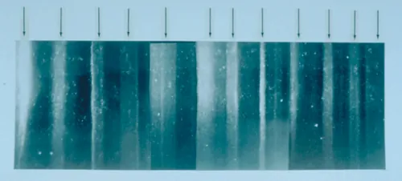

Ice. On the Greenland ice sheet, snow accumulates each winter and partly melts each summer, so that every year leaves a distinct band with its own dust, texture and chemical signature. Glaciologists count these bands individually, much as one counts the rings of a felled tree. Danish, Swiss and American teams have drilled cores more than three kilometers deep and counted some 60,000 annual layers, calibrating the count against eruptions of known date. Acid from the Laki eruption in Iceland lies in the layer counted as 1783, and acid from Tambora in Indonesia, the eruption that produced Europe’s “year without a summer,” lies in the layer counted as 1815.
Trees, lakes and stars. Tree rings record the same span of time through an entirely different mechanism. By matching the ring patterns of living trees with those of old roof beams and of logs preserved in peat bogs, researchers have assembled an unbroken calendar of nearly 14,000 years. Lake Suigetsu in Japan deposits a thin pale layer every spring and a dark one every autumn, and its sediments preserve tens of thousands of such pairs. Starlight gives yet another clock. When a star exploded in 1987 in a small galaxy next to the Milky Way, astronomers measured its distance by straightforward geometry and found that its light had been traveling for about 168,000 years.
Writing. The flood can also be tested against written records. The traditional count places the Mabul in the year 1656 from creation, about 2105 BCE. In that century Egyptian scribes were drafting tax registers and tomb inscriptions, and in southern Iraq the Third Dynasty of Ur had recently come to power. Its scribes left tens of thousands of dated clay receipts for barley, sheep and wages, and the kingdom’s bookkeeping continues through the date of the flood without interruption.
What gives these clocks their force is their independence. Snowfall, tree growth, lake sediment, starlight and the decay of uranium have no physical connection to one another, yet they converge on the same answer. Any single method can err, but a dozen unrelated methods are most unlikely to err in the same direction and by the same amount.
Four answers to this problem circulate widely in the frum world, and the sections below examine them in turn.
Four records and the date of the Mabul
Ice, tree rings and dynasties around 2105 BCE
Greenland’s ice layers and the tree-ring calendars are counted one year at a time. Egypt and Mesopotamia left kings, buildings and written records. Drag the line to any year and see what each record shows.
Dynasty dates follow the conventional (“middle”) chronologies used in standard histories of Egypt and Mesopotamia. The alternatives that scholars debate shift these dates by a few decades, or at most about a century, and none of them opens a gap. Ice: the Greenland Ice Core Chronology 2005 (GICC05). Trees: the bristlecone pine chronology of California and the oak chronologies of Ireland and Germany.
1.2Answer one: the scientists are lying
The bluntest response holds that the evidence is fabricated. Its best-known Orthodox exponent was Rav Avigdor Miller (1908–2001), whose recorded shiurim and question-and-answer sessions still reach a very large audience. Asked in 1974 how fossils could be millions of years old, he replied that “fossils are not old; it’s only because evolutionists need great time periods.” Elsewhere he called evolution “the biggest fraud,” and in 1988 he argued that layers of rock lying smoothly upon one another must have been deposited in rapid succession, concluding: “Not there were millions of years in between like the liars tell us.”
The researchers who count ice layers, tree rings and lake sediments come from dozens of countries and every religious background, and they build their careers by exposing one another’s errors. Oil and mining companies lose real money when geology is wrong, and they use the same layer-by-layer geology to decide where to drill. They find oil where that geology predicts. A plot to deceive the world would need Danish ice scientists, Japanese lake scientists, German tree-ring experts and Texas oil geologists to coordinate their findings. It would also need snowfall, tree growth and radioactive decay to go along with it.
Three more specific arguments recur. The first maintains that fossils are used to date rocks and rocks to date fossils, so that the whole system reasons in a circle. This ignores how the sequence of strata was established. The English canal surveyor William Smith had mapped the order of rock layers across England by 1815, and in the same years the French naturalist Georges Cuvier, himself an opponent of evolution, worked out the succession of fossils in the rocks around Paris. Both did so decades before Darwin published in 1859, so the order of the rocks was known before anyone invoked it in favor of evolution. In the twentieth century, physicists dated layers of volcanic ash interbedded with the fossil beds by measuring radioactive decay, a method independent of fossils altogether, and their dates confirmed the sequence Smith and Cuvier had found.
The second argument holds that smooth contacts between layers prove rapid deposition. Many contacts, however, are anything but smooth. In 1788 the Scottish geologist James Hutton found tilted and eroded strata capped by horizontal ones at Siccar Point, and the Grand Canyon displays the same relationship on an immense scale. Where contacts are smooth, the layers generally formed underwater, beyond the reach of wind and rain. The strata also contain features that cannot form quickly: fossil soils with roots still in place, desert dunes bearing animal tracks, thick salt beds left by repeated evaporation, chalk cliffs composed of the shells of microscopic marine organisms, and coral reefs still standing where they grew.
The third argument appeals to “modern” fossils. Rav Miller cited a human skeleton from Guadeloupe, held in the British Museum, as a fossil only a few centuries old. The skeleton is embedded in beachrock, a limestone that cements along tropical shores within decades, and geologists do not date anything by whether bones have turned to stone. Since no one claims that beachrock is millions of years old, a recent skeleton inside it has no bearing on the strata of the Grand Canyon.
1.3Answer two: the world was created looking old
A gentler response accepts that the evidence is real but holds that Hashem created the world already mature, as He created Adam a grown man. The English naturalist Philip Henry Gosse proposed this view in 1857 in a book titled Omphalos, Greek for “navel,” after his question whether Adam had one. Many of Gosse’s fellow Christians rejected the idea at once. The novelist and clergyman Charles Kingsley wrote that he could not believe God had written on the rocks “one enormous and superfluous lie.” In the Orthodox world, letters of the Lubavitcher Rebbe from the early 1960s proposed a version of the same answer, suggesting that fossils may have been created as they are.
The first difficulty concerns what this answer implies about Hashem. A world created with the appearance of age would contain records of events that never occurred: tree rings for summers that never happened, ice layers from snowfalls that never fell, and light from a star that exploded in 1987 although, on this view, the star never existed. Nowhere do Chazal describe Hashem planting false evidence in His world.
The second difficulty is that this answer cannot account for the flood. It might explain rocks that look older than 5,787 years, if they were made that way at creation. The traditional count, however, places the Mabul about 4,100 years ago, long after creation. A worldwide flood in 2105 BCE should have left its mark in the ice, in the lake sediments and in the writing of every civilization alive at the time, and no such mark has been found. Nor does the answer explain the many languages after Bavel, the genetic variety of a humanity descended from one family of eight, or kangaroos that traveled from Ararat to Australia without leaving a bone along the way.
1.4Answer three: stretch the pesukim to match the textbook
A third answer, popular in kiruv during the 1980s and 1990s, holds that the Torah and modern science say the same thing once each is properly understood. The physicist Gerald Schroeder argued that, because of relativity, six days measured from the moment of creation correspond to billions of years measured from earth. Others interpret each “day” as an era, or the Mabul as a local Mesopotamian flood.
These interpretations fail on the text itself. In Bereishis 1, fruit trees appear on the third day, before the sun on the fourth, and birds appear on the fifth day, before the land animals on the sixth. The fossil record puts land animals before birds and the sun before any tree. Whales, which the Torah’s taninim are often taken to include, descend from animals that once walked on land, so they cannot come a whole “day” before the land animals. No stretching of the word yom repairs the order. The local-flood reading, for its part, must explain away “all the high mountains under the entire heavens were covered” (Bereishis 7:19). It never explains why Noach needed to rescue birds from a flood they could have flown away from.
The method also ties the Torah’s meaning to the science of the decade, so that every revision of the science requires a revision of the meaning. Readers who watch a modern theory being forced onto an ancient verse often conclude that no honest answer exists, and their confidence in the Torah suffers accordingly.
1.5Answer four: Chazal took it literally, so it must be taken literally
For many frum readers this is the decisive objection: science may say what it likes, but Chazal read Bereishis as history, and Chazal determine what the Torah means.
Chazal, however, did not treat their own aggados as statements of fact, and they said as much in well-known passages.
Creation as a closed subject. The Mishnah treats the account of creation as an esoteric discipline, not to be taught in public or even to two students together (Chagigah 2:1), and the Midrash forbids inquiry into what preceded creation (Bereishis Rabbah 1:10).
Mashal and history. The Gemara records, without branding it heresy, the opinion that “Iyov never existed and was never created; he was a mashal” (Bava Basra 15a). Asked what became of the dead whom Yechezkel saw rise in the valley, Rabbi Yehuda answers, “In truth, it was a mashal” (Sanhedrin 92b). And where the Torah describes the cities of Canaan as “fortified up to the heavens,” Rabbi Ami states outright that “the Torah spoke in exaggeration,” as did the prophets and the Sages (Chullin 90b; Tamid 29a).
The sun, and the forming of Chava. The Sages of Israel held that the sun passes behind the sky at night, and the scholars of the nations held that it passes beneath the earth. Rebbi ruled that “their words seem more correct than ours” (Pesachim 94b). Rav and Shmuel disagreed about how Chava was formed: one said from a face and the other from a tail (Eruvin 18a; Bereishis Rabbah 8:1). Neither claimed a tradition from Sinai for his view.
Worlds before this one. The Midrash teaches that Hashem “built worlds and destroyed them” before this one (Bereishis Rabbah 3:7), and the Gemara speaks of 974 generations that were to have come before the present world (Chagigah 13b–14a; Shabbos 88b). In 1842 Rabbi Yisrael Lipschitz, author of the classic Mishnah commentary Tiferes Yisrael, used these sources to explain the mammoth bones and other giant remains then being dug up. He saw no threat to emunah in a very old earth.
The Geonim and Rishonim. Rav Sherira Gaon characterized interpretations drawn from verses by midrash and aggadah as “conjecture” and ruled that “we do not rely on the words of aggadah,” and his son Rav Hai Gaon wrote that aggados lack the authority of received tradition. The Yerushalmi had already established that halacha is not derived from aggados (Peah 2:4). The Rambam, in his introduction to the tenth chapter of Sanhedrin, described readers who take every midrash literally as damaging the honor of the Torah. In the Moreh Nevuchim he wrote that the creation account is not entirely to be taken literally (II:29), and that Chazal’s astronomy reflected the science of their age rather than prophecy (III:14). His son, Rabbeinu Avraham, held that no one is obligated to defend the Sages’ statements on medicine, natural science and astronomy merely because of their greatness in Torah. The Ramban, defending Judaism at the Barcelona disputation of 1263, said of midrash that one who believes it does well, and one who does not believe it does no harm.
None of these authorities read Bereishis 1–11 as countermyth, and they could not have, because the tablets that make the comparison possible were still buried. Many Rishonim, the Ramban among them, took the long lifespans of Bereishis 5 literally. Chazal and the Rishonim still left deliberate room for non-literal readings of aggadah, and the countermyth reading works within that room. Halacha is unaffected. The count of years from creation is a convention fixed by Seder Olam, and contracts, Shemittah and the Jewish calendar go on using it as before.
How a young earth became “Torah-true”
Geology, Protestant creationism and Orthodox writers, 1800–2010
Three tracks over two centuries: what geologists found, what Protestant creationists wrote, and what Orthodox writers taught. The orange lines follow George McCready Price’s arguments into Orthodox books. Select any point for the details.
Sources for each point are given in the sidebars of Part I and in the bibliography. Green marks Orthodox writers who accepted an old world, and purple marks those who taught a young one.
1.6A literal reading in full
All four answers seek to preserve Bereishis 1–11 as a literal record of events. Here is what that record looks like when it is taken literally, in full, with nothing explained away. Snakes would converse with people. Men would live nine hundred years and father children at five hundred. According to Pirkei d’Rabbi Eliezer, no one fell ill before dying until the time of Yaakov; a man would sneeze, and his soul would depart through his nostrils. On the most literal reading there were no rainbows before the year 1656, a reading the Ramban already rejected (on Bereishis 9:12). Giants would be born to divine fathers, and every kangaroo alive today would descend from a pair that hopped from eastern Turkey to Australia. The Ark Encounter in Kentucky, built by Answers in Genesis, displays dinosaurs penned aboard Noach’s ark, because its reading requires them to have been there.
The countermyth reading describes the actual world, in which ordinary people without books labored to understand where everything came from and handed that understanding to their grandchildren in the form that endured, which was narrative. The film below sets the two worlds side by side.
A short film in eight scenes
Two universes: Bereishis 1–11 as a news report, and as countermyth
On the left, the world as it would have to be if every detail of the opening chapters were a literal report. On the right, the real world in which those chapters were first heard. Press play, or pick a scene.
1.7The second question: the critics’ case
Readers untroubled by the science are often more troubled by the second question. In 1878 the German scholar Julius Wellhausen gave the Documentary Hypothesis its classic form. On this theory the Torah was woven together from four earlier documents, called J, E, D and P. J and E are named for the divine names they prefer, YHVH and Elohim, and D stands for Devarim. P stands for a Priestly writer who, the theory says, wrote much of Vayikra and Bamidbar during or after the Babylonian exile.
The evidence adduced will be familiar to anyone who has studied Chumash closely. Bereishis 1 and Bereishis 2 narrate creation in different sequences. The flood appears to be told twice, with Noach taking two of every animal in one passage and seven pairs of the clean animals in another, and with forty days of rain alongside a hundred and fifty days of rising water. The divine names, moreover, alternate from passage to passage.
Orthodox scholars have answered Wellhausen for more than a century. Rabbi David Zvi Hoffmann demonstrated in 1904 that Devarim presupposes the Priestly laws rather than preceding them. Umberto Cassuto showed that the alternation between Elokim and Hashem follows the meaning of each passage, not a change of author. Rabbi Mordechai Breuer argued that the Torah speaks in deliberately parallel voices, and Rabbi Joshua Berman has shown that ancient Near Eastern texts often combine perspectives that appear contradictory to modern readers.
The countermyth reading adds a further answer. The two creation accounts differ because each responds to a different family of myths and takes the order and shape of the story it overturns. Neither of the two flood “sources” is a complete narrative; only together do they follow Gilgamesh step by step, which indicates a single author answering a single story. Part III presents this evidence in detail, and Part IV shows that the myths these chapters answer, together with the manner of their answer, belong to the second millennium BCE rather than to the exile.
Academic scholars discovered much of the comparative evidence assembled here, and their findings are used gratefully; their conclusions are another matter. Many treat the Documentary Hypothesis as settled before they begin, and that premise governs how they read the evidence. A scholar committed to dividing the flood into two documents must maintain that two separate authors each answered Gilgamesh with half a story, and where a theory compels so strained a reading, this monograph follows the evidence instead.
Part II
How myth works
What a myth is, how it conveys truth, why a culture without books depended on it, and how a countermyth differs from a copy.
Crater Lake, Oregon. Photo: King of Hearts, CC BY-SA 4.0 · Wikimedia Commons

2.1What scholars mean by myth
In ordinary English a “myth” is a falsehood, but scholars use the word in another sense. For them a myth is a story set at the beginning of things that explains why the world is as it is: why people die, why farming is hard work, why the sea stays on its shore, why nations speak different languages and why a rainbow follows rain. A myth carries a people’s deepest beliefs about God, the world and themselves, in images that stay in the memory, such as a garden, a serpent, a boat or a tower. Calling Bereishis 1–11 countermyth names the kind of writing these chapters are, so that a reader can ask them the right questions. It does not call them false.
Real events underneath. Many myths grow from a real event that is reshaped over generations until it carries a meaning. The Klamath people of Oregon told of a battle between Llao, chief of the underworld, and Skell, chief of the sky. It ended when Llao’s mountain collapsed and a deep lake filled the hole. Geologists later found that Mount Mazama erupted and collapsed about 7,700 years ago, forming Crater Lake, so the Klamath had kept the memory of a real eruption for some three hundred generations as a war between spirits. Along the Australian coast, the geographer Patrick Nunn and the linguist Nicholas Reid collected Aboriginal traditions from more than twenty places that describe land now under the sea. Their details match the rise in sea level after the last ice age, more than seven thousand years ago. On the Columbia River, Native peoples told of a stone “Bridge of the Gods” that fell when two mountain brothers fought, and geologists have found a landslide that dammed the river there around the fifteenth century.
Troy. Homer’s Troy was an actual city. Its ruins in northwestern Turkey include a destruction layer from about 1180 BCE, and Hittite correspondence mentions a western kingdom called Wilusa, the name the Greeks remembered as Ilios. By the time the Iliad was sung, however, the war had acquired gods who took sides, a hero whose mother was a sea goddess, and a cause, the abduction of Helen, that no historian can confirm.
2.2A world without books
People raised with printed books and search engines naturally assume that ancient audiences wanted plain information, but almost no one in the Bronze Age lived in such a world. The Egyptologist John Baines estimated that about one percent of ancient Egyptians could read, most of them palace scribes and temple priests, and reading was only a little more common among Babylonian merchants and officials. The farmers, shepherds, weavers and village elders of the Near East lived in an oral culture. Almost everything a person knew about God, history and the world came to him by ear.
In an oral culture, bare facts fade quickly, and a list of dates or measurements gets garbled within a generation or two. What lasts is a story with vivid images and high stakes, the kind people want to tell their children. Elizabeth Wayland Barber and Paul Barber showed in When They Severed Earth from Sky that peoples without writing preserve lasting truths in such stories. The surface details change with each teller, while the core survives for thousands of years.
The Torah therefore could not have opened with a different kind of writing. A first chapter written as a geology textbook, with deep time, drifting continents and the life cycles of stars, would have been impossible to understand or remember at Sinai, and it would have answered questions no one was asking. The questions people were asking were the ones their myths addressed. Who made the world? Are the sun and the sea gods? Why do people die? Why did the flood come? Does heaven belong to Babylon? The Torah answered in stories, the form that lasted, and it chose the stories everyone already knew so that listeners would notice each change.
2.3Countermyth and copying
Readers encountering the Babylonian flood tablets for the first time often assume that any shared detail proves dependence. Borrowing and answering are different activities, however, and the difference can be tested. A borrower adopts a neighbor’s story because he lacks one of his own, and the story retains its original beliefs. A polemicist adopts a story because everyone knows it, and he alters the very elements that carry its meaning. Three tests distinguish the two.
The outline stays and the God changes. In a copy, the gods behave more or less as they did in the source. Bereishis 1–11 follows the outline of the region’s stories: first waters, a sky set above the sea, a garden with a serpent, a flood survived in a boat sealed with pitch, and a brick tower in Babylon. Every divine motive, however, has been changed. The Babylonian gods quarrel, panic, go hungry and drown humanity for being too noisy. Hashem acts alone and judges people by how they treat one another.
Names are avoided and powers are reduced. Israel’s neighbors worshiped the sun and moon as Shamash and Yarikh, names nearly identical to the Hebrew shemesh and yareach. Bereishis 1 avoids both words and speaks only of “the greater light” and “the lesser light.” The taninim, the sea dragons Baal fought in Canaanite poetry, appear in Bereishis 1:21 as ordinary marine creatures that Hashem created and blessed.
Dignity moves from gods and kings to every person. In the Babylonian epics, the gods fashioned humanity from clay and a slain god’s blood so that people would dig canals and feed them. In Egypt and Mesopotamia, only the king or a temple statue bore the title “image of the god.” Bereishis confers that title on every man and woman, and it is Hashem who feeds humanity rather than the reverse.
When all three tests are satisfied, the shared imagery points to an argument with the older story. In Part III each comparison carries a label indicating its strength. Tablet match means that a specific ancient text shares wording or a sequence of events with the passage. Strong denotes a well-documented theme that the passage explicitly reverses. Probable denotes a widespread theme supported by good but less direct evidence. Suggested marks connections proposed here for the first time, or drawn from a minority view, for readers to evaluate.
2.4Countermyth elsewhere in Tanach
Tanach employs the countermyth method openly in passages where no one disputes what is taking place.
Eliyahu on Har HaCarmel (Melachim I 18). Baal was the Canaanite storm god, credited by his worshipers with sending rain and hurling lightning. Achav’s kingdom had endured three years of drought when Eliyahu challenged Baal’s prophets on Baal’s own ground, proposing that the god who answered with fire from heaven be acknowledged as God. Baal’s prophets cried out from morning until afternoon while Eliyahu mocked them, suggesting that their god was asleep or traveling. Then fire fell for Eliyahu, and rain followed, so that both of Baal’s signature powers were shown to belong to Hashem.
The prophets borrow a pagan poem’s words. Yeshayahu foretells that Hashem will punish Livyasan, “the fleeing serpent, … the twisting serpent” (Yeshayahu 27:1). Clay tablets from Ugarit, a Canaanite port on the Syrian coast destroyed around 1185 BCE, recount how Baal struck a sea monster named Litan and describe it with the same two epithets in the same order. Yeshayahu retained the monster and replaced the god who defeats it. Elsewhere he binds the ancient sea battle to Israel’s own history: “Was it not You who hacked Rahav apart, who pierced the dragon? Was it not You who dried up the sea, the waters of the great deep, who made the depths of the sea a road for the redeemed to cross?” (Yeshayahu 51:9–10). The myth of a god who subdues the sea has become the splitting of the Yam Suf.
Tanach answers its own earlier stories. Judy Klitsner’s Subversive Sequels in the Bible reads Yonah against Noach. Noach learns that the world will be destroyed, builds a vessel and says nothing; Yonah learns that Nineveh will be overturned, boards a ship in flight, and then watches teshuvah spare the city. A reader who knows Noach hears the reversal in Yonah. The claim about Bereishis 1–11 is that those chapters apply the same method without naming their targets, since the audience at Sinai already knew them.
2.5Reading Tanach by kind
Every traditional reader already classifies the passages of Tanach by genre. In Shoftim 9, Yosam stands on Har Gerizim and relates how the trees sought a king, with the olive, the fig and the vine each delivering a speech. No one asks where these trees grew or what language they spoke, because the form identifies the passage as a mashal. When Tehillim says that the mountains skipped like rams as Israel left Mitzrayim (114:4), no one checks the claim against the geology of Sinai.
Halacha exercises the same discipline. The Torah writes “an eye for an eye,” and Chazal rule that the verse requires monetary compensation for the value of the eye (Bava Kamma 83b–84a). As Rabbi Mark Glass has observed, readers accept a nonliteral reading of a law without hesitation, yet grow uneasy when the same question of genre is asked of a narrative. The Rambam wrote that had the eternity of the universe been demonstrated, he would have interpreted the creation verses accordingly, just as he already interprets the verses that ascribe a hand or an eye to Hashem (Moreh Nevuchim II:25).
2.6The strange as ordinary in Bereishis 1–11
The Torah itself marks where its opening chapters end, for the way a narrator treats the impossible tells the reader what kind of world a story inhabits. In Bereishis 1–11, phenomena that never occur in ordinary life belong to the scenery, and the narrator passes over them without remark. From Avraham onward, a miracle is an event: the narrator announces it, attributes it to Hashem and records the astonishment of those who witness it.
| What Happens | Source | How the Narrator Tells It |
|---|---|---|
| A snake speaks to Chava | Bereishis 3:1–5 | No miracle is announced, and Chava answers the snake as she would answer any person. |
| Trees confer life and knowledge | Bereishis 2:9; 3:22 | Both trees are introduced as ordinary fixtures of the garden. |
| Men live 900 years and father sons at 500 | Bereishis 5 | The lifespans sit in a repeating ledger with no comment or amazement. |
| Sons of the gods marry human women; Nefilim appear | Bereishis 6:1–4 | Told in four brief verses with the casual aside “and also afterward.” |
| The entire earth speaks one language | Bereishis 11:1 | Stated flatly as the opening condition of the tower episode. |
| A man of 100 and a woman of 90 have a son | Bereishis 17:17; 18:12–14 | Both Avraham and Sarah laugh, and Hashem asks whether anything is too wondrous for Him. |
| A bush burns without being consumed | Shemos 3:2–3 | Moshe turns aside specifically to inspect “this great sight.” |
| The makkos strike Egypt | Shemos 7–11 | Each plague is announced beforehand; Egyptian magicians fail to match them; hail and locusts are called unmatched. |
| The earth opens and swallows Korach | Bamidbar 16:28–30 | Moshe calls it a “new creation” meant to prove who sent him. |
| A donkey speaks to Bilaam | Bamidbar 22:28 | The narrator explicitly states beforehand that “Hashem opened the mouth of the donkey.” |
| The sun stands still at Givon | Yehoshua 10:12–14 | The text declares that “there was no day like it before or after.” |
The snake and the donkey. The talking serpent and Bilaam’s donkey illustrate the contrast. The serpent speaks in the Torah’s first conversation, and the text notes only that it was the shrewdest creature of the field, whereas before Bilaam’s donkey speaks, the verse informs the reader that “Hashem opened the mouth of the donkey” (Bamidbar 22:28). Chazal drew the same distinction. The Mishnah lists ten things created at twilight before the first Shabbos, among them the mouth of Bilaam’s donkey, the mouth of the earth that swallowed Korach and the manna (Avos 5:6), and the serpent’s speech is absent from the list. Second Temple writers, including the Book of Jubilees (3:28) and Josephus (Antiquities 1.1.4), treated animal speech as the normal condition of the world before the expulsion from Eden, while a speaking donkey in Moshe’s time was a miracle.
The lifespans. Bereishis 5 records men fathering sons at 187 and at 500, and Shem fathers Arpachshad at 100 before living another five centuries (11:10–11). Six chapters later, Avraham is told that he will have a son at 100 and falls on his face laughing (17:17). By chapter 17, the narrative obeys the same natural laws as the reader’s own world.
The pattern has limits. Giants appear later without comment, among them the Emim, the Anakim and Og with his iron bed nine amos long (Devarim 2–3), and ancient historians such as Herodotus sometimes report marvels just as flatly. Even so, the boundary at Bereishis 12 is visible in the Hebrew text before a single tablet is consulted, and Part III shows that the tablets mark the same boundary.
Extraordinary events before and after Bereishis 12
Each point is an extraordinary event. Before Avraham, the narrator passes over them without comment. From Bereishis 12 on, breaks with nature are announced, credited to Hashem and met with surprise. Select a point.
2.7Seams between the stories
Bereishis 1–11 does not read as a single continuous chronicle. Kayin fears that “whoever finds me will kill me” and then builds a city, although the text has named only four people in the world. His descendants Yaval, Yuval and Tuval-Kayin found the crafts of herding, music and metalwork (4:20–22), crafts that persist in the reader’s world, yet Kayin’s entire line perishes in the Mabul. Bereishis 10 lists nations “each with its own language,” and Bereishis 11 opens by stating that the whole earth had one language. Chapter 1 creates plants, then animals, then man and woman together; chapter 2 creates man, then a garden, then animals and finally woman.
The Torah sets these accounts side by side and never stops to reconcile them, and no verse announces that it is going back to fill in details. An author writing a single chronicle would have smoothed these seams. An author answering several different stories would leave each answer in the shape of the story it answers. Later readers worked hard to harmonize the accounts, from the Book of Jubilees onward. Rashi (on 1:27) applies one of Rabbi Eliezer’s thirty-two rules of interpretation to the two creation stories: a general statement may be followed by its details.
The numbers, too, show signs of design. Ten generations separate Adam from Noach, and ten more separate Noach from Avraham, a symmetry the Mishnah itself points out (Avos 5:2). The three ancient versions of Bereishis 5 are the Masoretic text, the Samaritan Torah and the Greek Septuagint. They differ in the fathers’ ages by round hundreds, and so they place the flood in three different years: 1656, 1307 and 2242 from creation. Halacha follows the Masoretic text. The variants show, however, that ancient scribes, far closer to the Torah’s world than any modern reader, treated these figures as a pattern that could be adjusted, not as a register of births.
Bereishis 5 in three ancient versions
The Masoretic text, the Samaritan Torah and the Greek Septuagint differ by round hundreds in the fathers’ ages. The flood moves across a span of 935 years, and in one version Mesushelach outlives it.
2.8The old myths in Chazal
Chazal did not have the tablets, but pieces of the old myths reached them, and they treated those pieces the way the Torah had. The Gemara records that at creation Hashem ordered the Prince of the Sea to open his mouth and swallow the waters. When the Prince refused, Hashem struck him dead, and the Gemara even gives his name, Rahav (Bava Basra 74b). The ancient battle between a god and the sea survived in the beis medrash more than a thousand years after Ugarit fell. The same page tells that Hashem killed the female Livyasan and preserved her for the righteous in the world to come, and that the sea monsters had to be kept from breeding so that they would not destroy the world. Chazal explained the divine name Shakai as “the One who said to His world, ‘Enough’ (dai),” when the world kept expanding, and they described Adam before his sin as reaching from earth to heaven (Chagigah 12a).
These teachings were neither zoology nor astronomy. They were lessons about Hashem’s mastery over chaos and humanity’s fall from greatness, expressed in a mythic idiom that still carried weight in Chazal’s world. Part VII shows how Chazal answered Greek philosophy, Roman festivals and Persian dualism in the same manner, retelling a rival story so that its meaning was reversed.
Where the tablets and inscriptions were found
Where excavators found the tablets and inscriptions discussed in this monograph, from southern Mesopotamia through Syria and Canaan to Egypt. Select a site or a region.
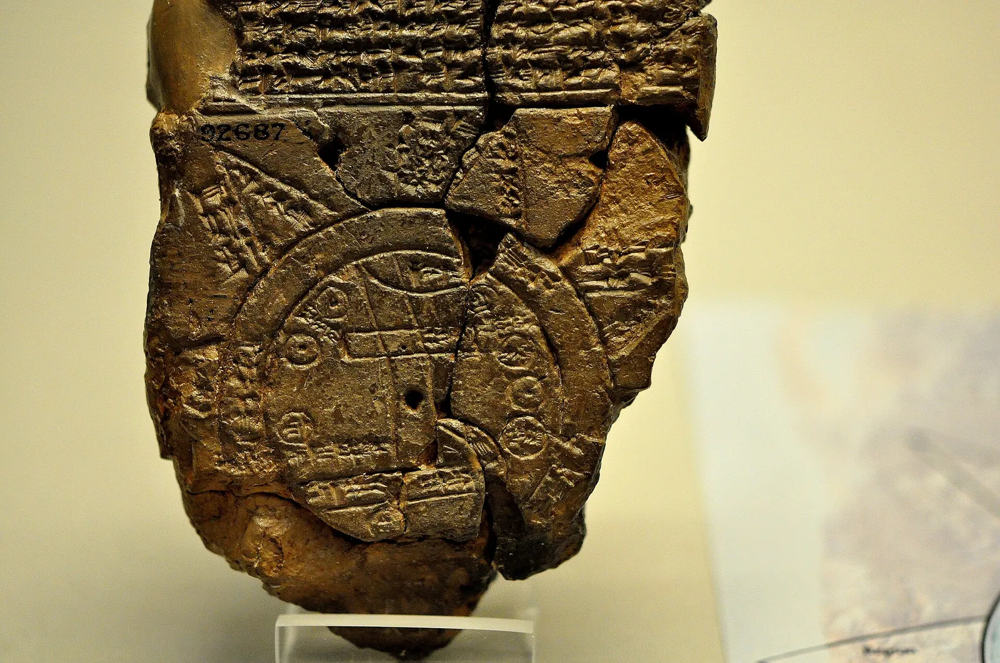
Part III
Bereishis 1–11, story by story
Each passage set beside the stories it answers, from the first pasuk to the tower of Bavel, with the strength of every comparison marked.
The Babylonian Map of the World, British Museum. Photo: Osama Shukir Muhammed Amin FRCP(Glasg), CC BY-SA 4.0 · Wikimedia Commons

3.1The ancient texts compared in this part
A small number of ancient texts recur throughout this part, and a brief introduction to each will help.
Atrahasis is a Babylonian epic about the creation of humanity and a great flood; its best copy dates to about 1635 BCE, and the composition itself is older. The Epic of Gilgamesh follows a king in his quest for immortality, which leads him to the survivor of the flood. Its earliest versions date to about 1800 BCE, and a fragment of the fourteenth century BCE was excavated at Megiddo in the Land of Israel. The flood tablet that made the epic famous, however, was copied in Nineveh in the seventh century BCE from an older edition. Enuma Elish, the Babylonian creation epic, tells how the god Marduk slew the sea goddess Tiamat and built the world from her carcass; most scholars date it to about 1100 BCE, though some argue for an earlier date. The Baal Cycle from Ugarit, written down around 1250 BCE, recounts how the Canaanite storm god vanquished the Sea and the dragon and received a palace. Adapa, a Babylonian tale of a sage who forfeits his chance at immortality, survives in a fourteenth-century copy found in Egypt, and the Sumerian King List, copied around 1800 BCE, records kings who reigned for tens of thousands of years before the flood.
Egyptian sources matter as well, since Moshe’s generation came out of Egypt. They include hymns to the sun god, the cosmogonies of the temple cities of Heliopolis and Hermopolis, and the Book of the Heavenly Cow, painted in royal tombs from about 1320 BCE, in which the sun god nearly annihilates humanity. Each comparison below carries one of the four labels introduced in Part II: Tablet match, Strong, Probable or Suggested.
3.21:1–2 · The beginning
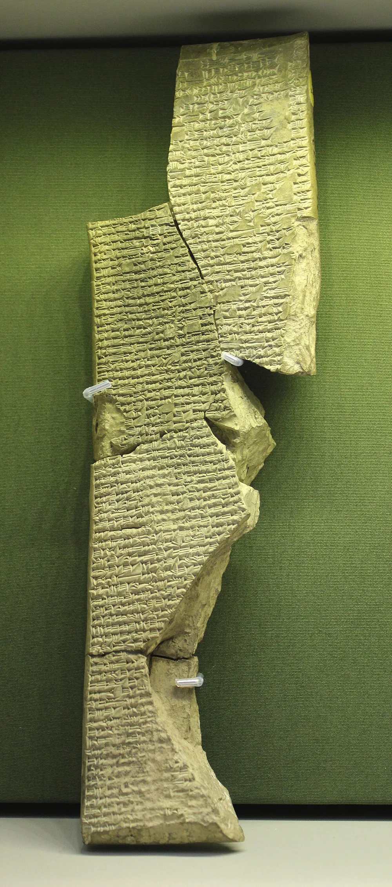

“In the beginning.” Strong Ancient creation narratives characteristically open with a temporal clause beginning “when.” Enuma Elish begins “When in the height heaven was not named,” in L. W. King’s classic translation, and the first line of Atrahasis is usually rendered “When the gods were man.” Rashi construes the Torah’s opening words the same way: “In the beginning of Hashem’s creating the heavens and the earth, when the earth was formless and void….” Beyond that shared opening, the narratives diverge. In Enuma Elish the fresh waters, Apsu, mingle with the salt sea, Tiamat, and the gods are born of their union. In the Hurrian and Hittite Song of Kumarbi, known from tablets of the fourteenth and thirteenth centuries BCE, each generation of gods overthrows its predecessor. Bereishis contains no birth of gods, no elder generation and no revolt. Hashem is already present, and the Torah’s first verb is His: bara, He created.
“Formless and void, darkness over the deep, and the wind of Elokim hovering over the waters.” Probable The priests of Hermopolis taught that eight gods, in four pairs, existed before creation. Nun and Naunet were the first waters, Heh and Hauhet were boundlessness, Kek and Kauket were darkness, and Amun and Amaunet, “the hidden ones,” were linked with air and wind. Bereishis 1:2 names the same four things: formlessness, darkness, the deep and wind. Here, however, they are lifeless conditions of the world before creation, and the only active presence is the ruach of Elokim. A listener raised in Egypt would have recognized the four divine pairs behind that list.
The deep, tehom. For a century, commentators maintained that tehom was borrowed from Tiamat, the sea goddess of Enuma Elish. The linguist David Tsumura demonstrated that both words descend from a common Semitic term for the deep sea and that tehom is ordinary Hebrew. In Babylon, Marduk must slay the deep before he can build; in Bereishis, the deep lies motionless beneath the darkness and offers no resistance.
3.31:3–5 · Light, and evening and morning
“Elokim said, ‘Let there be light.’” Strong Creation by speech was an Egyptian idea long before Moshe. Texts of the Old Kingdom, earlier than 2100 BCE, already name Hu, the divine word of command, as an instrument of the creator. The Shabaka Stone in the British Museum preserves a theology in which the god Ptah conceived all things in his heart and brought them into being with his tongue. Because the stone was carved around 710 BCE and specialists dispute whether its text is much older, it can show only that the idea was current in Egypt, and it cannot date anything. Bereishis retains the creative word but gives it to a speaker without a temple, a home city or rival gods.
Light comes before the sun. Strong In every Egyptian creation story, the first light is the sun god himself, rising from the first waters onto the first mound of earth. Light and life come from the sun because the sun is divine. Bereishis creates light on the first day and the sun only on the fourth, which makes the sun a lamp hung in the sky three days after light already existed. Chazal discussed this order and taught that the light of the first day was a special light, stored away for the righteous (Chagigah 12a).
“There was evening and there was morning.” Strong Funerary books painted in the royal tombs of the New Kingdom, such as the Amduat, describe the sun god’s nightly voyage through the underworld, where he must defeat the chaos serpent Apep in order to rise again. Each dawn thus marks a victory in a perpetual war. In Bereishis, evening and morning succeed one another because Hashem separated light from darkness.


3.41:6–19 · The sky, the seas, the land and the lamps
The rakia that separates waters from waters. Tablet match In Enuma Elish, Marduk splits Tiamat’s body in two, like a fish split for drying, raises half of it as the sky and posts guards to keep her waters from escaping. Bereishis 1:6–8 presupposes the same cosmology, a solid vault restraining the waters above with further waters below. The entire region shared this picture of the world, and the Torah adopts it because it addressed its listeners within the cosmology they held. What the Torah omits is the corpse: its vault is made by Hashem’s word, with no slain goddess inside it. The combat underlying the Babylonian scene is older than Enuma Elish, for a letter from Mari written about 1770 BCE quotes the storm god of Aleppo reminding King Zimri-Lim that he had given him the weapons with which he fought the Sea.
“Let the waters gather and let dry land appear.” Strong In Egyptian thought, creation began when a first mound of earth rose from the waters and the creator stood on it, and temples were built as copies of that sacred mound. In Bereishis the land appears because the waters obey a command, and Hashem then names the gathered waters yamim, “seas.” Suggested At Ugarit, Yam, “Sea,” was a god and Baal’s great enemy. Here the word is an ordinary noun in the plural, and Hashem gives it its name. In the ancient world, naming something meant having authority over it, and Enuma Elish opens in a time before heaven had been named. In Bereishis it is Hashem who names day, night, sky, land and seas.
Plants on the third day. Probable Throughout the region, the harvest was thought to depend on gods who died and came back to life. At Ugarit the earth withered while Baal lay dead and flourished again when he revived. In Egypt Osiris was the god inside the grain, and mourners planted barley in Osiris-shaped beds so that it would sprout from his body. In Bereishis the earth brings forth plants at Hashem’s command, each “according to its kind,” on a day when neither the sun, nor a rain god, nor a dying god yet exists.
The greater light and the lesser light. Tablet match The fifth tablet of Enuma Elish describes Marduk setting up the stars as stations for the great gods, fixing the year and its months and crowning the moon to mark the days. Bereishis 1:14 gives the lights the same jobs, “for signs and for seasons, and for days and years.” It avoids the words shemesh and yareach, however, because those were the names of the sun god and the moon god among Israel’s neighbors, and speaks only of “the greater light” and “the lesser light.” Babylonian diviners read the stars for the fate of kings, while the Torah gives the stars two words at the end of a sentence, ve’es hakochavim, “and the stars.” Yirmiyahu later warns, “Do not be frightened by the signs of the heavens, though the nations are frightened by them” (10:2). Michael Fishbane noticed that Devarim 4:16–19 lists the forbidden images in the reverse order of Bereishis 1: people, animals, birds, creeping things, fish and heavenly bodies. The creatures that Bereishis 1 says Hashem made are the very ones Devarim forbids Israel to worship.
3.51:20–23 · The sea dragons
“Elokim created the great taninim.” Tablet match In the Ugaritic tablets, Baal and his sister Anat boast of defeating Yam, the Sea, together with his monstrous allies, among them a dragon called tunnanu, the same word as the Hebrew tanin. Israel’s poets knew this idiom well; Tehillim praises Hashem who “smashed the heads of the taninim on the waters” and “crushed the heads of Livyasan” (74:13–14). Bereishis 1:21 employs the verb bara, which the chapter reserves for three moments only: the opening verse, these sea creatures and humanity. The Torah pauses to state that Hashem created the dragons and then that He blessed them, so that the monsters of Canaanite poetry become marine animals, made on the fifth day alongside the fish. Tehillim 104:26 goes further still, saying that Hashem formed Livyasan to sport in the sea.
3.61:24–31 · The creation of people
Why people exist. Tablet match Babylonian literature offers a stark answer. In Atrahasis, the junior gods dig the Tigris and Euphrates by hand until they burn their tools and besiege the house of Enlil, their chief, by night. The divine council ends the revolt by slaying a god named We-ila and mixing his flesh and blood with clay to fashion human beings, who will bear the gods’ burden thereafter. Enuma Elish repeats the scheme with the blood of the rebel god Kingu, so that the gods may rest and be fed. In Bereishis, human beings arrive last, in a world already furnished for them, and Hashem provides their food: “I have given you every plant that bears seed … it shall be yours for food” (1:29).
“Let us make man.” Probable In Atrahasis, the creation of humanity is a resolution of the divine assembly, debated and adopted. Bereishis retains a plural, “let us make,” but without an assembly, a debate or a slain god. Rashi explains the plural as Hashem’s humility in consulting His heavenly court, and he notes that the following verse returns to the singular, “and He created,” so that no one could infer the existence of other creators.
“In the image of Elokim.” Strong In Egypt and Mesopotamia, the living image of a god was a temple statue or the king; the name Tutankhamun means “living image of Amun.” A ninth-century statue of a local ruler, discovered in 1979 at Tell Fekheriye in Syria, describes itself as his tzelem and his demus, the same pair of words as “in our image, after our likeness.” A king’s image was the statue he erected to represent him. Bereishis extends that status to every human being, male and female. The idea itself was not entirely new, since an Egyptian wisdom text of about 2000 BCE, the Instruction for Merikare, calls humanity the god’s cattle and his images and says he made heaven and earth for their sake. Bereishis, however, makes the image the foundation of law: “Whoever sheds the blood of man, by man shall his blood be shed, for in the image of Elokim He made man” (9:6). The Mishnah draws the consequence that every person is an entire world, and that no one may say “my father is greater than yours” (Sanhedrin 4:5).
“Be fruitful and multiply.” Tablet match Atrahasis ends with the gods permanently curbing human population through barren women, a demon who snatches infants from their mothers’ laps and orders of priestesses forbidden to bear children. Bereishis opens with a blessing to fill the earth and renews it after the flood (9:1), a reversal the flood section below examines more closely.
3.72:1–3 · Shabbos and the seven-day building stories
The shape of the week. Strong The six days form two parallel columns. Days one through three create three realms by division, separating light from darkness, the upper waters from the lower and sea from land. Days four through six populate the same realms in the same order, with lights for day and night, fish and birds for sea and sky, and animals and humanity for the land. The seventh day stands outside both columns.
Ancient audiences knew the pattern of a seven-day building narrative that culminates in divine rest. Gudea, ruler of the Sumerian city of Lagash around 2125 BCE, dedicated a temple to his god with a seven-day festival. In the Baal Cycle, fire burns in Baal’s new palace for six days, and on the seventh the palace is complete and Baal holds a banquet. In Enuma Elish, after Marduk has ordered the cosmos, the gods build his temple Esagila in Babylon and take their rest there.
Bereishis preserves the seven-day pattern but builds no palace in any city; the seventh day itself is blessed and sanctified, and every household observes it. The Torah binds creation to the Mishkan through deliberate verbal parallels. The heavens and earth are “finished” (vayechulu, 2:1), as the work of the Mishkan is “finished” (vateichel, Shemos 39:32); Hashem surveys all that He made (1:31), as Moshe surveys all the work (39:43); and each account closes with a blessing. The world is Hashem’s great sanctuary, and the Mishkan is its model.
Who rests, and why. Tablet match In Atrahasis, humanity is created so that the gods may rest. In Bereishis, Hashem works and then rests Himself, and He later commands that the servant, the stranger and even the ox and the donkey share that rest (Shemos 20:10; 23:12).
The seventh day, turned from evil to holy. Probable Babylonian hemerologies, calendars of auspicious and inauspicious days, marked the seventh, fourteenth, nineteenth, twenty-first and twenty-eighth days of certain months as perilous. On those days the king was not to eat meat roasted over coals, change his garments, ride in his chariot or render judgment, and the physician was not to touch the sick. These were days of dread rather than rest. The surviving copies date to the first millennium BCE, and the age of the practice is unknown. Bereishis takes the seventh day and declares it blessed and holy (2:3).
The six days in two columns
The first three days make light, the sky and the seas, and the dry land. The next three fill the same realms in the same order: the lights, the birds and fish, the land animals and people. Shabbos stands outside both columns.
3.8Two creation accounts
At Bereishis 2:4 the narrative begins again, and three things change. The sequence changes, for before any plant has grown Hashem forms a man, plants a garden, makes the animals and finally builds a woman. The style changes, as the formal repetitions of chapter 1 give way to a story with dialogue, a man, a woman and a serpent. And the divine name changes: chapter 1 uses only Elokim, whereas chapters 2 and 3 use the compound name Hashem Elokim, which occurs twenty times in these two chapters and scarcely anywhere else in the Torah. The critics infer two authors writing two accounts, subsequently joined by an editor.
The countermyth reading accounts for these differences otherwise. The two narratives answer two different families of myth, and each takes its shape from the stories it addresses.
Chapter 1 answers the myths of the cosmos. These are the stories of how sky, sea, land and the heavenly lights came to be and how a god took his throne. Enuma Elish, the Baal Cycle and the Egyptian creation stories move from the first waters to the separation of sky and sea, then to dry land, the heavenly lights and finally living creatures and humanity, and they end with a god at rest in his temple. Bereishis 1 goes through the same stages in the same order and ends with Shabbos. Its style is the stately, repeating rhythm of a hymn or a royal inscription. Its God is Elokim, the universal power over nature, because that was the role the cosmic myths gave their gods.
Chapters 2 and 3 answer the myths of the first humans. These myths ask why people were made and from what, why they must work the soil, why men and women marry and why they die. They include Atrahasis, Adapa, Gilgamesh and his wild companion Enkidu, and the Sumerian tales of the paradise of Dilmun. They begin with an earth that has no one to work it, shape a human from clay, place him among the animals, bring him a woman and tell how he came within reach of eternal life and lost it. Bereishis 2–3 follows the same order. There is no plant and “no man to work the ground” (2:5), and a man is formed from the dust. Then come a garden, animals that cannot be his partner, a woman, a tree of life, a serpent and death. The style is that of a story told beside a fire, and God shapes with His hands like a potter and walks in the garden, because that is how these myths described the gods who made humanity.
The double name. The God of chapter 2 is not a lesser deity who tends humanity while a greater one governs the cosmos, as in pagan pantheons with their division of divine labor. He is Hashem Elokim, the personal God and the universal God under a single name. Chazal read the change of name in this way, as a deliberate statement rather than a change of author. Hashem first contemplated creating the world with strict justice alone, the attribute called Elokim. Seeing that the world could not endure, He joined to it the attribute of mercy, called Hashem (Bereishis Rabbah 12:15, cited by Rashi on 1:1).
This reading also explains why the Torah never pauses to reconcile the two accounts. Each answered a different question, and the original audience, familiar with both families of myth, could hear which question each answer addressed. Harmonization became necessary only later, after the old myths had been forgotten and the two accounts looked like rival reports of a single event.
Why the story starts over at 2:4
The two creation accounts and two families of myth
Chapter 1 follows the order of the myths about the cosmos. Chapters 2–3 follow the order of the myths about the first humans. Select a step to see what the Torah changes.
Cosmic myths: Enuma Elish, the Baal Cycle, the Egyptian creation teachings. Human-origin myths: Atrahasis, Adapa, the Old Babylonian Gilgamesh, Enki and Ninhursag. Each step is discussed, with its tablet, in the sections that follow.
3.92:4–17 · Dust, breath and the garden


“No man to work the ground.” Tablet match Atrahasis opens in a world where the gods perform all the agricultural labor, digging rivers and hauling baskets, until humanity is created to relieve them. Bereishis 2:5 likewise opens in a world without rain and with “no man to work the ground,” but it assigns the work a different purpose. Adam is placed in the garden “to work it and to guard it” (2:15), and all of it except a single tree is his to eat. Targum Yonasan renders “to work it and to guard it” as service in the Torah and observance of its commandments.
“Hashem Elokim formed the man from the dust of the ground.” Strong The verb vayitzer denotes a potter shaping clay. Egyptians depicted the ram-headed god Khnum fashioning human beings on a potter’s wheel, and in the birth reliefs of Queen Hatshepsut’s temple Khnum forms the royal child while a goddess extends the sign of life. In Atrahasis, the birth goddess kneads clay with the flesh and blood of the slain god, and the gods spit upon it. Bereishis keeps the potter but works only with dust from the ground and Hashem’s own breath, and no god dies.
“He blew into his nostrils the breath of life.” Probable Egyptian temple reliefs show gods holding the ankh, the hieroglyph of life, to the pharaoh’s nostrils, bestowing the breath of life as a royal prerogative. Bereishis gives that breath directly from Hashem to Adam, the ancestor of every human being.
A garden in Eden, with rivers flowing out of it. Strong The Sumerian poem Enki and Ninhursag, copied around 1800 BCE, describes the land of Dilmun as pure and undefiled, a place where the lion does not kill, the wolf does not seize the lamb and no one grows old or sick. In Gilgamesh, the survivor of the flood, granted eternal life, lives far away “at the mouth of the rivers.” Bereishis places its garden at the source of four rivers that water the world (2:10–14), a kind of paradise its first listeners would have recognized. In Bereishis, however, the garden belongs to Hashem, who plants it for a man.
The garden of the goddess. Probable In Sumerian poetry, the sacred garden was a place of divine sexuality. Enki and Ninhursag centers on the god Enki fathering children on the goddess Ninhursag, then on their daughter and then on their granddaughter. Eight plants sprout from his seed, he eats them all, and Ninhursag curses him until he falls deathly ill. In Sumerian love songs, the goddess Inanna calls her body a field and asks who will plow it, and her bridegroom Dumuzi answers. The sacred marriage of king and goddess was believed to make the land fertile. In another poem, a gardener named Shukaletuda finds Inanna asleep under a tree in his garden and violates her, and she takes revenge by sending plagues on the land. In a tale connected with Gilgamesh, Inanna plants a huluppu tree in her garden, and a serpent “that knows no charm” nests in its roots. No single tablet matches Gan Eden line for line, but the same set of features keeps returning: a goddess’s garden, a sacred tree, a serpent and divine sex as the source of fertility.
In Bereishis the garden belongs to Hashem, who has neither consort nor offspring; the tree is His, and the serpent is one of His creatures. The only sexuality in the narrative is the bond of husband and wife: “a man shall leave his father and mother and cling to his wife, and they shall become one flesh” (2:24). The fertility that pagan cult sought in the bed of a goddess comes in Bereishis from a blessing. The Torah later prohibits the kedeisha (Devarim 23:18), a term that in Canaanite and Akkadian designated women consecrated to a goddess’s temple.
A story that ends in “therefore.” That verse, “therefore a man shall leave,” discloses the genre of Bereishis 2. The word “therefore” (al ken) links the narrative to a custom in the listener’s own world, as it does at Nimrod, “therefore it is said, like Nimrod” (10:9), and at Bavel, “therefore its name was called Bavel” (11:9). Narratives that conclude with “therefore” explain why things are as they are, which is the characteristic work of myth.
3.102:18–25 · The animals, the woman and the wild man Enkidu
Tablet match The Epic of Gilgamesh contains an account of the first civilized man whose outline closely parallels Bereishis 2–3. The goddess Aruru pinches off clay and forms Enkidu in the wilderness, where he lives among the gazelles, grazing with them and drinking with them at the waterhole. A trapper sends him a temple prostitute named Shamhat, and after six days and seven nights with her the animals flee from him. He has lost his strength but gained understanding, and Shamhat tells him that he has become like a god. She clothes him, leads him to the shepherds and teaches him to eat bread. This episode already appears in the Old Babylonian version of about 1800 BCE.
Bereishis follows the same sequence. Adam lives among the animals and names them, yet “for Adam there was found no helper suitable for him” (2:20). Hashem builds the woman, and Adam exclaims, “This time, bone of my bones and flesh of my flesh.” They are naked and unashamed, but after they eat from the tree their eyes are opened and they know that they are naked. The serpent’s promise is fulfilled after its own fashion: “You will be like Elokim, knowing good and evil” (3:5; compare 3:22). Hashem clothes them and sends them out to eat bread by the sweat of their brow (3:19, 3:21).
In Gilgamesh, however, it is sex with a temple prostitute that makes a wild man human, and civilization is a gift. In Bereishis, the woman is a partner whom Hashem builds and brings to the man, and marriage is the normal state. The knowledge that comes with eating is the knowledge of shame and disobedience. Clothing first appears as an act of mercy after sin, and bread must be earned by sweat. Adam becomes “like Elokim” only through a choice he had been commanded not to make.
The rib. A widely repeated claim connects the woman formed from a rib with a Sumerian goddess named Nin-ti, whose name can mean both “lady of the rib” and “lady who makes live.” The pun exists only in Sumerian, and Part VIII explains why the comparison fails.
3.113:1–24 · The snake, the fruit and eternal life lost
“The snake was more cunning than any beast of the field that Hashem Elokim had made.” Strong In the ancient world the serpent was sacred. A cobra reared from the crown of every pharaoh; in Mesopotamia the serpent god Ningishzida guarded the gate of heaven; and the snake that sloughs its skin was an emblem of renewed life. The first thing Bereishis says of the serpent is that Hashem made it. It is a beast of the field, clever but not divine, and at the end of the story it is punished like any other creature.
Wisdom without eternal life. Tablet match The tale of Adapa survives in several fragments, the oldest found at Amarna in Egypt and copied in the fourteenth century BCE. One fragment says that the god Ea gave Adapa wisdom but held back eternal life. When Adapa is called up to heaven, Ea warns him not to eat the bread or drink the water he will be offered, because it is the food of death. When he arrives, the sky god Anu offers him the bread and water of life. Adapa obeys his patron and refuses, and he is sent home mortal while Anu laughs at him. Bereishis 3:22 describes the same situation in similar terms: “The man has become like one of us, knowing good and evil; and now, lest he stretch out his hand and take also from the tree of life, and eat, and live forever.” Wisdom has been gained and eternal life held back. In Adapa, however, a man loses eternal life because one god misled him or another changed his mind. In Bereishis, Hashem speaks truthfully from the start, the only liar is a serpent, and humanity loses eternal life by its own choice.
The snake and the plant of life. Probable At the close of the Epic of Gilgamesh, the hero at last obtains a plant that restores youth to the old. On the journey home he stops to bathe, and a serpent smells the plant, carries it off and sheds its skin, so that mortality appears as mere misfortune and the serpent alone enjoys renewal. In Bereishis the serpent receives no renewal; it loses its legs and eats dust all its days.
“Dust you shall eat.” Suggested Babylonian descriptions of the netherworld say that the dead subsist on dust and eat clay, as Enkidu sees in a dream before his death. The serpent that promised eternal life is thus condemned to eat the food of the dead, and Yeshayahu repeats the sentence in his vision of the end of days: “and the snake, dust shall be its bread” (65:25).
The curses. Strong In Atrahasis, humanity is made from clay to take over the work the gods refused to do, and the birth goddess sets the rules of childbirth. In Bereishis, hard work is the result of a human choice, what it produces is the worker’s own bread, and the man formed from dust returns to it: “By the sweat of your brow you shall eat bread, until you return to the ground, for from it you were taken” (3:19). Suggested In Enki and Ninhursag, the goddesses give birth after nine days, each day counting as a month, easily and without pain. The first human mother, by contrast, is told that she will bear children in pain (3:16).
“Mother of all living.” Some scholars associate the name Chava, and the epithet “mother of all living” (3:20), with a Canaanite or Hurrian mother goddess, but no tablet supports the link, and the evidence is too slender to rely on.
The keruvim and the flaming sword. Probable Winged guardian figures flanked the gates of Mesopotamian palaces and temples, and the Akkadian karibu were protective spirits who interceded for worshipers. Hashem stations keruvim at the gate of the garden. Ronald Hendel has argued that “the flame of the turning sword” is a demoted divine sentinel, comparable to the fiery messengers of the god Sea in the Baal Cycle, whose tongues are likened to sharpened swords. In Bereishis these guardians serve at Hashem’s gate and possess no independent power.
3.124:1–26 · Kayin, the first city and the inventors
“I have acquired a man with Hashem.” Suggested Chava names her son with the verb kanisi. In Ugaritic the same verb means to create or to bear, and the mother goddess Athirat is titled “creatress of the gods”; the Torah applies the verb to Hashem as well, “Koneh shamayim va’aretz,” Creator of heaven and earth (14:19). The first human mother uses the mother goddess’s word for a human birth and adds “with Hashem.”
The farmer and the shepherd. Probable Sumerian poets delighted in contests between farmer and shepherd. In Dumuzi and Enkimdu, a shepherd god and a farmer god compete for the goddess Inanna, who first favors the farmer before the shepherd wins her, and the rivals are reconciled. In the Debate between Sheep and Grain, the two commodities dispute which is more useful. Bereishis 4 stages the same rivalry between a tiller of the soil and a keeper of sheep, but where the Sumerian rivals make peace, the farmer in Bereishis murders the shepherd and Hashem judges him.
“Sin crouches at the door.” Probable The Hebrew of 4:7 is grammatically awkward, since the word for sin is feminine while the verb “crouches,” rovetz, is masculine. E. A. Speiser explained it from Akkadian, in which a demon called the rabitzu, “the croucher,” lurks at doorways to pounce. If Speiser is right, the Torah converts an external demon into an image of a person’s own desire and adds the assurance “and you can rule over it.”
The first city. Strong The Sumerian King List opens by declaring that kingship descended from heaven and resided first in Eridu, so that cities and kingship were gifts of the gods. In Bereishis the first city is built by Kayin, a murderer, and named for his son Chanoch (4:17). Suggested The next name in the line is Irad, and scholars including William Hallo have noted its resemblance to Eridu, the first city of the Sumerian list.
The inventors. Strong In the Sumerian poem Inanna and Enki, copied around 1800 BCE, the goddess Inanna carries off from the god Enki the gifts of civilization, a long list that includes crafts, musical instruments and metalwork. At Ugarit, the craftsman god Kothar-wa-Khasis forged weapons and built palaces for the gods. Later Babylonian texts say that seven sages sent by Ea from the sea taught humanity every art. In Bereishis 4:20–22, human beings invent the arts themselves. Yaval is the father of herdsmen who live in tents, Yuval of all who play the lyre and pipe, and Tuval-Kayin forges copper and iron. They descend from a murderer, and their achievements come alongside Lemech’s boast that he will be avenged seventy-seven times.
Lemech’s song. Probable Lemech speaks in verse, in parallel lines with ascending numbers, seven and then seventy-seven, a numerical device familiar from Ugaritic poetry. It is the first war song in the Torah, and it glories in vengeance, whereas Hashem’s mark on Kayin had been intended to restrain it.
“Then people began to call in the name of Hashem.” Chazal read the verb huchal in 4:26 as “profaned” and explained that idolatry began in the generation of Enosh (Rashi).
3.135:1–32 · Ten generations and the king list
Tablet match The closest ancient parallel to Bereishis 5 is the Sumerian King List. Its best copy is a clay prism in Oxford, the Weld-Blundell Prism, inscribed around 1800 BCE. Before the flood it lists eight kings in five cities, with reigns of 28,800, 36,000 and 43,200 years that add up to 241,200 years. Then comes the break, “Then the flood swept over,” after which kingship comes down from heaven again. The reigns shrink to 1,200 years, then 960, then 670, until Gilgamesh rules for 126 years and his son for 30. Another version lists ten kings before the flood, the last of whom is the flood hero.
Bereishis 5 shares this architecture: ten generations with enormous figures, then the flood, then a genealogy whose ages decline step by step (11:10–32). The correspondence at the seventh position is especially close. The seventh king on the Sumerian list is Enmeduranki of Sippar, the city of the sun god, whom later Babylonian texts describe as taken up to the gods and instructed in the secrets of heaven and the art of divination. The seventh generation from Adam is Chanoch, who lives 365 years, the number of days in a solar year, and who “was not, for Elokim took him” (5:24). Scholars of different persuasions, among them W. G. Lambert and James VanderKam, accept the connection.
The Torah’s figures are far smaller than the Sumerian ones. They record the lifespans of fathers of families, none of whom rules a city, instead of the reigns of kings. Every entry except Chanoch’s ends with the same plain word, vayamos, “and he died.” The Babylonian list celebrates kings who are nearly gods, and the Torah records mortal men. In Babylon the seventh figure on the list became a master of heavenly secrets, while the Torah gives Chanoch three words: he “walked with Elokim.” Centuries later, the Second Temple book of 1 Enoch turned Chanoch into a heavenly scribe who tours the cosmos and learns its mysteries, the same direction the Babylonian legends had taken.
Noach’s name. Suggested Lemech names his son Noach, saying, “This one will comfort us from our work and from the toil of our hands, from the ground that Hashem cursed” (5:29). In Atrahasis, the fundamental problem of the world is the gods’ toil, which they resolve by creating humanity to bear it. In Bereishis, human beings toil on account of their own transgression, and relief comes through a man; Rashi cites the tradition that Noach invented the plow.


3.146:1–4 · The sons of the gods, and a limit of 120 years
“When man began to multiply on the face of the earth.” Tablet match The flood story of Atrahasis begins with population. After six hundred years the land has grown wide and the people many, and the land roars like a bull. The noise keeps Enlil awake, and he sends plague, then drought and finally the flood. Bereishis opens its flood story at the same point, with humanity multiplying on the earth (6:1). It gives the coming destruction a different cause, however, and the whole flood story turns on that difference. Suggested The numbers may be part of the echo as well. In Atrahasis the disasters come at intervals of six hundred years, and the Mabul comes in Noach’s six hundredth year (7:6).
“The sons of the gods saw the daughters of man.” Strong The four verses of 6:1–4 expose the ancient background more openly than any other passage in the Torah. Throughout the ancient world, the heroes of old were demigods: Gilgamesh was two-thirds god and one-third man, the son of a goddess, and Greek heroes had divine fathers. The Torah mentions the idea only to curtail it at once, as Hashem declares that humanity is flesh and limits its days, and it places the passage on the eve of the flood as a symptom of a world in disorder. The giborim of old were “men of name,” anshei hashem, the conventional phrase for renowned heroes. Gilgamesh set out on his adventures to secure an enduring name, and the builders of Bavel will say, “Let us make a name for ourselves” (11:4).
Chazal foreclosed the mythic reading. Rabbi Shimon bar Yochai cursed anyone who rendered bnei ha’elohim as “sons of God” rather than “sons of judges” (Bereishis Rabbah 26:5). By his time the Book of the Watchers, incorporated in 1 Enoch, had expanded these verses into an elaborate tale of fallen angels who taught humanity forbidden arts, and Chazal’s rendering was itself a rejoinder to that resurgent myth.
“His days shall be a hundred and twenty years.” Tablet match Only one known ancient text outside the Torah sets the limit of human life at 120 years. It is a version of the Sumerian wisdom poem Enlil and Namzitarra, copied at the Syrian city of Emar, which flourished from about 1350 to 1180 BCE. Its line reads, “One hundred twenty years are the years of mankind; verily it is their bane,” and the Assyriologists Jacob Klein and Yoram Cohen have published and discussed it. Rashi reads Bereishis 6:3 as 120 years of grace before the flood, while Josephus and others read it as the length of a human life. The Emar text supports the second reading, and it comes from the Late Bronze Age, the era of the Exodus by the traditional count. Part IV considers what that means for dating.
The gods on trial. Strong Tehillim 82 summons the divine beings themselves to judgment, using the phrase for the council of El found at Ugarit. Hashem charges the elohim with judging unjustly and neglecting the poor and the orphan, and He sentences them to “die like men.” Chazal read elohim here as human judges, as they did in Bereishis 6. The psalm’s setting, however, is the ancient divine council, and its members lose their seats for moral failure. Chavakuk 3:5 puts the same idea in a single verse. When Hashem marches out, Dever, “pestilence,” goes before Him, and Reshef, a well-known Canaanite god of plague, follows behind as His attendant.
3.156:5–8:22 · The flood: the tablets
The flood is the one story in Bereishis 1–11 whose ancient versions survive nearly whole, and there are four of them. A Sumerian tablet copied around 1600 BCE tells of King Ziusudra. Atrahasis, written down by about 1635 BCE, tells of the hero it is named for. Tablet XI of the Epic of Gilgamesh tells of Utnapishtim, and the Babylonian priest Berossus retold the story in Greek around 280 BCE. All four share one plot. The gods decide to destroy humanity, and one god secretly warns one man to build a boat and load it with animals. A storm wipes out everyone else, the boat comes to rest on a mountain, and the survivor sends out birds and offers a sacrifice whose smell the gods enjoy.
The story was known in the Land of Israel and among its neighbors during the Late Bronze Age. A fourteenth-century fragment of Gilgamesh excavated at Megiddo is made of local clay. A small tablet from Ugarit, written before the city fell around 1185 BCE, retells part of the flood in Akkadian, including the opening of a window. Guy Darshan has argued that its timeline parallels the dated flood calendar in Bereishis, the very feature critics assign to their late “Priestly” writer. In 2014 Irving Finkel of the British Museum published an Old Babylonian tablet of about 1750 BCE that even gives building instructions for the boat, which in that version is a huge round basket-boat sealed with bitumen.
The tablets and the Torah cannot both be independent memories of a single worldwide flood. Polar ice, tree rings and the unbroken records of Egypt and Ur show no global flood at any point in human history. The Mesopotamian versions are set in the river plain of southern Iraq and name the city of Shuruppak, where excavators found a thick layer of river flood deposits from about 2900 BCE. A disastrous flood of the Euphrates probably lies far behind the Mesopotamian tradition. The Torah took up that tradition, which everyone knew, and retold it.

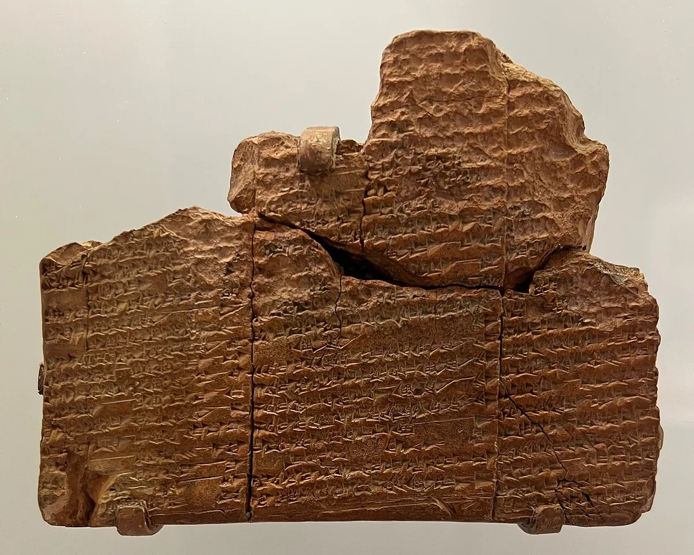

3.16What the Torah changes in the flood story
Bereishis 6–9 departs from Atrahasis and Gilgamesh at each of the following points.
Why the flood comes. Tablet match In Atrahasis, Enlil cannot sleep because humanity is too noisy. In Bereishis, “the earth was filled with chamas,” violence and plunder (6:11, 13).
Who decides, and who rescues. Tablet match In the Mesopotamian versions, Enlil makes the other gods swear to keep the flood secret. Ea gets around his oath by whispering the warning to a reed wall, so that his favorite will overhear it. In Bereishis, the same God who decrees the flood rescues Noach, openly, because Noach is righteous (6:8–9, 13).
Grief. Strong In Gilgamesh, the goddess Belet-ili laments after the flood, appalled that she consented in the divine assembly to the destruction of her own people, and the gods weep with her. In Bereishis, Hashem “regretted that He had made man, and it grieved Him to His heart” (6:6) before anything has happened.
Who causes the waters. Strong In Gilgamesh, the flood is the work of a crowd of gods. Adad thunders from a black cloud, Errakal tears out the posts of the dams, Ninurta makes the dikes overflow and the gods of the underworld raise their torches. In Bereishis, “all the springs of the great deep burst open, and the windows of the heavens were opened” (7:11), so the waters Hashem separated on the second day come together again. The flood undoes creation, and what follows repeats it. A ruach passes over the waters (8:1) as in 1:2, dry land appears again, and the blessing to be fruitful and multiply is renewed (9:1).
Gods in a panic, gods who are hungry. Tablet match In Gilgamesh, the gods flee their own storm to the highest heaven and cower like dogs against the wall, and with humanity destroyed they receive no offerings and go hungry. When Utnapishtim finally sacrifices, they “gathered like flies” around it. Bereishis retains the sacrifice and the pleasing aroma, reiach hanichoach (8:21), but has no hungry deity, and Hashem responds to Noach’s offering with a promise never again to curse the ground.
“And Elokim remembered Noach.” Strong When Enlil discovers the boat after the flood, he is enraged that any living being has escaped, since no one was meant to survive. In Bereishis the turning point of the entire narrative is the converse statement: “Elokim remembered Noach and all the animals with him in the ark” (8:1). Gordon Wenham demonstrated that the whole flood narrative is constructed as a mirror around this verse, which stands at its precise center.
Limits on life, or a blessing of life. Tablet match As Anne Kilmer and Tikva Frymer-Kensky showed in the 1970s, Atrahasis concludes with the gods ensuring that humanity will never again grow too numerous, through barren women, an infant-snatching demon and priestesses barred from childbearing. Hashem blesses Noach and his sons, “Be fruitful and multiply and fill the earth” (9:1), repeats the blessing (9:7) and forbids murder because every human being bears the divine image (9:6).
A god forever, or a farmer. Tablet match At the end of Gilgamesh XI, Enlil touches the foreheads of Utnapishtim and his wife, makes them immortal like the gods and removes them to a distant dwelling. Noach remains a mortal man who plants a vineyard, becomes drunk and dies at 950 (9:29).
The bow. Probable After the flood in Gilgamesh, the mother goddess lifts her necklace of lapis flies and swears by it never to forget those days. In Bereishis, Hashem sets His keshes, the word for a war bow, in the cloud (9:13). In Enuma Elish, after Marduk defeats Tiamat, the gods hang his bow in the sky as a constellation in his honor. In the Torah, Hashem hangs up His bow as a promise that He will not destroy the earth again.
3.17The J and P strands of the flood
The flood is the critics’ principal example of the Torah’s composite origin. They divide the parsha into a “J” strand, which uses the name Hashem, and a “P” strand, which uses Elokim. They point to apparent doublets: two of every animal (6:19) alongside seven pairs of the clean ones (7:2), and forty days of rain (7:12) alongside a hundred and fifty days of rising water (7:24). Each strand, they maintain, was originally a complete narrative.
Gilgamesh XI makes it possible to test that claim. The figure below lines up the Torah’s flood with Gilgamesh XI step by step, using the critics’ own division of the verses. Seventeen elements of the Gilgamesh flood appear in the Torah in nearly the same order, with two small swaps that the figure marks.
Taken separately, however, neither strand tells the story. The P strand has the warning, the building of the ark, its size, its sealing with pitch, its landing on a mountain, the departure from the ark and the blessing. It has no door, no window, no dove, no sacrifice and no pleasing smell. The J strand has the closed door, the window, the dove, the altar and the smell, but it never builds the ark. J’s God tells Noach to “come into the ark” (7:1), with the definite article, although in J no ark has been built. Even the birds are split, with the raven in P and the dove in J.
Each strand lacks what the other supplies, and only together do they tell the Mesopotamian story from beginning to end in its proper order, as Gary Rendsburg of Rutgers University argued in detail in 2007. Another detail points the same way. The word for the ark’s pitch, kofer (6:14), is the Akkadian kupru, the word Gilgamesh uses for the pitch of Utnapishtim’s boat, and Tanach uses it in this sense nowhere else. The word stands in the strand critics call “P” and date to the Persian period, more than a thousand years after the Mesopotamian story took shape. It fits better an author who was answering that story directly and used its own vocabulary.
The critics have responses. They propose that the redactor omitted whatever in each source duplicated the other, and that both authors drew independently on Mesopotamian tradition. Each response may account for an individual gap, but none accounts for the pattern, which would require two authors, each retelling the same foreign flood, each omitting a different half of it, with the two halves interlocking in the correct order when combined. The more economical explanation is that a single author composed a single flood narrative in answer to the Mesopotamian one.
The doublets admit straightforward explanations within that single narrative. Seven pairs of clean animals are required because Noach will offer clean animals on leaving the ark (8:20), so the general instruction (6:19) precedes the specific one (7:2). Forty days of rain and a hundred and fifty days of rising water are successive phases of one flood, as in Gilgamesh, where the storm rages and then the waters stand. And the divine names alternate as Cassuto showed they consistently do, with Elokim appearing where the subject is the universal Judge and Creator and Hashem where it is the personal God who closes the door behind Noach and accepts his offering.
The flood and the documentary hypothesis
The seventeen Gilgamesh flood steps in J, in P and in the Torah as written
Seventeen steps of the flood in Gilgamesh, Tablet XI, beside the verses of Bereishis that match them. Switch between the two strands that critics cut the story into and the text the Torah gives.
Show the table with every verse
| # | Step | Gilgamesh, Tablet XI | Bereishis | Strand |
|---|---|---|---|---|
| 1 | The gods decide to destroy humanity | The great gods resolve to send the flood | 6:7; 6:13 | J, P |
| 2 | The hero is warned and told to build a boat | Ea warns Utnapishtim through a reed wall: tear down your house, build a boat | 6:13–14 | P |
| 3 | The boat’s measurements and decks | Its width equal to its length, six decks dividing it into seven levels | 6:15–16 | P |
| 4 | The boat is sealed with pitch | Bitumen and pitch (kupru) poured into the kiln | 6:14 (kofer) | P |
| 5 | Family and animals go aboard | Family, kin, craftsmen, beasts of the field | 6:18–20; 7:1–3, 7–9, 13–16a | J, P |
| 6 | The door is shut | He enters the boat and closes the door | 7:16b, “and Hashem shut him in” | J |
| 7 | Rain and flood for a set time | Six days and seven nights of storm | 7:12 (40 days); 7:11, 24 (150 days) | J, P |
| 8 | All humanity perishes | All the people have turned to clay | 7:21; 7:22–23 | J, P |
| 9 | The boat grounds on a mountain | Mount Nimush holds the boat fast | 8:4, the mountains of Ararat | P |
| 10 | A window is opened | He opens a vent and daylight falls on his face (in Gilgamesh this comes before the grounding) | 8:6 | J |
| 11 | A raven is sent out | The raven goes, finds the waters receding, and does not return | 8:7 | P |
| 12 | A dove is sent out | The dove goes and comes back, finding no resting place (in Gilgamesh the dove comes before the raven) | 8:8–12 | J |
| 13 | Everyone leaves the boat | He sends everything out to the four winds | 8:15–19 | P |
| 14 | A sacrifice is offered | Offering on the mountain peak, with reed, cedar and myrtle | 8:20 | J |
| 15 | The deity smells the offering | The gods smell the sweet savor and gather like flies | 8:21, reiach hanichoach | J |
| 16 | A promise after the flood | The mother goddess swears by her lapis necklace; Ea rebukes Enlil | 8:21–22; 9:8–17 | J, P |
| 17 | The hero is blessed | Enlil touches their foreheads and blesses them with immortality | 9:1 | P |
The verses are divided as in the standard documentary analysis (for example, R. E. Friedman, Who Wrote the Bible?). The comparison follows Gary A. Rendsburg, “The Biblical Flood Story in the Light of the Gilgameš Flood Account,” in J. Azize and N. Weeks, eds., Gilgameš and the World of Assyria (Peeters, 2007), 115–127. Gilgamesh is paraphrased from Andrew George’s translation.
Wenham’s mirror structure of the flood story
Gordon Wenham showed that the flood story is built as a mirror: its steps lead up to “Elokim remembered Noach” (8:1) and then repeat in reverse. The mirrored pairs cross back and forth between the supposed J and P strands. Switch views to see which pairs the split into J and P divides.
3.189:18–29 · Noach’s vineyard
The drunken father. Tablet match Noach’s drunkenness acquires a new aspect beside the Canaanite texts of Ugarit. The Ugaritic epic of Aqhat enumerates the duties of a dutiful son, among them taking his father by the hand when he is drunk and carrying him home when he is sated with wine. Another Ugaritic tablet describes a divine banquet called a marzeach, the same drinking feast Amos and Yirmiyahu later condemn (Amos 6:7; Yirmiyahu 16:5). At it El, father of the gods, drinks himself into a stupor, collapses in his own filth and must be carried home by two of his sons. In Bereishis the drunken father is a mortal farmer; Shem and Yefes cover him while walking backward, and Cham’s disrespect brings a curse upon Canaan, the people whose god behaved in this way.
Wine and the flood hero. Suggested In Gilgamesh, Utnapishtim tells how he gave the workers who built his boat beer and wine to drink as if it were river water, and they feasted as at the New Year festival. Wine belongs to the flood hero’s story in Babylon too, but in the Torah it comes after the flood and leads to disgrace.
3.1910:1–32 · Seventy nations and a hunter
Seventy. Probable Bereishis 10 enumerates seventy nations descended from Noach’s three sons. At Ugarit the gods were “the seventy sons of Athirat,” and Devarim 32:8 says that Hashem fixed the boundaries of the peoples “according to the number of the children of Israel,” who numbered seventy when they descended to Egypt. A Dead Sea Scroll and the Septuagint read instead “according to the number of the sons of God.” Chazal themselves spoke of seventy angels appointed over the seventy nations (Targum Yonasan on Devarim 32:8; Pirkei d’Rabbi Eliezer 24). If this background holds, Bereishis 10 replaces a divine family of seventy gods with a single human family of seventy nations, none of them of divine descent. Because the connection rests chiefly on a shared number, it remains among the least certain comparisons in these chapters.
Nimrod. Probable Nimrod is “a mighty hunter before Hashem,” whose kingdom begins in Bavel, Erech and Akkad and reaches to Ashur, Nineveh and Kalach (10:8–12). Two backgrounds have been proposed. One is Ninurta, the Mesopotamian god of war and the hunt, whose great temple stood at Kalach. The other, suggested by E. A. Speiser, is Tukulti-Ninurta I, the thirteenth-century Assyrian king who was the first to rule both Assyria and Babylon. On either view, a figure whose name called on a god has become a human hunter who stands “before Hashem,” and his fame has become a proverb: “therefore it is said, like Nimrod.” If Speiser is right, the passage reflects the political map of the thirteenth century BCE.
3.2011:1–9 · The tower in the plain of Shinar
Tablet match Bereishis 11 names Babylon. Settlers on the plain of Shinar say, “Come, let us make bricks and burn them thoroughly,” using bitumen for mortar, and the Torah stops to explain these materials to an audience used to building in stone (11:3). They plan a city and a tower “with its top in the heavens.” In the sixth tablet of Enuma Elish, the gods themselves mold bricks for a whole year to build Esagila, Marduk’s temple in Babylon, whose name means “house whose top is raised.” Beside it stood the ziggurat Etemenanki, “house of the foundation of heaven and earth.” The Babylonians explained their city’s name as Bab-ili, “gate of the god.”
In Babylon’s account the gods build the city; in the Torah human beings build it to make a name for themselves and to avoid dispersal. The tower that reaches heaven is so insignificant that Hashem must “come down to see” it (11:5), the “gate of the god” becomes balal, confusion, and the builders are scattered after all. Later in Bereishis, the title “gate of heaven” is bestowed on a bare stone in an open field at Beis El, where Yaakov sleeps and sees a ladder with angels upon it (28:17).
Takayoshi Oshima has argued that the narrative suits Judean exiles contemplating Babylon’s ziggurat in the sixth century BCE. Ziggurats, however, had dominated the landscape of southern Iraq for some fifteen hundred years before the exile, and Avraham’s family came from that region, so the image does not require an exilic setting. A Sumerian poem, Enmerkar and the Lord of Aratta, contains a passage about all humanity speaking one language. Samuel Noah Kramer read it as describing a past confusion of tongues, whereas later Sumerologists read it as a hope for a future era of linguistic unity. That disagreement leaves the parallel too uncertain to support any weight.


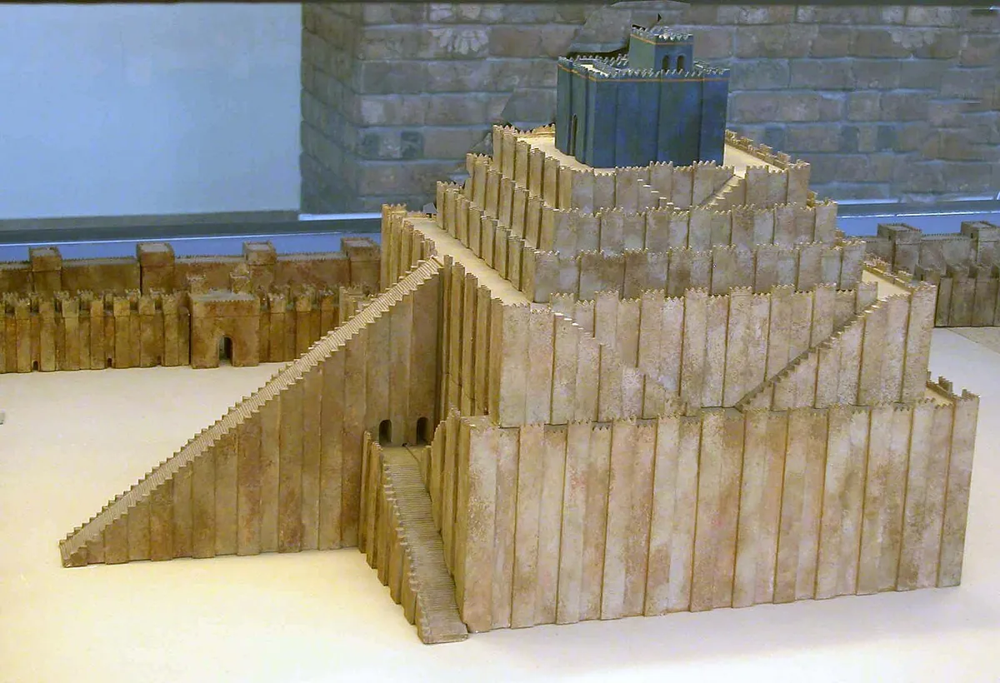
,_Pergamon_Museum,_Berlin_(2006).jpg){kind=link}
3.2111:10–32 · The ten toledos and the road to Avraham
Sefer Bereishis can appear to be two books, eleven chapters about the whole world followed by thirty-nine about a single family, but one formula unites them. Ten times the Torah opens a new section with eileh toledos, “these are the generations of,” five times in Bereishis 1–11 and five times in the narratives of the Avos. Together these headings work like a funnel that narrows from the entire universe to one household.
The first five follow humanity across the earth: the generations of heaven and earth (2:4), of Adam (5:1), of Noach (6:9), of the sons of Noach dispersing into seventy nations (10:1) and of Shem (11:10). The second five narrow that line to Israel. Terach (11:27) stands at the juncture between the halves, followed by Yishmael (25:12) before Yitzchak (25:19) and Eisav (36:1) before Yaakov (37:2), and in each case the collateral branch is recorded briefly before the main line is narrated in full.
The funnel explains why the Torah opens with eleven chapters of countermyth before introducing Avraham, whose calling is the answer to Bavel. At Bavel the builders seek to “make a name for ourselves” (11:4) and are scattered. In the very next chapter Hashem tells Avraham, “I will make your name great” (12:2), and promises that “all the families of the earth will be blessed through you” (12:3).
3.22How Tanach answers itself
The countermyth method also operates within Tanach, where later passages reshape earlier ones.
Three ways to reach heaven. At Bavel, people build upward toward heaven with bricks to make a name, and Hashem disperses them. At Beis El, heaven descends to a man sleeping on a stone, and the place is called “the gate of heaven” (28:12–17). At the Mishkan, the people bring offerings “from every person whose heart moves him,” and Hashem says, “Let them make Me a sanctuary, and I will dwell among them” (Shemos 25:2, 8).
Two arks. The word teivah occurs in Tanach only for Noach’s ark and for the basket that carried the infant Moshe on the Nile (Shemos 2:3). Both are sealed with pitch, both float on deadly waters, and both carry the future to safety, of the world in one case and of Israel in the other. The shared word links the rescue of humanity with the rescue of the man through whom the Torah would be given.
Kayin and Nimrod. Kayin, sentenced to wander, leaves “the presence of Hashem” and builds the first city (4:16–17), and his line joins craft with violence until the flood. Nimrod, Cham’s grandson, also builds cities, but he is a mighty hunter “before Hashem” (10:9). On the plain sense of the text, before the Midrash recasts Nimrod as a rebel, the contrast is that Kayin built after leaving Hashem’s presence, while Nimrod builds within it.
Creation told twice, Shabbos grounded twice. Bereishis 1 and 2 narrate creation from two perspectives, as shown above. Shemos 20:11 grounds Shabbos in creation, while Devarim 5:15 grounds the same mitzvah in the Exodus from slavery. Divrei HaYamim retells the history of Shmuel and Melachim for a community returning from exile and shifts its emphasis, as a comparison of David’s census in Shmuel II 24:1 with Divrei HaYamim I 21:1 shows.
The slope of the lifespans. The ages in the Torah do not drop overnight from nine centuries to seventy years. Before the flood, Adam lives 930 years, Mesushelach 969 and Noach 950. After it, Shem lives 600 and Ever 464. The Avos live 175, 180 and 147 years, Moshe reaches 120 and Yehoshua 110, and by David’s time a full life is seventy. The ancient world expected the heroes of the distant past to have lived far longer than ordinary people, so a sudden drop would have made Avraham or Moshe seem cut short. The gradual decline carries the reader from the age of beginnings into ordinary history.
Bereishis 5, Bereishis 11 and the limit of 120
Lifespans from Adam to Yehoshua
Every age the Torah gives from Adam to Yehoshua, with David for comparison. Switch on the Sumerian King List to see the scale the Torah was answering: its kings before the flood reign for tens of thousands of years.
Ages from the Masoretic text. King List reigns from the Weld-Blundell Prism (about 1800 BCE); the King List gives reigns, not lifespans. The scale changes to logarithmic when the King List is shown so that both fit.

Part IV
The myths and the date of the Torah
The stories the Torah answers, and the manner in which it answers them, belong to the second millennium BCE. That does not prove the traditional date, but it gives a believer sound grounds to rely on it.
Amarna letter from the king of Hazor, British Museum. Photo: Osama Shukir Muhammed Amin FRCP(Glasg), CC BY-SA 4.0 · Wikimedia Commons
_to_the_Egyptian_Pharaoh_Amenhotep_III_or_his_son_Akhenaten._14th_century_BCE._From_Tell_el-Amarna,_Egypt._The_British_Museum.jpg){kind=link}
4.1The critics’ date
The critics’ date for Bereishis 1–11 rests on a simple syllogism. These chapters answer Babylonian myths; Judeans lived in Babylon after Nevuchadnezzar destroyed Jerusalem in 586 BCE; therefore the chapters were composed in Babylon during the sixth century BCE, or shortly afterward, by exiles who encountered those myths there.
Each premise can be examined. Were Babylonian myths known in the Land of Israel and in Egypt long before the exile? Do the myths the Torah answers belong to the sixth century or to an earlier world? And does the Torah answer them as sixth-century writers answered Babylon, or in an older manner?
4.2How to date a comparison
Ancient texts are easily misdated, because every comparison involves up to four different dates. There is the date of the surviving tablet or inscription, the date the story was first composed, the period when the story was in circulation, and the date of the biblical book. Mixing them up produces many bad arguments. The best-known flood tablet, Gilgamesh XI in the British Museum, was copied in Nineveh in the seventh century BCE. Its flood episode, however, was adapted from Atrahasis, whose main copy dates to about 1635 BCE, so anyone who dates the flood story by the Nineveh tablet is off by a thousand years.
Some connections also count for more than others. Exact shared wording demonstrates direct contact between traditions, as when Yeshayahu’s two epithets for Livyasan match the Ugaritic epithets for the dragon Litan. A shared sequence of events, as in the flood, indicates a common narrative. A broad shared idea, such as building temples or offering sacrifices, proves little, since such practices were universal.
4.3Babylonian stories in Canaan and Egypt before Sinai


Babylonian literature did not reach the Land of Israel with Nevuchadnezzar’s army. It had arrived more than seven centuries earlier, on clay tablets that excavators have since recovered.
In the fourteenth century BCE the rulers of Canaanite cities, among them Jerusalem, Shechem, Gezer and Megiddo, wrote to Pharaoh in Babylonian, in cuneiform on clay tablets. Nearly four hundred of these letters were found at Amarna in Egypt. To learn the script, scribes in Egypt and Canaan copied Babylonian literary texts as exercises. The Amarna archive includes copies of Adapa and of Nergal and Ereshkigal, some marked in red ink by Egyptian students.
Canaan itself has produced further evidence. In the 1950s a fourteenth-century fragment of the Epic of Gilgamesh surfaced at Megiddo in the Jezreel Valley, and analysis of the clay showed that it was local, so the tablet was written by a scribe working in Canaan. Hazor in the Galilee has yielded Babylonian clay liver models used for divination, a multiplication table and fragments of a law collection in the style of Hammurabi. At Ugarit on the Syrian coast, scribes copied Atrahasis and an Akkadian flood narrative before the city’s destruction around 1185 BCE. The Torah itself traces Avraham’s family to Ur and Charan in Mesopotamia, so that Babylonian stories formed part of Israel’s ancestral heritage.
By the traditional count, Matan Torah took place in the year 2448 from creation, which is 1313 BCE. In that same century, the Mesopotamian stories that Bereishis answers were being read and copied in Canaan and Egypt.
Babylonian literature in Canaan, Syria and Egypt
Late Bronze Age finds of Mesopotamian literature
Each site is a place where excavators found Mesopotamian literature or learning on clay from the Late Bronze Age, the centuries around the traditional date of Sinai (1313 BCE). Select a site.
The Megiddo Gilgamesh fragment: A. Goetze and S. Levy, ‘Atiqot 2 (1959); clay analysis by Y. Goren and colleagues. Amarna school texts: S. Izre’el, Adapa and the South Wind (2001). Hazor: W. Horowitz, T. Oshima and S. Sanders, Cuneiform in Canaan (2nd ed., 2018).
4.4The alphabet before Sinai
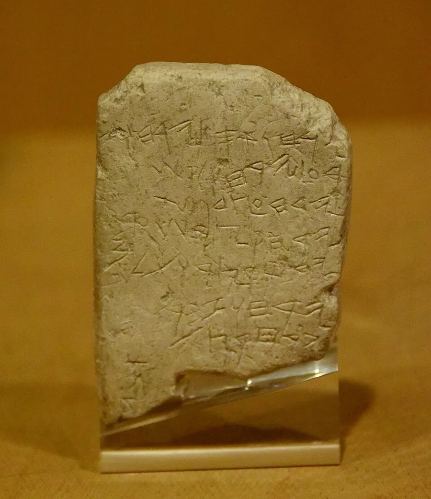

Nineteenth-century scholars sometimes argued that Israel in Moshe’s day was illiterate and that the Torah must therefore be a much later composition. Archaeology has since overturned that premise.
The alphabet was invented by Semitic speakers in Egypt and Sinai. Strong The oldest known alphabetic writing consists of two short inscriptions carved on a cliff at Wadi el-Hol in Egypt around 1850 BCE. In 1905 Flinders Petrie discovered further examples of the same script at Serabit el-Khadim, the turquoise mines of the Sinai, written by Semitic laborers between about 1800 and 1500 BCE. The letters originated as pictographs, each named for its initial sound, so that the ox head represented aleph, the Semitic word for ox, and the house represented beis, the word for house. A writer now needed about two dozen signs instead of several hundred.
By the Late Bronze Age, Canaan wrote in two systems. Scribes in its cities wrote Babylonian cuneiform to Pharaoh, as the Amarna letters show, while the new alphabet spread across the region. At Ugarit, thirteenth-century scribes practiced an alphabet of their own on clay. Their exercise tablets list the letters in nearly the order a Jewish child learns today, aleph, beis, gimmel, with a few extra letters mixed in. An alphabet scratched on a piece of pottery at Izbet Sartah in the twelfth or eleventh century BCE, and the Gezer Calendar of the tenth century, carry the same script forward into early Hebrew.
The Torah presents writing as part of Moshe’s world: he records the war with Amalek in a book (Shemos 17:14) and writes down “all the words of Hashem” before the covenant at Sinai (24:4). None of this dates any particular book, but it disposes of the claim that the Torah could not have been written in the age the tradition assigns it.
Writing in Moshe’s world
Early alphabetic writing, 1900 to 600 BCE
The main finds of early alphabetic writing, with the Amarna letters for comparison. The green line marks Sinai by the traditional count, and the pink line the exile, when critics say the Torah took its final form. Select a point.
Dates follow the excavators’ and standard epigraphic studies: J. C. Darnell et al., “Two Early Alphabetic Inscriptions from the Wadi el-Ḥôl” (2005); Christopher Rollston, Writing and Literacy in the World of Ancient Israel (2010); Seth Sanders, The Invention of Hebrew (2009). The dates of the Sinai inscriptions are debated within the range shown.
4.5Kitchen’s test: the four-part pattern
Literary forms rise and fall like fashions, so a text can be dated by its structure as well as by its vocabulary. The Egyptologist Kenneth Kitchen applied this test to Bereishis 1–11 in On the Reliability of the Old Testament (2003, pp. 422–427). He observed that these chapters follow a four-part pattern: creation, a genealogy before a flood, the flood itself, and a genealogy after the flood that leads into recorded history.
Mesopotamian scribes composed works in that pattern during the second millennium BCE and not thereafter. The Sumerian flood story, on a Nippur tablet copied around 1600 BCE, proceeds from the creation of humanity and the founding of the first cities to a flood that Ziusudra survives. Atrahasis, written down by about 1635 BCE, connects the creation of humanity, the growth of population, the flood and the new order that follows. The Sumerian King List places long-lived kings before the flood and shorter-lived dynasties after it.
In the first millennium BCE, Mesopotamian writers dropped the pattern and split its parts into separate kinds of writing. Enuma Elish, the creation epic recited in Babylon’s temples, has no flood and no genealogies. The standard edition of Gilgamesh places the flood inside a hero’s search for eternal life, without creation or lists. First-millennium chroniclers wrote bare king lists. Even within Tanach, the late book of Divrei HaYamim reduces the beginnings of humanity to a bare list of names (Divrei HaYamim I 1) and leaves out creation and the flood entirely.
Two facts might seem to weaken the test, and neither does. Older works did not disappear when the fashion changed, so scribes in Nineveh were still copying Atrahasis and the King List in the seventh century BCE. And around 280 BCE the Babylonian priest Berossus wrote a history in Greek that again ran from creation through ten kings before the flood to the kings after it. Copying an old tablet, however, is different from composing in a living form, and Berossus wrote three centuries after the exile. A Judean in sixth-century Babylon would have found Enuma Elish, the late edition of Gilgamesh and bare chronicles, but no one still composing in the four-part pattern.
Kitchen’s four-part pattern in eight texts
Mesopotamian texts of the second millennium join creation, a list of early generations, the flood and the generations after it into one sequence. Later writers split those pieces into separate works. Bereishis 1–11 has the older shape.
4.6The dates of the myths
Kitchen’s test concerns the overall structure, but the same test can be applied to each individual story the Torah answers. The figure below lists the principal ancient texts behind Bereishis 1–11, the date of each composition and its oldest surviving copy. Nearly all were composed before 1200 BCE, and many are attested in Late Bronze Age copies found in Canaan, Syria or Egypt. Several come from cities destroyed around 1185 BCE and never rebuilt, among them the Canaanite poems of Ugarit and the Emar text with its limit of 120 years.
There are a few exceptions. Enuma Elish was probably composed around 1100 BCE, about two centuries after the traditional date of Sinai, although some scholars date it earlier. The comparisons that depend on it, such as the gods building Babylon, are variations on older themes. The fight between a storm god and the Sea already appears in a Mari letter of about 1770 BCE and in the Baal poems of Ugarit. The text of the Shabaka Stone may date as late as the eighth century BCE. It is cited here only to show that creation by speech was an Egyptian idea, and that idea already appears in far older Egyptian sources. The tradition of seven sages who taught humanity the arts appears mainly in later texts.
The texts Bereishis answers
Composition dates of the texts behind Bereishis 1–11
Each bar is the span in which an ancient text was composed. The diamond marks the oldest copy that survives. Three lines mark Sinai by the traditional count, the collapse of the Late Bronze world around 1200 BCE, and the exile, when critics say the Torah was written.
Dates follow the standard editions listed under Sources (George, Lambert and Millard, Lambert, Cohen, Lichtheim, Parker, Hoffner). “Composed” means the date of the composition as best it can be fixed, which is often earlier than the oldest surviving copy. Where scholars disagree, the bar shows the whole range.
4.7How the prophets of the exile argue with Babylon
Tanach itself supplies a control case. The later chapters of Yeshayahu and the book of Yirmiyahu address the Babylonian exile directly, and they show what a Judean polemic against Babylon looked like in the sixth century. That polemic names the gods: “Bel bows down, Nevo stoops,” as the idols are loaded onto beasts of burden (Yeshayahu 46:1), and “Bel is put to shame, Merodach is shattered” (Yirmiyahu 50:2). It mocks the making of idols, describing a man who fells a tree, cooks his dinner over half of it and bows down to the other half (Yeshayahu 44:9–20). As Yechezkel Kaufmann observed, the later prophets argue with idols as wood and stone, and no longer with the myths.
Bereishis 1–11 argues in another way entirely. It never names a Babylonian deity; Marduk, Bel, Enlil and Ea are absent from the Torah, and Nevo appears only as the name of a mountain in Moav. It does not ridicule statues. Instead it retells the myths from the inside and changes them, a method that suits an audience for whom those stories were still alive. In the exile, by contrast, Yeshayahu 44–46 answered Babylon by naming its gods and mocking its idols.
4.8The limit of 120 years
Bereishis 6:3 sets the span of human life at 120 years. The only other ancient text known to do so is the version of Enlil and Namzitarra copied at Emar on the middle Euphrates. Emar flourished from about 1350 to 1180 BCE and was destroyed with the rest of the Late Bronze world. It lies less than a hundred miles from Charan, where Avraham’s family settled. The Torah’s figure thus matches a teaching attested in the Late Bronze Age in the very region from which the Avos came.
The number also runs through the Torah’s own story. The lifespans fall toward it, and Moshe dies at 120 (Devarim 34:7). The man who brings the Torah reaches the limit announced in Bereishis 6.
4.9Ararat on the map of the thirteenth century
Bereishis 8:4 sets the ark down on “the mountains of Ararat,” a mountainous region rather than a state. Ararat is the Hebrew form of Urartu, which in the ninth century BCE became a powerful kingdom centered on Lake Van. Later books of Tanach reflect that kingdom when they speak of “the land of Ararat” (Melachim II 19:37) and “the kingdoms of Ararat” (Yirmiyahu 51:27). Four centuries earlier, the thirteenth-century Assyrian king Shalmaneser I recorded a campaign against Uruatri, then a loose confederation of highland districts without a single ruler. The Torah’s “mountains of Ararat,” a highland without a kingdom, corresponds better to the map of the thirteenth century than to that of the sixth.
4.10Other evidence for the second millennium
Independent details elsewhere in the Torah point to the same age, and Part V treats several of them at length.
The covenant form. The covenant at Sinai and Sefer Devarim follow the six-part form of Hittite treaties of the fourteenth and thirteenth centuries BCE. That form has a preamble naming the great king, a history of his past favors, demands of loyalty, rules for keeping the text and reading it in public, divine witnesses, and blessings and curses. Assyrian treaties of the first millennium leave out the history and the blessings.
The Mishkan. The Mishkan follows the plan of the war camp of Ramesses II at the battle of Kadesh in 1274 BCE, as carved on Egyptian temple walls. Both have a courtyard twice as long as it is wide, facing east, with a two-room tent inside and winged figures guarding the inner room.
Slave prices. Kitchen showed that the price of a slave rose steadily over two thousand years. It was about 10 to 15 shekels around 2000 BCE, 20 in the eighteenth century and 30 in the Late Bronze Age, then 50 or 60 under Assyria and 90 to 120 under Persia. Yosef is sold for 20 shekels (Bereishis 37:28), and the Torah sets 30 shekels as the value of a slave gored by an ox (Shemos 21:32). Both figures match the second millennium.
Egyptian words and names. The stories of Yosef and the Exodus are full of Egyptian words and names. One verse about the infant Moshe has three of them: teivah for the basket, suf for the reeds and ye’or for the Nile (Shemos 2:3). Several names in the priestly family of Levi are Egyptian, including Moshe, Pinchas (“the Nubian”) and Chofni. The city of Raamses (Shemos 1:11) was Pi-Ramesses, built by Ramesses II in the thirteenth century BCE. It was abandoned by about 1130 BCE when its branch of the Nile silted up, and later prophets speak instead of Zoan, the city that replaced it.
The Hebrew itself. The Hebrew of the Torah, including the material critics call “Priestly,” lacks the Persian loanwords and late grammar of books securely dated to the Persian period, such as Esther, Ezra, Nechemiah and Divrei HaYamim. The linguist Avi Hurvitz showed that the Priestly material is written in an earlier stage of Hebrew than the book of Yechezkel, which was composed during the exile. Several poems in the Torah preserve a still older stage: Shiras HaYam, Haazinu, Bilaam’s prophecies and Moshe’s blessing. Many scholars, critical and traditional alike, date these poems to the twelfth or eleventh century BCE or earlier.
The silver amulets from Ketef Hinnom in Jerusalem, made around 600 BCE before the exile, quote Birkas Kohanim (Bamidbar 6:24–26). Critics assign this passage to the Priestly source and date it to the exile or later. A critic may answer that the blessing existed before the Priestly writer took it in. Even so, the amulets put a text of the “Priestly” Torah in a Jerusalem tomb before the exile began.
A Torah that never names Jerusalem. Sefer Devarim declares about twenty times that offerings must be brought to “the place that Hashem will choose” (Devarim 12:5 and onward). Critics hold that Devarim was written in the seventh century BCE to promote King Yoshiyahu’s centralization of worship in Jerusalem, yet the Torah never names Jerusalem at all. Its only allusions are Shalem, the city of Malki-Tzedek (Bereishis 14:18), and the land of Moriah (22:2). The Rambam already asked why the place goes unnamed and answered that naming it before Israel possessed the land would have provoked the nations to fight over it and the tribes to quarrel (Moreh Nevuchim III:45). A book written to advance Jerusalem’s temple, or by Jerusalem’s priests in exile, could be expected to name the city it served.
Slave prices in silver shekels, 2000 to 400 BCE
Kenneth Kitchen’s survey of slave prices in silver shekels. Yosef’s 20 shekels and the 30 shekels of Shemos 21 fall on the prices of the second millennium.
4.11Later hands in the Torah: what the tradition says
The Rambam’s eighth principle holds that the whole Torah as it exists today is the Torah given to Moshe, and that is the common belief. From the Gemara onward, however, a line of Torah scholars noticed verses that Moshe could not have written in their present form, either because they describe events after his death or because they look back on his time from a later age. These scholars attributed such verses to Yehoshua, to later prophets or to the Men of the Great Assembly. Yoshi Fargeon’s anthology at the start of The Believer and the Modern Study of the Bible (Academic Studies Press, 2019, free online) collects the sources in translation, and the most important are summarized here.
The last eight verses. The Torah ends with Moshe’s death and burial and says that no one knows his grave “to this day” (Devarim 34:6). In Bava Basra 15a, Rabbi Yehuda holds that Yehoshua wrote these eight verses. Rabbi Shimon answers that a Torah scroll cannot lack even one letter, so Moshe wrote them too, at Hashem’s dictation and in tears. Ibn Ezra takes the first view and begins Yehoshua’s writing a few verses earlier, at “Moshe went up” (34:1), since Moshe never came down from the mountain to record it.
Ibn Ezra’s “secret of the twelve.” Commenting on Devarim 1:2, Ibn Ezra writes that a reader who understands “the secret of the twelve” will recognize the truth. The twelve are the last twelve verses of the Torah, and he lists four more passages beside them: “Moshe wrote” (Devarim 31), “and the Canaanite was then in the land” (Bereishis 12:6), “on the mountain of Hashem it will be seen” (22:14) and Og’s iron bed, which “is still in Rabbah” (Devarim 3:11). On Bereishis 12:6 he says only that the verse holds a secret and that the wise will keep silent.
Rav Yosef Bonfils. In the fourteenth century Rav Yosef Bonfils, a commentator on Ibn Ezra, spelled the secret out. “The Canaanite was then in the land” could have been written only after the Canaanites were gone. Og’s bed could be seen in Rabbah only after David conquered the city. The opening verses of Devarim speak about Moshe in a narrator’s voice. Bonfils concluded that a later prophet wrote these verses. Since the Gemara already allows that Yehoshua wrote the end of the Torah, he asked, “of what significance is it to me if Moses or another prophet wrote it,” when the words of every prophet are true. He also held that the ban on adding to the Torah (Devarim 4:2) applies to its commandments, so a prophet who added a word of explanation did not break it.
The kings of Edom. Bereishis 36:31 lists “the kings who reigned in the land of Edom before any king reigned over the children of Israel,” a phrase that looks back from the time of Israel’s kings. One version of the Rashbam’s commentary says that this section was written in the era of the Shoftim.
Rabbi Yehuda HeChasid. The commentary on the Torah that his son, Rabbi Moshe Zaltman, recorded in his name goes furthest. It attributes Bereishis 48:20 to Yehoshua or the Men of the Great Assembly, and it says that a note about Etzion Gever (Devarim 2:8) was written into the Torah in their time. In the twentieth century Rav Moshe Feinstein ruled that such statements could not have come from Rabbi Yehuda HeChasid and that the book should not be used (Igros Moshe, Yoreh De’ah III:114–115). Under that pressure, a later edition removed the passages.
Changes in wording. Chazal also recorded changes of another kind. The Midrash Tanchuma and the Masorah list the tikkunei soferim, places where the wording was adjusted out of respect. Rashi, for example, says that Bereishis 18:22 originally read that Hashem stood before Avraham, and that the text was changed to read that Avraham stood before Hashem. The Gemara (Shabbos 115b–116a) explains the inverted nuns around Bamidbar 10:35–36 in two ways. Rabban Shimon ben Gamliel says the passage is out of place and will one day be moved, and Rebbi says it counts as a separate book.
| Passage | Who wrote it, on this view | Source |
|---|---|---|
| Devarim 34:5–12, the last eight verses | Yehoshua | Rabbi Yehuda in Bava Basra 15a |
| Devarim 34:1–12, the last twelve verses | Yehoshua | Ibn Ezra on Devarim 1:2 and 34:1 |
| Bereishis 12:6, 22:14; Devarim 3:11 | A later prophet | Ibn Ezra (by hint); Bonfils |
| Devarim 1:1–5 | A later prophet | Bonfils |
| Bereishis 36:31–39, the kings of Edom | Written in the era of the Shoftim | Rashbam (one version) |
| Bereishis 48:20; Devarim 2:8 | Yehoshua or the Men of the Great Assembly | Rabbi Yehuda HeChasid (rejected by Rav Moshe Feinstein) |
The opposing view and a third position. The mainstream view admits no addition beyond the last eight verses, and Rabbi Shimon in the Gemara does not admit even those. Rav Moshe Feinstein’s ruling shows how strongly the later-hands view was opposed in the twentieth century. Rav Kook took a third position. He wrote that even if some sections were shown to be late, this would have no bearing on the observance of the Torah, because that observance rests on the nation’s acceptance of the Torah in its present form.
What this means for the date. A verse added or updated by a later prophet does not make the rest of the Torah late, as Bonfils already argued. The names that look later in Bereishis, among them Ur of the Kasdim, the city of Dan, the kings of Edom and the Pelishtim of Gerar, can be read in the same way, as notes for later readers inside an older text. None of the passages these commentators discuss comes from the myths of Bereishis 1–11, on which the dating argument of this Part rests.
4.12Objections to the early date
A later scribe could have read old tablets. That is true of any single story, as the copies from Nineveh show. It does not explain the whole body of evidence, which includes the four-part pattern, the Canaanite and Hittite material, the Emar figure of 120 years, the Late Bronze map and the habit of arguing from inside the myths. Taken together, these fit the second millennium far better than the sixth century.
A few names look later. “Ur of the Kasdim” uses the name of the Chaldeans, first attested in the ninth century BCE, and the city of Dan (Bereishis 14:14) received that name only in the period of the Shoftim (Shoftim 18:29). As the previous section shows, a line of traditional commentators from the Gemara onward allowed that later prophets added or updated a few verses. A place given the name later readers knew does not change the age of the story around it.
Camels. Camels appear in the narratives of Avraham and Yaakov, while domesticated camels show up in the copper mines of the Aravah only in the tenth century BCE (Lidar Sapir-Hen and Erez Ben-Yosef, 2013). The Torah itself presents camels as rare and costly possessions. They are among Pharaoh’s gifts to Avram (Bereishis 12:16), Eliezer lists them among the riches Hashem gave Avraham (24:35), they mark the wealth Yaakov gained (30:43), and thirty nursing camels form part of Yaakov’s gift to Esav (32:16). An animal owned by a few great households and by desert traders like the Yishmaelites of 37:25 would leave few bones in a mining camp. The finds in the Aravah date the spread of camels into ordinary work there, and they cannot show that no wealthy household owned one earlier.
Philistines. Bereishis 21 and 26 call Avimelech of Gerar a king of the Pelishtim, but the Philistines known from archaeology settled on the coast around 1175 BCE. This objection is harder to answer than the camels, and attempts to find an earlier Philistine people rest on thin evidence. The simplest explanation is the one the tradition already allows, as the previous section shows: a later scribe used the name that readers of his day gave to the people of that coast. Avimelech’s Semitic name (“my father is king”) and the fact that Gerar was never one of the five Philistine cities (Yehoshua 13:3) fit that reading.
Curses like Esarhaddon’s. Moshe Weinfeld showed that some curses in Devarim 28, such as a sky of copper over an earth of iron (28:23), closely resemble curses in the treaty the Assyrian king Esarhaddon imposed in 672 BCE. Curses closed legal and treaty texts long before Assyria, however, from the end of Hammurabi’s laws around 1750 BCE to the Hittite treaties of the Late Bronze Age. The formula also existed in more than one form: Vayikra 26:19 reverses the metals, with a sky of iron and an earth of copper. Shared curse language therefore says little about date. The structure of Devarim, with its history of past favors and its blessings, follows the Late Bronze form, and the Assyrian treaties have neither.
The critics’ case for a late date depends on the idea that only exiles in Babylon could have known the myths Bereishis answers, and that idea is false. The myths, the literary form, the figure of 120 years and the geography all fit the age the tradition gives the Torah. An Orthodox Jew who holds the traditional date denies no fact in doing so.

Part V
From Avraham to Sinai: history in the language of its age
Where countermyth gives way to history, and why that history still speaks in mythic language: the Avos, Egypt, the Yam Suf, the covenant, the Mishkan and the rituals.
The Merneptah Stele, Egyptian Museum, Cairo. Photo: Darer101, CC BY-SA 4.0 · Wikimedia Commons
.jpg){kind=link}
5.1Where countermyth gives way to history
At Bereishis 12 the Torah changes genre, and three considerations mark the transition. The first is internal: lifespans decline toward normal human limits, towns occupy the real map of Canaan, and miracles are announced as miracles. The second is that ancient writers observed the same boundary, since Mesopotamian and Greek authors narrated the remote beginning in mythic form and recent history in a realistic mode. The third is that no rival account of the Exodus or Sinai exists. No Babylonian or Egyptian text tells of slaves liberated by a God who then addresses the entire nation from a mountain. Moshe himself makes the point: “Has any people ever heard the voice of God speaking out of the fire, as you have heard, and lived?” (Devarim 4:33). From Avraham onward, the ancient archives illuminate customs, treaties, laws and rituals, but they supply none of the events themselves.
That does not mean the history is told in plain modern prose. The Civil War example in Part II showed how real events are narrated in language that conveys their significance. The Torah likewise tells the Exodus as history in the mythic idiom of its age, so that every listener would grasp what the events meant. The gods of Egypt had been judged, and the God of Israel had accomplished what the storm gods of the region were said to do.
5.2The Avos and the customs of their age
When Avraham leaves Ur and Charan, the story enters a world whose customs are known from clay tablets, and the Torah’s details fit that world.
The covenant between the pieces. Strong In Bereishis 15, Hashem makes a covenant with Avraham by passing between the halves of slaughtered animals. Letters from Mari on the Euphrates, written around 1770 BCE, call making a treaty “killing a donkey foal.” Yirmiyahu 34:18 describes Judean nobles walking between the halves of a calf, calling the same fate down on themselves if they broke their word. In the human versions, the one who swears is the one who walks between the pieces. In Bereishis 15, however, Avraham is asleep, and only the smoking furnace and the flaming torch pass through. Hashem binds Himself and asks nothing in return.
Family law. Probable When Sarah gives Hagar to Avraham and then quarrels with her, the narrative follows the case set out in Hammurabi’s laws §§144–146, under which a wife who gives her husband a servant retains authority over her. A tablet from Nuzi records a man selling his share of an inheritance to his brother for three sheep, showing that a birthright could change hands for a modest price, as in Bereishis 25. And when Yaakov tells Lavan that he made good every animal torn by beasts from his own pocket (31:39), he claims more than the law required, for J. J. Finkelstein showed from Hammurabi §266 and Old Babylonian herding contracts that a shepherd bore no liability for a lion’s kill. These customs cannot be fixed to a single century, but they belong to the second millennium.
Stories the Avos answer. Several episodes in the lives of the Avos invert familiar stories of their region. Yaakov’s sulam recalls the simmiltu, the stairway by which divine messengers travel in the Babylonian poem Nergal and Ereshkigal, yet in Bereishis it stands in an open field with no temple tower beneath it. The Akeidah unfolds in a world in which the king of Moav sacrificed his son on the city wall (Melachim II 3:27) and the Phoenicians offered children at their shrines, so that a contemporary listener would have expected the knife to fall. Instead it is stayed, and a ram takes the boy’s place. The visit of three guests who promise Avraham a son resembles the visit of a god who promises Danel a son in the Ugaritic tale of Aqhat. The story of Potiphar’s wife has a close parallel in the Egyptian Tale of Two Brothers, copied around 1200 BCE. Avraham pleads for Sedom that the Judge of all the earth will not slay the righteous with the wicked, whereas in the later Babylonian Poem of Erra the plague god boasts of slaying both alike.
Part IV showed that the slave prices in Bereishis and Shemos likewise match the second-millennium rates.
5.3Mythic language in the Exodus
The sea that was split. Strong The oldest myth of the region was the storm god’s battle with the Sea, and the prophets and Tehillim describe the splitting of the Yam Suf in the same language. “Was it not You who hacked Rahav apart, who pierced the dragon? Was it not You who dried up the sea, the waters of the great deep?” (Yeshayahu 51:9–10). “You split the sea with Your strength; You smashed the heads of the dragons on the waters” (Tehillim 74:13). “The waters saw You, God, the waters saw You and trembled; the depths shook … You led Your people like a flock by the hand of Moshe and Aharon” (Tehillim 77:17, 21). At Ugarit, Baal’s enemy has two matching titles, Prince Sea and Judge River. Tehillim 114 sets the same pair side by side for the Exodus and the entry into the land: “The sea saw and fled; the Jordan turned back” (114:3). The myth put a god’s victory over Sea and River at the beginning of time. Tanach puts Hashem’s victory in history, at the Yam Suf and the Jordan, for a nation of slaves.
Pharaoh’s heavy heart. Strong In the Egyptian judgment of the dead, as the Book of the Dead depicts it, the heart of the deceased is weighed against the feather of Maat, the goddess of truth and cosmic order. A heart weighed down by wrongdoing fails the test and is devoured. Shemos repeatedly says that Pharaoh’s heart “was heavy” (vayichbad, 8:11, 8:28, 9:7, 9:34), so that in the terms of his own religion, the king who claimed to uphold Maat was failing the judgment of the gods.
Staffs and serpents. Probable The cobra on Pharaoh’s crown, the uraeus, was the emblem of his divine power. Aharon’s staff becomes a serpent and swallows the serpents of Pharaoh’s magicians in Pharaoh’s own palace (Shemos 7:10–12).
Judgment on the gods of Egypt. Strong The Torah states the purpose of the makkos outright: “On all the gods of Egypt I will execute judgments; I am Hashem” (Shemos 12:12; Bamidbar 33:4). The Nile, worshiped as the source of Egypt’s life, turns to blood. The sun, Egypt’s highest god, goes dark for three days. The firstborn of Pharaoh dies, the heir of a king who called himself the son of the sun god. Popular charts that match each plague to one Egyptian god go too far, as Part VIII explains, but the Torah itself names the general target.
A strong hand and an outstretched arm. Strong The Egyptologist James Hoffmeier showed that the pharaohs of the New Kingdom boasted of their “strong arm” in royal titles and inscriptions. Shemos and Devarim take over that phrase and reserve it for Hashem: “with a strong hand and an outstretched arm.”
The revelation at Sinai. Strong Thunder, lightning, a dense cloud and a mountain wrapped in smoke and trembling (Shemos 19:16–18) make up the imagery of the storm god, the same imagery Baal’s worshipers applied to him. At Sinai, however, the storm carries a voice that speaks law, and the Torah insists that Israel saw no form: “You heard the sound of words, but you saw no image; there was only a voice” (Devarim 4:12).
5.4Moshe’s basket and the song at the sea
The basket. Probable The infant Moshe is placed in a teivah sealed with pitch. The word comes from Egyptian, and Tanach uses it only twice, for Moshe’s basket and for Noach’s ark. A Mesopotamian legend tells a similar story about Sargon of Akkad. His mother set him in a reed basket sealed with bitumen, and he later became king as the beloved of the goddess Ishtar. The legend survives only in copies from the seventh century BCE, so it is hard to say which story is older. Moshe, however, has named parents from the tribe of Levi, and his own mother nurses him. No goddess adopts him, and he never wears a crown.
The song at the sea. Probable Joshua Berman has shown that Shemos 14–15 follows the sequence of Ramesses II’s inscriptions on the battle of Kadesh in 1274 BCE. In both, the army panics, the king fights alone with divine help, the enemy chariots are hurled into the water, and the troops return singing his praise. Shemos tells the same kind of story about Pharaoh’s own army, with Hashem in the role Pharaoh had claimed for himself.
5.5Egypt’s judgment of the dead, its flood of beer, and the first mention of Israel
An Egyptian end of the world. Egypt had its own tale of a god who nearly destroys humanity. In the Book of the Heavenly Cow, painted in royal tombs from the time of Tutankhamun around 1323 BCE, humanity conspires against the aging sun god Ra, who dispatches the goddess Hathor as a raging lioness to wade through human blood. Ra restrains her only by flooding the fields with beer dyed red, so that she drinks herself into slumber. In Atrahasis the gods flood the earth because humanity is noisy, and in Egypt a god is rescued from his own wrath by a ruse involving beer. In Bereishis the flood comes because the earth is filled with violence, and the One who sends it saves the righteous by His own word.
The confession of the dead. Probable In Chapter 125 of the Egyptian Book of the Dead, the deceased stands before forty-two judges and denies forty-two sins, declaring “I have not robbed,” “I have not cheated with the grain measure” and “I have not caused pain,” before his heart is weighed against the feather of truth. Tanach uses the same form of declaration among the living. A farmer presenting his tithes affirms that he has observed every commandment and adds, “I have not given any of it to the dead” (Devarim 26:13–14). Tehillim 15 and Iyov’s oath of innocence (Iyov 31) employ the same pattern of enumerated denials, spoken by the living before Hashem.
Breaking a jar. Egyptian officials of the Middle Kingdom inscribed the names of enemies on clay bowls and smashed them as a curse. Yirmiyahu shatters a clay jar before the elders of Jerusalem (Yirmiyahu 19), but as a warning that summons the people to teshuvah rather than as a spell.
Israel on an Egyptian monument. Strong The granite Merneptah Stele, carved around 1208 BCE and discovered by Flinders Petrie at Thebes in 1896, contains the earliest reference to Israel outside Tanach. Its scribe marked the name with the Egyptian sign for a people, rather than the sign for a city or a territory. Earlier still, a topographical list carved under Amenhotep III at the temple of Soleb in Nubia, around 1390 BCE, names “the land of the Shasu of Yhw.” That is the divine name, attested among desert nomads in the fourteenth century BCE, although scholars continue to debate its relation to the God of Israel.
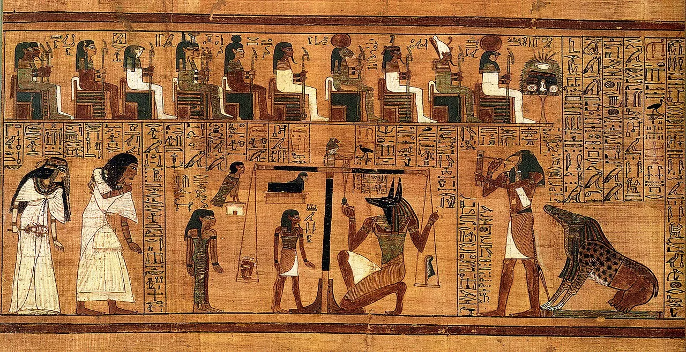

5.6The covenant at Sinai and the Late Bronze treaties
Strong In 1954 George Mendenhall noticed that the covenant at Sinai, and the book of Devarim, follow the outline of the treaties that Hittite kings made with their vassals in the fourteenth and thirteenth centuries BCE. Those treaties open by naming the great king and listing the favors he has done for the vassal. Then they set out the vassal’s duties, starting with loyalty to this king alone. They require the text to be kept in a sanctuary and read aloud at set times, they call on witnesses, and they end with blessings and curses. Kenneth Kitchen and Joshua Berman add that Assyrian treaties of the first millennium leave out the history of past favors and have no blessings at all. The form of the covenant at Sinai therefore matches the second millennium, the period the tradition gives it.
Some curses in Devarim 28 have close relatives in treaties of the first millennium. One is the treaty the Assyrian king Esarhaddon imposed on his vassals in 672 BCE, a copy of which came to light in 2009 at Tell Tayinat in Turkey. The eighth-century Aramaic treaties of Sefire, near Aleppo, also contain the “futility curses” of Vayikra 26 and Devarim 28, in which one eats and is not satisfied. Curse formulas stayed in use for many centuries, so they cannot date a text closely, as Part IV explains.
The covenant at Sinai also transforms the parties. Every ancient treaty bound two kings, whereas at Sinai the great King is Hashem and the vassal is an entire nation of freed slaves. The treaties command the vassal to “love” his overlord, in the sense of loyalty, and Devarim commands Israel to love Hashem. Hashem calls Israel His segulah (Shemos 19:5), the same word, sglt, that a Hittite king used at Ugarit for a treasured vassal. As Berman argues in Created Equal, when every Israelite is a direct party to the covenant with the great King, no room remains for a human king who is divine.
Six parts of a treaty, from the Hittites to Esarhaddon
Sinai and Devarim share the history of past favors and the paired blessings and curses of Hittite treaties of the second millennium. Assyrian treaties of the first millennium drop both. The covenant at Sinai also binds a whole nation, where the other treaties bind a king.
5.7The Mishkan and the war camp of Ramesses
Probable Ramesses II had reliefs of his war camp at Kadesh in 1274 BCE carved on the walls of several Egyptian temples. The camp is a rectangle twice as long as it is wide, with the royal tent at its center. The tent consists of an outer audience chamber and a square inner throne room in which two winged falcon deities spread their wings over the king’s name. Michael Homan and Kenneth Kitchen have compared that plan with the Mishkan. Its courtyard measures 100 by 50 cubits, twice as long as it is wide, and it contains an outer Kodesh and a square Kodesh HaKodashim where two winged keruvim spread their wings over the Aron. The resemblance is close, and it suits a people newly departed from the Egypt of the Ramesside kings.
The interior of the Mishkan, however, departs from every temple of the region. A pagan temple existed to house the god’s statue, which priests washed, clothed and fed twice daily, but the Kodesh HaKodashim contains no statue at all, only a chest holding the tablets of the covenant with empty space above it. Tehillim 50:12 makes the point: “If I were hungry I would not tell you.”
The same background explains the Egel. Throughout Canaan and Egypt a young bull served as the pedestal and emblem of a storm god, and at Ugarit the chief god was called “Bull El.” When Moshe disappeared on the mountain, the people reached for the familiar sign of a divine presence.
5.8Korbanos and the pagan rites
The Rambam explained the korbanos the same way this monograph reads Bereishis (Moreh Nevuchim III:32, III:46). The Torah kept the familiar form of worship by sacrifice and directed it to Hashem alone, so that Israel could leave idolatry behind without an impossible leap. The Rambam knew the pagan rituals only from a few medieval Arabic books, and excavations have since confirmed his picture of them in detail.
Strong Yechezkel Kaufmann pointed out that the service of the kohanim in Vayikra is silent, and Israel Knohl later called the Mishkan “the sanctuary of silence.” In Mesopotamia and Egypt every ritual act needed a spoken spell, because the words were thought to work magic on the gods. In Vayikra the kohen slaughters, sprinkles the blood and burns the offering without a single required formula. The only words required are a confession of sin.
Strong Yom Kippur shares a term with the Babylonian New Year festival. On its fifth day a priest wiped the walls of the temple with the carcass of a ram, an act called kuppuru, from the same root as kapparah, then cast the carcass into the river and left the city. The Babylonian rite purged demons from a building, whereas Vayikra 16 applies a comparable act to the sins of the people, confessed aloud. The Korban Pesach slaughters the animal Egypt revered, as the Rambam noted (Moreh III:46).
5.9The Hittite archives
The royal archives of Hattusa, the Hittite capital in central Anatolia, furnish three further points of contact from the Late Bronze Age.
Gods who overthrow their fathers. The Hurrian and Hittite Song of Kumarbi and Song of Ullikummi tell how kingship in heaven passed by force from Alalu to Anu, then to Kumarbi and finally to the storm god Teshub. Scholars see in these songs the background of Hesiod’s Theogony. Bereishis 1 has no birth of the gods and no war in heaven, so it answers this whole world of myth along with Babylon’s.
The goat sent away. Probable David P. Wright collected Hittite rituals against plague, such as those of Ashella and Uhhamuwa. In them a ram or a goat was decorated with colored wool, loaded with the plague by a spell and driven across the border into enemy land. The goat sent to Azazel (Vayikra 16) and the bird set free for a healed leper (Vayikra 14) have the same outward form. The Torah, however, has no hostile god to appease and no plague to push onto an enemy. What the goat carries away is the people’s confessed sin.
A broken oath and a famine. Strong Around 1320 BCE, during a plague that lasted twenty years, King Mursili II searched the old archives to discover which oath his father Suppiluliuma had violated and then made restitution. Shmuel II 21 recounts a similar episode, in which a three-year famine is traced to Shaul’s violation of his oath to the Givonim and David makes restitution to end it. In both cases an oath sworn before heaven binds the following generation.
5.10Bilaam on a plaster wall, and the oldest verse of the Torah
Bilaam on a plaster wall. Strong In 1967 Dutch archaeologists excavating at Deir Alla in the Jordan Valley found an eighth-century inscription written in ink on plaster. It introduces “the book of Bilaam son of Beor, a seer of the gods,” who receives a nocturnal vision of disaster and rises weeping. The inscription is centuries later than Moshe and cannot date Sefer Bamidbar, but it shows that Bilaam was remembered east of the Jordan as a renowned seer who received visions by night, which is how Bamidbar 22–24 presents him. In the Torah’s account, the greatest seer of the nations can utter only what Hashem places in his mouth.
The oldest verse. In 1979 Gabriel Barkay found two tiny rolled silver amulets in a burial cave at Ketef Hinnom, across the valley from the Old City of Jerusalem, and when unrolled they proved to contain Birkas Kohanim (Bamidbar 6:24–26). The excavators date them to about 600 BCE, before the destruction of the First Temple. They do not date the Chumash as a whole, but they are the oldest known objects that bear words of the Torah, and critics assign this blessing to their late Priestly source, a point Part IV addresses.

.jpg){kind=link}
5.11Inscriptions from the Land of Israel
A worker’s cloak. Strong In 1960 excavators at Mesad Hashavyahu, a coastal fortress near Yavneh-Yam, found a Hebrew letter written on a potsherd in the late seventh century BCE. In it a harvest laborer complains to the commander that an overseer has confiscated his garment, cites his fellow reapers as witnesses and pleads for its return. The Torah forbids retaining a poor man’s garment as a pledge overnight (Shemos 22:25–26; Devarim 24:12–13), and the laborer’s petition presupposes a society that knew that law.
“Hashem and his Asherah.” Eighth-century Hebrew inscriptions from Kuntillet Ajrud in northern Sinai and from Khirbet el-Qom in the Judean hills bless their readers “by YHWH and his Asherah,” evidence of the mixed worship that Devarim 16:21 forbids and the prophets opposed.
A king who loses his family. The Ugaritic Epic of Kirta, from the Late Bronze Age, tells of a king who loses his entire family, receives a divine promise of new offspring, vows a gift to the goddess Athirat and falls mortally ill when he neglects it. Iyov’s bereavement and Yaakov’s vow at Beis El share elements of that plot.
5.12Mountains, meals, omens and the dead
Some of the Torah’s answers to its neighbors are not in any one story. They run through its whole picture of where God lives, what He requires, how the future is known and what happens to the dead.
Where God lives. The storm gods of the region lived on their own mountains: Baal on Mount Tzafon on the Syrian coast, Teshub in the mountains of Anatolia and Marduk in the temple tower of Babylon. Hashem meets Israel at Sinai, a desert mountain that never became a shrine, and then travels with them in a tent. Tehillim 48:3 calls Mount Tziyon yarkesei Tzafon, “the heights of Tzafon,” giving the title of Baal’s mountain to Jerusalem. At Chorev, Eliyahu finds Hashem not in the wind, the earthquake or the fire, but in a still, small voice (Melachim I 19:11–12).
What God eats. Every great temple from Ur to Karnak served two meals a day to a cult statue that had been animated by a ceremony called “the washing of the mouth,” and a hungry god endangered the world. In the Mishkan the kohanim themselves eat the lechem hapanim, there is no statue, and Tehillim 50 ridicules the very notion.
How the future is known. Babylonian kings retained diviners to read the future in the livers of sacrificial sheep, in oil poured on water and in the movements of the planets, and Yechezkel 21:26 depicts the king of Babylon inspecting a liver. Devarim 18:10–15 prohibits all such practices and establishes the navi in their place, and Bilaam concedes that “there is no divination in Yaakov” (Bamidbar 23:23). A navi’s warning, moreover, is not an immutable fate, since teshuvah can reverse it, as Yonah learns at Nineveh.
The dead. Probable Israel left Egypt, a civilization that invested more of its wealth in tombs, mummification and funerary spells than any other of its time. It then entered Canaan, where the kings of Ugarit honored the royal dead, the Rephaim, with offerings and banquets. The Chumash says almost nothing about the afterlife, and that silence is probably itself a response. Tanach reduces the Rephaim to powerless shades (Yeshayahu 14:9; Tehillim 88:11), forbids giving tithes to the dead (Devarim 26:14) and tells Israel to choose life in this world (Devarim 30:19).
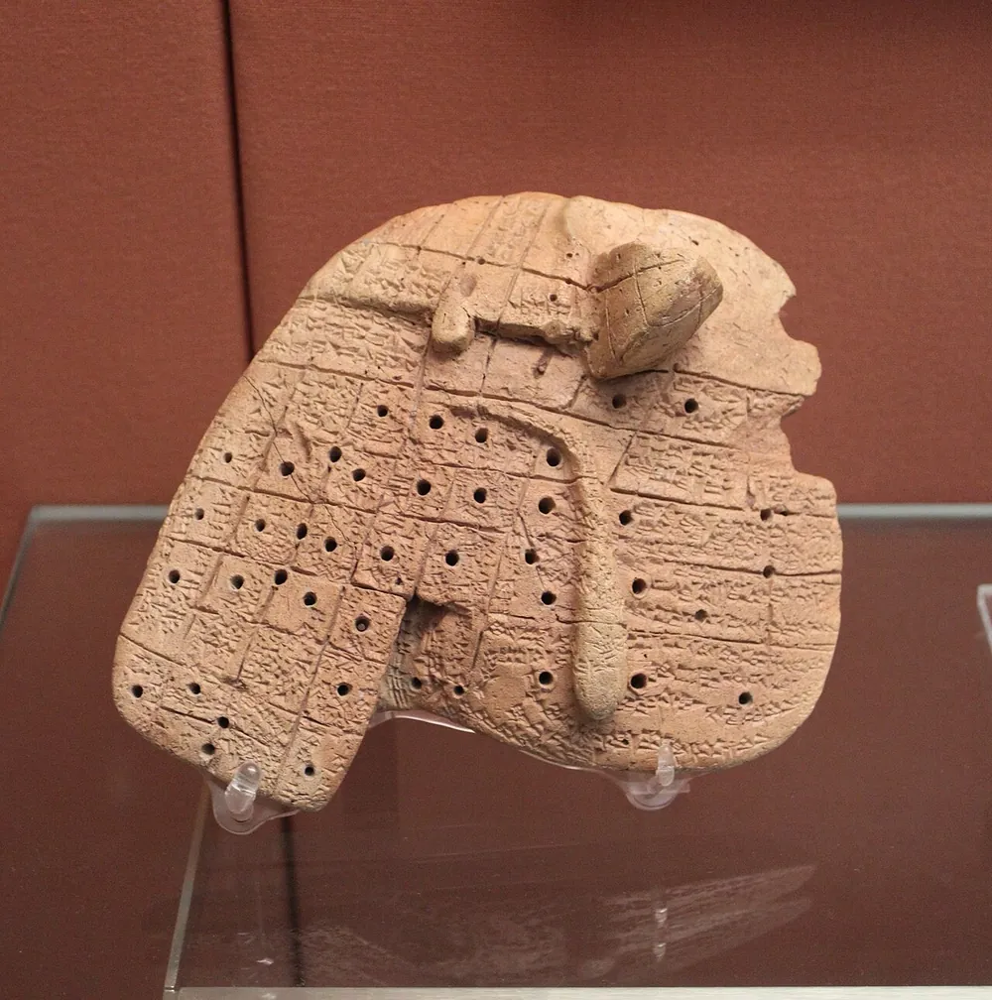

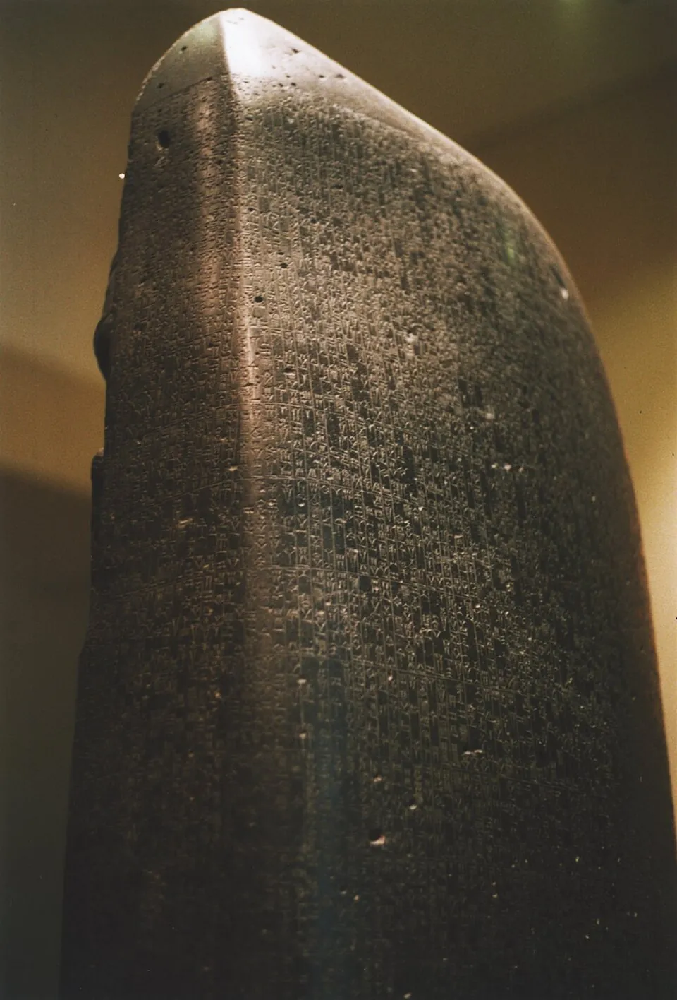
Part VI
Counter-laws
The Torah answers Hammurabi as Bereishis answers Gilgamesh. It keeps the familiar cases and changes the values that decide them, and it was written in a legal form that expected a living oral tradition beside it.
The stele of Hammurabi, Louvre. Photo: Rama, CC BY-SA 3.0 fr · Wikimedia Commons

6.1A thousand years of written law before Sinai
By the time of Sinai, the ancient Near East had been committing laws to writing for roughly a thousand years. The Sumerian laws of Ur-Namma date to about 2100 BCE, those of Lipit-Ishtar of Isin to about 1930 BCE, and those of the city of Eshnunna to about 1770 BCE. The best-known collection, the laws of Hammurabi of Babylon, was inscribed around 1750 BCE on a black basalt stele that now stands in the Louvre. The Hittite laws were in force from about 1650 to 1200 BCE, and the Middle Assyrian laws survive on tablets of about 1100 BCE that preserve older rulings. Fragments of a law collection in Hammurabi’s style have even been excavated at Hazor in the Galilee.
With the exception of a small set of late Babylonian laws, every one of these collections comes from the second millennium BCE, the same distribution Part IV found among the myths. The Torah’s laws were therefore answering a legal tradition that flourished in the Late Bronze Age. Many of them address the very cases those collections treat, and the comparison reveals the Torah doing with law what Bereishis does with myth: it preserves the structure of the familiar case and alters the values that decide it. This monograph calls such laws counter-laws.
6.2How ancient law collections worked


A modern reader assumes that a written law is a statute, a rule that a judge looks up and applies word for word. Ancient law collections did not work that way. Assyriologists have studied thousands of Babylonian court records, and the judges in them almost never cite Hammurabi’s laws, even in cases his collection covers. The collection was a showpiece of royal justice and a training in legal thinking, written as a series of examples: “If a man does this, then that.” Real verdicts were given by judges using custom and judgment that were never fully written down.
Rabbi Joshua Berman of Bar-Ilan University argues in Inconsistency in the Torah (2017) that the Torah’s laws should be read the same way. They are model cases that teach principles of justice, and they were never meant to work as a complete code on their own. This explains why Devarim can restate and adjust laws from Shemos without anyone in the ancient world feeling that the earlier law had been canceled. It also bears on Torah SheBaal Peh. The written laws of the Torah were given in the form every ancient law collection took, so an ancient listener would have expected a living tradition of how to apply them to come with them.
Chazal’s reading of “an eye for an eye” belongs to this world. The Torah says “an eye for an eye” (Shemos 21:24), and Chazal rule that the offender pays the value of the eye (Bava Kamma 83b–84a). The older collections of Ur-Namma and Eshnunna had already prescribed silver payments for injuries, Eshnunna fixing sixty shekels for an eye and thirty for a tooth, whereas Hammurabi’s laws imposed corporal punishment in kind, but only between nobles. The Torah’s phrase declares that every eye is of equal worth, the pauper’s and the noble’s alike, and the Oral Law specifies how that worth is paid. Read against its world, the Oral Law’s monetary interpretation corresponds to what the verse meant to its first audience.
6.3Life and property
In 1960 the Bible scholar Moshe Greenberg pointed out a basic difference between the Torah and its neighbors. The ancient collections measured human life and property on one scale. A killer could pay in silver or hand over members of his household, and a thief could be executed for robbing a temple or breaking into a house. In the Torah the two scales never meet. No ransom may be taken for the life of a murderer (Bamidbar 35:31), and no thief is ever put to death for theft (Shemos 21:37–22:3).
Several other reversals follow from the same principle. Under Hammurabi’s laws, if a builder’s house collapses and kills the owner’s son, the builder’s son is put to death (§230). The Torah forbids punishing children for their parents’ crimes (Devarim 24:16). Under Hammurabi’s laws a slave’s eye is worth half his price, paid to his owner (§199). In the Torah a slave who loses an eye or a tooth goes free (Shemos 21:26–27), so the compensation goes to the slave, because the slave is a person. The laws on runaway slaves differ most. Hammurabi puts to death anyone who helps a slave escape (§§15–16). The Torah commands, “Do not hand over a slave to his master who has escaped to you” (Devarim 23:16), and no other known ancient law collection has a law like it.
The goring ox illustrates the same principle from another angle. Eshnunna and Hammurabi both address an ox that kills a person, and in both the owner pays silver if he had been warned while the ox itself suffers nothing. The Torah treats the same case, and its rule for an ox that kills another ox reproduces Eshnunna §53 almost verbatim: the live ox is sold and the proceeds divided, and the carcass is divided as well (Shemos 21:35). When an ox kills a human being, however, the Torah orders it stoned and its flesh forbidden (21:28). Human blood is so sacred that even an animal that sheds it is held accountable, as Hashem told Noach: “From every beast I will demand it” (Bereishis 9:5).
Twenty-nine cases side by side
The Torah takes the old laws and changes them along one line
The law collections of Mesopotamia and Anatolia beside the Torah, case by case. Most changes fall into a few groups: life above property, one law for every person, and the weak treated as people. In a few cases the Torah agrees with its neighbors, and in some it is stricter. Select a group or a case.
Show the full table
| Case | Ancient law collections | Torah | What changed |
|---|---|---|---|
| Murder | Hittite Laws §§1–4: a killer pays by handing over persons; Middle Assyrian Laws A10 allow the victim’s heir to choose death or payment. | No ransom may be taken for a murderer’s life (Bamidbar 35:31). | No payment can stand in for the penalty for murder. |
| Theft | Hammurabi §§6–8, 21–22: death for many thefts and for burglary; thirtyfold or tenfold payment for livestock, or death if the thief cannot pay. | Double payment; four- or fivefold for a slaughtered or sold animal; a thief who cannot pay is sold for a limited term (Shemos 21:37–22:3). | Theft is punished with payment, never with death. |
| The thief at night | Eshnunna §§12–13: a thief caught in a field or house by day pays 10 shekels; at night he may be killed. | A burglar killed at night brings no bloodguilt; if the sun has risen, it does (Shemos 22:1–2). | The Torah agrees with Eshnunna. |
| Eye for an eye | Hammurabi §§196–201: eye for eye between nobles; money for a commoner’s eye; half the price for a slave’s. Ur-Namma and Eshnunna §42 set silver payments for injuries. | “Eye for an eye” (Shemos 21:24), with “one law for the stranger and the citizen” (Vayikra 24:22); Chazal: the value of the eye in money (Bava Kamma 83b–84a). | One standard for every person; money compensation, as in the older collections. |
| A pregnant woman struck | Hammurabi §§209–214: silver for the miscarriage; if a nobleman’s daughter dies, the striker’s daughter is killed. Middle Assyrian Laws A50; Hittite Laws §17 sets payment by month of pregnancy. | Payment for the miscarriage; if there is harm to the woman, “a life for a life” (Shemos 21:22–25). | Only the striker is liable; no relative of his is executed. |
| Punishing the children | Hammurabi §116, §210, §230: a creditor’s son, a striker’s daughter, or a builder’s son is killed for the father’s deed. | “Fathers shall not be put to death for children, nor children for fathers” (Devarim 24:16). | Only the person who did the deed is punished. |
| The goring ox | Eshnunna §§53–55, Hammurabi §§250–252: the owner of a known gorer pays silver; nothing happens to the ox. | The ox is stoned and its meat forbidden; the negligent owner’s life is forfeit, though a ransom may be set (Shemos 21:28–32). Ox kills ox: the live ox and the carcass are divided (21:35), as in Eshnunna §53. | An animal that kills a person is itself put to death (compare Bereishis 9:5). |
| Debt slavery | Hammurabi §117: a wife or child sold for debt serves three years and goes free in the fourth. | A Hebrew servant serves six years and goes free in the seventh (Shemos 21:2), sent off with gifts (Devarim 15:13–14), and rests on Shabbos like his master (Devarim 5:14). | The term is longer, but the servant has rights, Shabbos rest and parting gifts. |
| Runaway slaves | Hammurabi §§15–16: helping a slave escape or hiding a runaway is punished by death. | “Do not hand over a slave to his master who has escaped to you … he shall live with you wherever he chooses” (Devarim 23:16–17). | No known ancient law collection has a parallel. |
| Injuring a slave | Hammurabi §199: the striker pays half the slave’s value to the owner. | The slave goes free for an eye or even a tooth (Shemos 21:26–27). | The compensation goes to the slave, because the slave is a person. |
| Killing one’s own slave | No penalty in the Mesopotamian collections. | “He shall surely be avenged” (Shemos 21:20). | A master who kills his slave is punished. |
| The ear | Hammurabi §282: a slave who denies his master has his ear cut off. | A servant who chooses to stay has his ear pierced at the doorpost (Shemos 21:5–6); Chazal: the ear that heard “they are My servants” and chose a human master (Kiddushin 22b). | The ear is marked when a servant chooses to stay, as a reproach for choosing a human master. |
| A daughter sold as a servant | Hammurabi §§170–171 deal with the children a master has by his slave woman; in the collections and in sale contracts she is property. | The Hebrew maidservant must be married by the master or his son, treated as a daughter, or freed without payment (Shemos 21:7–11). | Her rights are written into the law. |
| Rape in the field | Hittite Laws §197: if a man seizes a married woman in the mountains, he dies; if in the house, she dies. | A betrothed woman attacked in the field is innocent, because “she cried out and there was no one to save her”; in the city, she is guilty only if she did not cry out (Devarim 22:23–27). | Judgment turns on evidence of consent, not on location alone. |
| Rape or seduction of a virgin | Middle Assyrian Laws A55: the father takes the rapist’s own wife and hands her over to be raped; the rapist pays triple and marries the girl. | The man pays fifty shekels, must marry her, and may never divorce her; the father may refuse the marriage (Devarim 22:28–29; Shemos 22:15–16). | No innocent wife is punished for her husband’s crime. |
| A husband’s violence | Middle Assyrian Laws A59: a husband may whip his wife, pull her hair, and cut or damage her ears without liability. | No such permission; Chazal count a wife’s food, clothing, and conjugal rights as a husband’s obligations (Shemos 21:10; Kesubos 47b). | The law lists what a husband owes his wife. |
| Adultery | Hammurabi §129: both are drowned unless the husband pardons his wife; Middle Assyrian Laws A15 let the husband choose the punishment. | Both are put to death (Vayikra 20:10), and no private pardon is offered. | Stricter: the husband cannot pardon, because the law is Hashem’s. |
| The accused wife | Hammurabi §132: a wife accused by rumor must leap into the river god’s water. | The Sotah drinks water with dust from the Mishkan floor and Hashem’s erased name, which harms only the guilty (Bamidbar 5). | The ordeal cannot harm an innocent woman. |
| Levirate marriage | Hittite Laws §193 and Middle Assyrian Laws A33: the widow passes to her husband’s brother and, failing him, to his father. | Only a brother, who may refuse through chalitzah (Devarim 25:5–10); a father-in-law is forbidden (Vayikra 18:15). Yehuda and Tamar (Bereishis 38) show the older custom. | An old custom is limited and made voluntary. |
| Bestiality | Hittite Laws §§187–188, 199–200a: death with a cow, sheep, pig, or dog; no punishment with a horse or mule. | Forbidden with every animal (Vayikra 18:23; 20:15–16). | The Torah allows no exceptions. |
| Incest | Hammurabi §§154–158; Hittite Laws §§189–195: some unions punished, others permitted or lightly punished. | A full list of forbidden relatives (Vayikra 18). | Every union on the list is forbidden. |
| Kidnapping | Hammurabi §14: death for kidnapping a nobleman’s young son. | Death for kidnapping any person (Shemos 21:16; Devarim 24:7). | The law protects every person. |
| Striking a parent | Hammurabi §195: a son who strikes his father has his hand cut off. | Death (Shemos 21:15). | Stricter: the Torah makes it a capital crime. |
| Interest | Eshnunna §18A and Hammurabi set legal interest rates, often 20 percent on silver and 33⅓ on grain. | No interest from a fellow Israelite (Shemos 22:24; Vayikra 25:36–37; Devarim 23:20). | Interest between Israelites is forbidden. |
| Pledges | Hammurabi §241 fines a creditor who seizes an ox as a pledge. | No taking a millstone as a pledge (Devarim 24:6); a poor man’s cloak must be returned by nightfall (Shemos 22:25–26; Devarim 24:12–13). A Hebrew letter from Mesad Chashavyahu shows a reaper pleading for his garment. | The debtor keeps what he needs to live. |
| Release of debts | Kings issued misharum or andurarum edicts that canceled debts when they chose, often on taking the throne (Edict of Ammi-saduqa, c. 1640 BCE). | Debts are released every seventh year (Devarim 15:1–2), and in the Yovel “you shall proclaim deror,” the Hebrew form of andurarum (Vayikra 25:10). | Release comes on a fixed schedule set by the Torah. |
| Widows and orphans | Hammurabi’s epilogue boasts that he wrote his laws so that the strong would not oppress the weak and so that the orphan and the widow would receive justice. | “You shall not afflict any widow or orphan; if you afflict them … I will surely hear their cry” (Shemos 22:21–23). | The protection is Hashem’s own promise. |
| Boundary stones | Egyptian Instruction of Amenemope, ch. 6: do not move the markers on the borders of fields. | “Do not move your neighbor’s boundary” (Devarim 19:14; Mishlei 22:28). | The same rule, made part of the covenant. |
| Who gives the law | Hammurabi is shown receiving his authority from the sun god Shamash, and he calls the laws his own precious words of justice. | The king must write a copy of the Torah and read it all his life, so that his heart is not lifted above his brothers (Devarim 17:18–20). | The king must obey a law he did not write. |
Laws are cited by the standard section numbers in Martha Roth, Law Collections from Mesopotamia and Asia Minor (SBL, 1995) and Harry Hoffner, The Laws of the Hittites (Brill, 1997). Quotations are paraphrased.
6.4Slaves, women and the weak
The ancient economy rested on slavery. The Torah did not abolish it, but it gave the slave the rights of a person. A Hebrew servant goes free in the seventh year (Shemos 21:2). Hammurabi’s limit for family members sold for debt was actually shorter, three years (§117), so the Torah’s change lies elsewhere: in the rights, the rest and the parting gifts that come with the six years. The master must send the servant away with generous gifts from his flock, his threshing floor and his winepress, “because you were a slave in the land of Egypt” (Devarim 15:13–15), and the servant rests on Shabbos “like you” (Devarim 5:14). A servant who chooses to stay has his ear pierced at the doorpost (Shemos 21:5–6), while Hammurabi cut off the ear of a slave who denied his master (§282). Rabban Yochanan ben Zakkai explained the piercing. This ear heard at Sinai that Israel are servants of Hashem, and it still went and acquired a human master, so it deserves to be marked (Kiddushin 22b).
The laws concerning women show the Torah reshaping cases familiar across the region. The Hittite laws judged an assault on a married woman by its location, holding the man guilty if it occurred in the mountains and the woman guilty if it occurred in the house (§197). The Torah retains the two settings, field and city, but turns the question into one of evidence for consent, since in the field “she cried out, and there was no one to save her” (Devarim 22:27).
The Middle Assyrian laws punished a man who raped a virgin by having her father take the rapist’s own wife and hand her over to be raped (A55). They also let a husband whip his wife and cut her ears without penalty (A59). The Torah has no such laws. The man who violates an unmarried girl must pay, must marry her if her father agrees, and may never divorce her (Devarim 22:28–29). Hammurabi’s test for a wife accused by rumor was to throw her into the river (§132), which can drown the innocent. As Tikva Frymer-Kensky showed, the Torah’s Sotah ritual replaces the river with a drink that harms only the guilty, and it takes the outcome out of a jealous husband’s hands (Bamidbar 5).
One further case displays the method with particular clarity, because the Torah preserves both the old custom and its correction. The Hittite and Middle Assyrian laws transferred a widow to her late husband’s brother or, failing a brother, to his father (Hittite §193). In Bereishis 38, Yehuda’s family follows that older custom, and the narrative ends with Yehuda himself, the father-in-law, unwittingly fulfilling it. The Torah’s law subsequently restricts the obligation to a brother, permits him to decline through chalitzah (Devarim 25:5–10) and prohibits a father-in-law absolutely (Vayikra 18:15).
6.5Where the Torah agrees, and where it is stricter
The counter-laws do not make the Torah a modern liberal code. At times the Torah concurs with the older law, as when both Eshnunna and the Torah permit a householder to kill a burglar who breaks in at night (Shemos 22:1). At times it is more severe. Hammurabi cut off the hand of a son who struck his father (§195), while the Torah prescribes death (Shemos 21:15), and Hammurabi allowed a husband to pardon an adulterous wife (§129), while the Torah admits no private pardon (Vayikra 20:10). The Hittite laws permitted relations with a horse or a mule (§200a), while the Torah forbids every such act. The Torah also makes idolatry and the desecration of Shabbos capital offenses, which no other collection mentions.
The pattern comes from one set of values applied consistently, and that makes the Torah sometimes more lenient than its neighbors and sometimes stricter. Human life has no price, and slave and free, citizen and stranger stand under the same law. Servants are persons, not property. The law belongs to Hashem, so the king of Israel must write his own copy of the Torah and read it all his days, “so that his heart will not be lifted above his brothers” (Devarim 17:20). Hammurabi had himself carved on his stele standing before his god and called the laws his own words. Israel’s king had to copy out a law he had not written.
6.6Debt, release and the poor
Mesopotamian kings periodically canceled debts by royal decree, usually upon their accession, in edicts called misharum or andurarum, and the edict of King Ammi-saduqa of Babylon, from about 1640 BCE, survives. Whether the poor were released depended on the king’s political calculations. The Torah made release a fixed institution of the calendar: debts are remitted every seventh year (Devarim 15:1–2), and in the Yovel “you shall proclaim deror throughout the land” (Vayikra 25:10). Deror is the Hebrew cognate of the Akkadian andurarum, the term for the king’s occasional decree, applied here to a release fixed in law.
The same holds for lending. Eshnunna set the legal rate of interest at twenty percent on silver and thirty-three and a third percent on grain (§18A), whereas the Torah forbids taking interest from a fellow Israelite altogether (Shemos 22:24; Vayikra 25:36–37). It prohibits taking a millstone in pledge, since that would be taking “a life as a pledge” (Devarim 24:6). It requires that a poor man’s cloak be returned before nightfall, “for that is his only covering … and if he cries out to Me, I will listen” (Shemos 22:25–26). The Hebrew letter from Mesad Hashavyahu described in Part V, in which a harvest laborer pleads for the return of his confiscated garment, shows the law operating in seventh-century Judah. Hammurabi boasted in the epilogue to his laws that they protected the widow and the orphan, but the Torah made that protection Hashem’s personal pledge: “If you afflict them, and they cry out to Me, I will surely hear their cry” (Shemos 22:22).
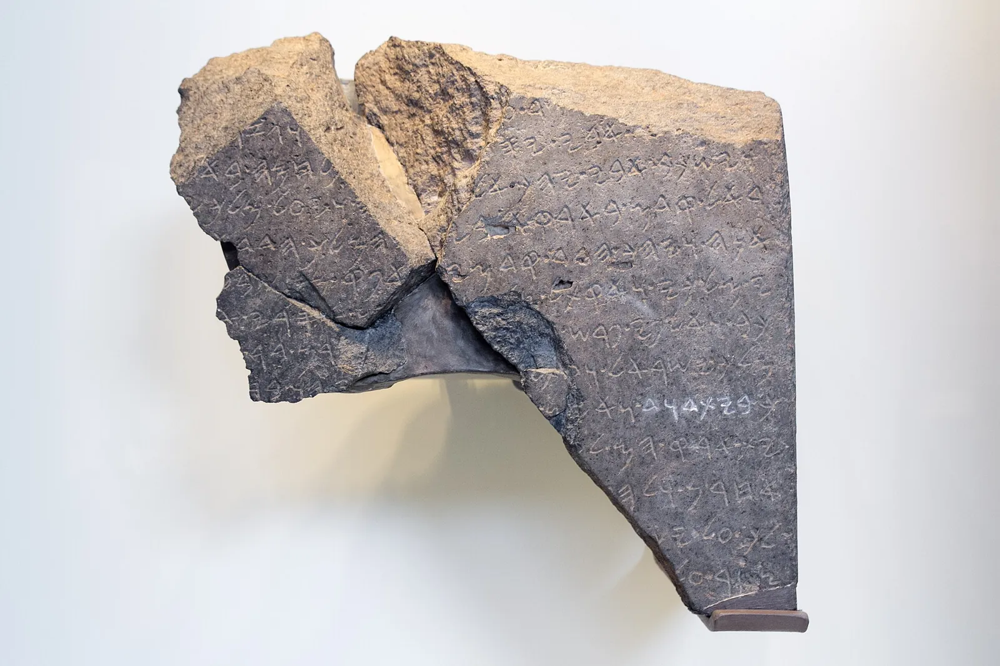
Part VII
The rest of Tanach, and Chazal
The prophets, Tehillim and the wisdom books take up the old mythic poetry openly and turn it against the gods and empires of their own day, and Chazal extend the method into the Greek, Roman and Persian world.
The Tel Dan Stele, Israel Museum. Photo: Oren Rozen, CC BY-SA 4.0 · Wikimedia Commons

7.1Yehoshua to Melachim: Israel among the shrines of Canaan
The books from Yehoshua through Melachim are set in Iron Age Canaan, a world of Phoenician builders, Philistine temples, Aramean armies and the rituals of the entire region. They answer that world as the Torah does.
The stars fight for Israel. Strong At the Jordan the river rises in a heap and Israel crosses on dry ground (Yehoshua 3–4), as at the Yam Suf. In the Song of Devorah, “the stars fought from their courses” against Sisera (Shoftim 5:20), so that the heavenly lights the Canaanites worshiped become soldiers under Hashem’s command.
Shimshon and the sun. Probable Shimshon’s name derives from shemesh, the sun, and his story unfolds near Beis Shemesh, a town named for the sun. The region told tales of a mighty solar hero, whereas Shoftim tells of a flawed nazir whose strength deserts him the moment he violates his vow.
The pit at Ein Dor. Strong Shaul consults the ba’alas ov, the mistress of the ov (Shmuel I 28). The word ov corresponds to the Hittite api and the Ugaritic ʾb, which Hittite and Syrian ritual tablets describe as a pit dug in the ground to summon spirits from below.
Shlomo’s Temple. Strong Melachim openly records that Shlomo engaged craftsmen from Hiram, king of Tyre. Excavations at Ain Dara and Tell Tayinat in northern Syria have uncovered Iron Age temples built on the plan of Melachim I 6, each with a porch flanked by two pillars, a long main hall and an inner sanctuary at the rear. Lawrence Stager showed that Shlomo’s Temple conforms to the sacred architecture of Syria and Phoenicia in the tenth to eighth centuries BCE. The difference lies in the inner room, for Ain Dara’s housed the god’s statue, while the Kodesh HaKodashim held the Aron with empty space above it.
A god of the hills. Aramean advisers assure Ben-Hadad that Israel’s God is “a god of the hills” and that Aram will therefore prevail on the plain (Melachim I 20:23). They express the common conviction that every god ruled his own territory, and the battle on the plain refutes it. Centuries later, Yoshiyahu removes the horses and chariots dedicated to the sun from the entrance of the Beis HaMikdash (Melachim II 23:11), a verse that reveals how deeply solar worship had penetrated Jerusalem.
7.2The Nevi’im
Where the historical books depict Israel among Canaanite shrines and royal customs, the prophets whose words became books take up the old mythic poetry itself and turn it against the empires of their day. Yeshayahu 27:1 gives one of the closest matches in Tanach between a verse and a Canaanite tablet. A tablet written at Ugarit in the thirteenth century BCE by the scribe Ilimilku recalls Baal’s defeat of Litan with the same two epithets Yeshayahu applies to Livyasan, including akalason, “twisting,” a word attested nowhere else in Tanach. Because Ugarit had lain in ruins for five centuries by Yeshayahu’s time, those poetic formulas must have survived in a living tradition of Canaanite and Israelite verse. Yeshayahu transposed the battle from the beginning of time to the future, when Hashem will judge the empires that oppress His people.
| Ugaritic Baal Tablet (KTU 1.5, c. 1250 BCE) | Yeshayahu 27:1 & Tehillim 74:14 |
|---|---|
| ltn: the sea monster Litan | Livyasan |
| bṯn brḥ: the fleeing serpent | nachash bariach: the fleeing serpent |
| bṯn ʿqltn: the twisting serpent | nachash akalason: the twisting serpent (hapax legomenon) |
| šlyṭ d šbʿt rʾšm: mighty one with seven heads | “You crushed the heads of Livyasan” (Tehillim 74:14) |
| Baal struck him in primordial myth | Hashem will punish him “on that day” in history |
The morning star who tried to sit on the mountain of the gods. Tablet match Yeshayahu 14 taunts the king of Babylon as Heilel ben Shachar, “shining one, son of the dawn,” who said in his heart, “I will ascend to heaven … I will sit on the mount of assembly in the far reaches of Tzafon,” and was brought down to the pit (14:12–15). The Baal Cycle relates that after Baal’s death the god Athtar, who was associated with the morning star, was made king in his place. He ascended Baal’s throne on Mount Tzafon, but his feet did not reach the footstool nor his head the top, so he came down. Shachar, the dawn, was himself a deity at Ugarit, and the prophet employed the old tale of a failed ascent to Tzafon to portray the fall of a human tyrant.
The cherub in the garden of God. Strong Yechezkel tells the king of Tyre that he said, “I am a god, I sit in the seat of the gods in the heart of the seas.” The prophet then describes him as a being who lived in Eden, the garden of God, covered in precious stones. He was a cherub on the holy mountain of God and walked among stones of fire until he was thrown down for his pride (Yechezkel 28:2, 12–17). The passage draws on a version of the Eden story far more mythic than the one in Bereishis, with a holy mountain and a half-divine figure. Yechezkel turns it against a king who thought he was a god.
Death swallowed. Tablet match In the Baal Cycle, Mot, the god Death, has a maw stretching from earth to sky, and he swallows Baal. Yeshayahu inverts the image, declaring that Hashem “will swallow up Death forever” (25:8), and Chavakuk depicts the arrogant conqueror “who widens his throat like Sheol, and like Death is never satisfied” (2:5), the same image as Mot’s appetite. Probable Yirmiyahu laments that “Death has climbed in through our windows” (9:20), a verse Umberto Cassuto connected with the episode in the Baal Cycle in which Baal at first refuses to allow a window in his palace.
The other prophets. Yeshayahu 44 ridicules a man who burns half a log to cook his dinner and bows down to the other half. The target is the Babylonian ceremony of “washing the mouth” of a new statue, at which the craftsmen swore that they had not made it. Yechezkel sees women weeping for the Mesopotamian god Tammuz at the gate of the Beis HaMikdash (8:14). Yirmiyahu condemns the kavanim, cakes baked for the Queen of Heaven (7:18), and Moshe Held matched the word with the Akkadian kamanu, cakes offered to Ishtar. Hoshea tells Israel to call Hashem “my husband” and no longer “my baal” (2:18). Melachim II 1 turns Baal’s Ugaritic title zbl, “prince,” into the insult Baal Zevuv, “lord of flies.” Yechezkel casts Pharaoh as the great tanin lying in his rivers and boasting, “My Nile is my own” (29:3). Nachum mocks the lion hunts carved on Assyrian palace walls when he asks what has become of the lions’ den of Nineveh (2:12–13).
Malachi promises that “a sun of righteousness will rise, with healing in its wings” (3:20), taking the winged sun disk, emblem of royal and divine power from Egypt to Persia, for Hashem’s justice. And Shmuel I 8 enumerates the burdens a king will impose on Israel in terms that, as Isaac Mendelsohn showed, match the royal seizures of land and labor recorded at Ugarit and Alalakh.
Inscriptions of neighboring kings confirm this shared political world. The Mesha Stele from Moav, of about 840 BCE, narrates the war of Melachim II 3 from Moav’s perspective, attributing both the defeat and the victory to the god Kemosh and employing the same term for total destruction, cherem. Yet it assigns no moral cause to Kemosh’s anger, whereas Tanach ties Hashem’s anger to conduct. The statue of Idrimi, king of Alalakh in the fifteenth century BCE, tells of an exiled prince who rallied outcasts and returned to rule, the pattern of Yiftach and of David. Sennacherib’s clay prisms describe his campaign of 701 BCE, boasting of shutting Chizkiyahu up in Jerusalem “like a bird in a cage” and recording the thirty talents of gold noted in Melachim II 18:14, but they never claim that Jerusalem fell.
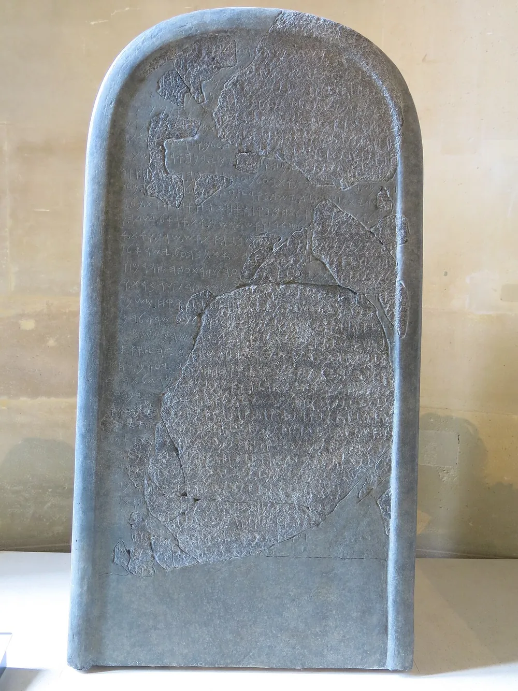
.jpg){kind=link}
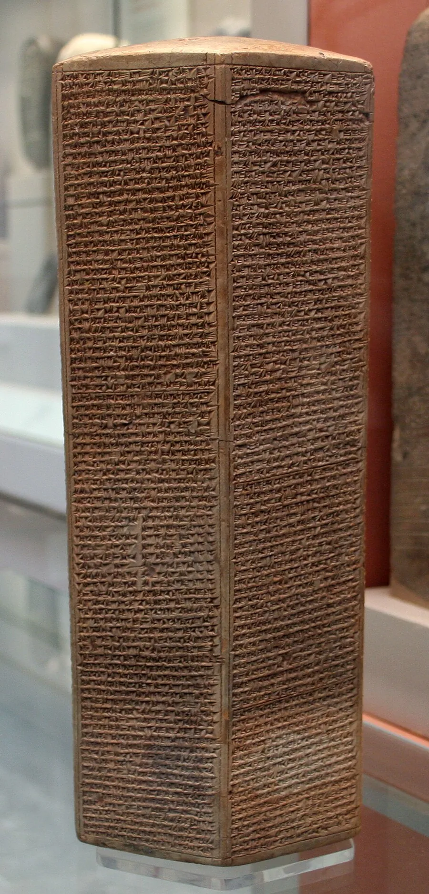

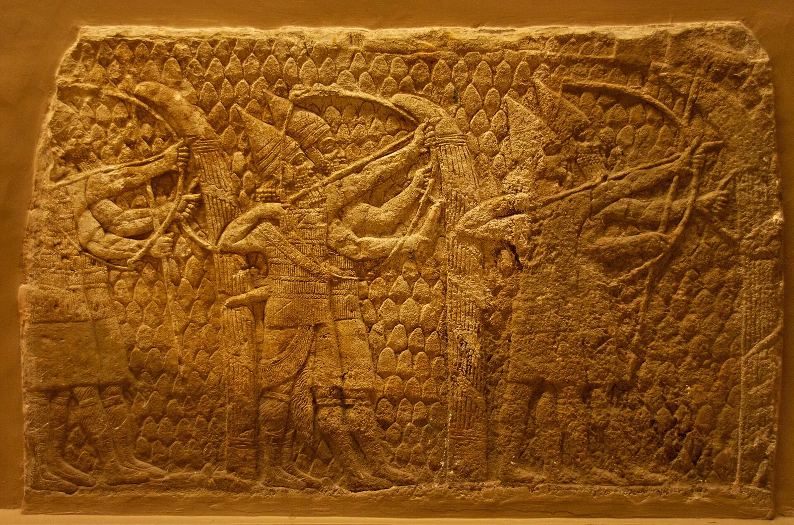

7.3Cyrus, and a God who makes light and darkness
The cylinder of Cyrus. Tablet match When Cyrus the Great took Babylon in October 539 BCE, his scribes buried a clay cylinder in the foundation of a building, and it is now in the British Museum. It says that Marduk, Babylon’s chief god, searched all lands for a righteous king and called Cyrus by name. Marduk led him into the city without a battle and charged him to rebuild ruined temples and send exiled peoples home. Ezra 1:1–4 and Yeshayahu 44:28–45:1 use the same Persian language of restoration. They give the role of the god who chooses Cyrus to Hashem, who calls him “My anointed.”
Persian dualism. Strong In the same speech to Cyrus, Yeshayahu answers the religion of Persia. Zoroastrian teaching divided the world between a good creator, Ahura Mazda, god of light and truth, and an evil spirit, Angra Mainyu, the power of darkness and lies. Yeshayahu 45:7 declares: “I form light and create darkness, I make peace and create evil; I am Hashem, who does all these things.” Scholars debate how early that belief in two powers took its classic form, but the verse leaves no room for a second power beside Hashem. In the next century, Aramaic letters from the Jewish garrison at Elephantine in Egypt use the same official titles, date formulas and style of decree as Ezra 4–7. The excavations of Susa and Persepolis show the Persian court that Megillas Esther describes.
A countermyth in the morning prayers. Strong Chazal embedded Yeshayahu’s answer to Persia in the first bracha before Shema. The bracha quotes the verse, “who forms light and creates darkness, who makes peace,” and then substitutes “and creates all” for “and creates evil,” a change the Gemara explains as a euphemism (Berachos 11b). Every morning, before Shema declares that Hashem is one, a Jew affirms that light and darkness come from the same Creator.
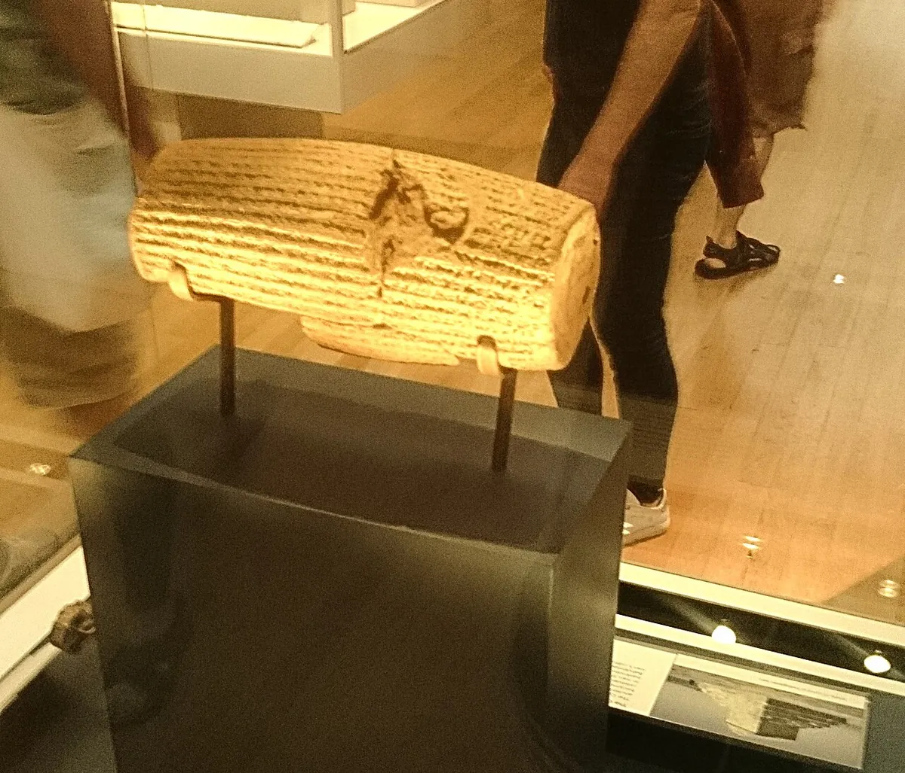

7.4Tehillim: the storm, the sea and the mountain of the gods
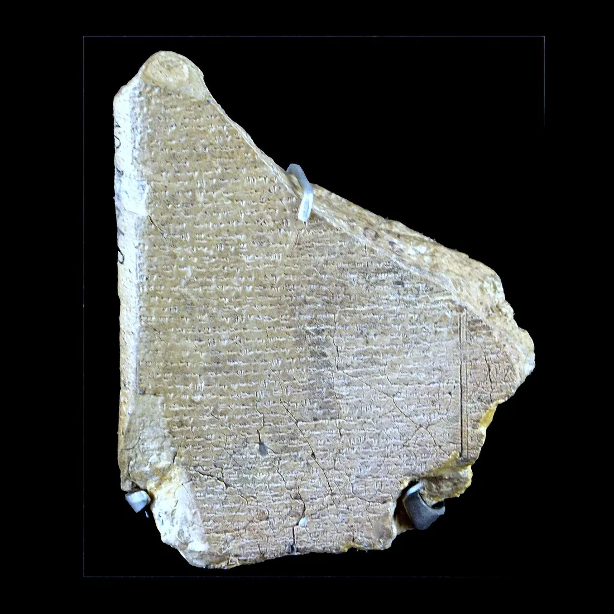

Tehillim contains more countermyth than any book apart from Bereishis. Its poets knew the ancient religious poetry of Canaan, and they took its imagery and its fixed word pairs and ascribed them all to Hashem.
The sea and the river. Tablet match Baal’s great adversary at Ugarit bore two titles that always appear as a pair, Prince Sea and Judge River, zbl ym and tpt nhr. Tehillim uses the same pair: “The rivers have lifted up, Hashem, the rivers have lifted up their voice … more than the sounds of many waters, the mighty breakers of the sea, Hashem on high is mighty” (93:3–4). The psalm opens “Hashem is king,” and at Ugarit too the acclamation “Baal is king” follows his victory over Sea. Hashem founded the earth “on seas, and established it on rivers” (24:2), so that the two ancient enemies now serve as its foundation. Suggested Tehillim 46 goes a step further, for after the waters roar and the mountains quake, “There is a river whose streams gladden the city of God” (46:4–5). River, the adversary of the old myth, has become a stream of joy flowing through Jerusalem.
The dragon and the order of the world. Tablet match Tehillim 74 praises Hashem who “split the sea with Your strength and smashed the heads of the dragons on the waters,” who “crushed the heads of Livyasan.” It continues in the same breath: “Yours is the day, Yours also the night; You established the light and the sun; You set all the borders of the earth; summer and winter, You formed them” (74:13–17). That is the sequence of the old myths, in which the god vanquishes the sea monster and then orders the world. Tehillim 89 follows the same sequence, for Hashem rules “the raging of the sea” and crushed Rahav, and then “the heavens are Yours, the earth is Yours … Tzafon and Yamin, You created them” (89:10–13). Suggested Tzafon was also the name of Baal’s holy mountain, the seat of his throne, so that in Tehillim 89 the mountain of the god becomes something Hashem created.
The mountain of the gods becomes Tziyon. Tablet match “Beautiful in elevation, joy of the whole earth, Mount Tziyon, the far reaches of Tzafon, the city of the great King” (48:3). The phrase “the far reaches of Tzafon” echoes the Ugaritic description of the heights of Baal’s mountain, and the psalm confers the title of the cosmic mountain on a hill in Jerusalem.
The rider of the clouds. Tablet match Baal’s most frequent epithet at Ugarit was “Rider of the Clouds,” rkb ‘rpt, and Tehillim 68:5 summons Israel to “extol the One who rides on the aravos,” the same title in Hebrew. Devarim 33:26 says that Hashem “rides the heavens,” and Tehillim 104:3 that He “makes the clouds His chariot.” Tehillim 18 portrays Hashem coming to rescue David with all the imagery of the storm god. Smoke, fire and thick darkness surround Him, and He rides on a cherub, soars on the wings of the wind and thunders from heaven until “the channels of the sea were seen … at Your rebuke” (18:8–16).
Tehillim 29. Probable, with a warning Many textbooks assert that Tehillim 29 is an adapted Canaanite hymn to Baal. H. L. Ginsberg proposed the idea in 1935 and later scholars popularized it, but it remains one scholar’s reconstruction, since no Canaanite original has ever been found and the psalm’s diction may derive from the poetic idiom Hebrew and Canaanite shared. What can safely be said is narrower: the psalm ascribes the storm god’s entire imagery to Hashem, from the voice of thunder over the waters, the shattered cedars of Lebanon and Sirion skipping like a calf to the trembling wilderness. It summons the bnei elim to give Him glory and concludes with Hashem enthroned over the mabul (29:10), king forever, as the storm’s power becomes peace for His people.
The sun. Strong Nahum Sarna showed that Tehillim 19 uses the language of Mesopotamian hymns to Shamash, the sun god who judged the world and gave justice. In the psalm the sun is a runner who rejoices like a bridegroom along the course Hashem set for it. The title of perfect judge passes to Hashem’s Torah: “The Torah of Hashem is perfect, restoring the soul” (19:8). Tehillim 104 shares specific scenes with Pharaoh Akhenaten’s Great Hymn to the Aten, composed at Amarna around 1340 BCE. Both have lions roaring at night, people going out to work at sunrise, ships on the sea and wonder at the variety of creatures. In the psalm, however, the sun is a servant that “knows its setting” (104:19), and Tehillim 148 commands the sun and moon to praise Hashem (148:3).
The plague gods. Probable Reshef was the Canaanite god of plague, often shown carrying weapons, and a Phoenician inscription calls him “Reshef of the arrow.” Tehillim 76:4 says that at Tziyon Hashem “broke the rishfei kashes,” the reshefs of the bow. Tehillim 91 promises that whoever trusts in Hashem need not fear “the arrow that flies by day,” Dever “that stalks in darkness” or Ketev “that ravages at noon” (91:5–6). The psalm names the plague powers only to declare them helpless. Tehillim 121:6 adds, “The sun will not strike you by day, nor the moon by night.”
Mountains that are born. Suggested In the Mesopotamian and Hurrian stories of the births of the gods, the earth and the mountains were gods born from older gods. Tehillim 90 applies the language of birth to them: “Before the mountains were born, and You brought forth the earth and the world in labor, from eternity to eternity You are God” (90:2).
The gods in court. Tehillim 82, discussed in Part III, puts the divine beings on trial and sentences them to die like men.
7.5Iyov, Mishlei, Koheles and the other Kesuvim
Iyov and the dragon. Tablet match Iyov alludes to more ancient myths than any other book. He asks Hashem, “Am I the Sea, or the Dragon, that You set a guard over me?” (7:12), whereas in Enuma Elish Marduk posts guards to prevent Tiamat’s waters from escaping, and at Ugarit Yam and the dragon are Baal’s captives. Iyov speaks of Hashem who “treads on the back of the Sea” (9:8) and of “the helpers of Rahav” bowing beneath Him (9:13), as Tiamat’s monstrous allies did before Marduk. Iyov 26 goes further: “By His power He stilled the Sea, by His understanding He struck down Rahav; by His wind the heavens became clear; His hand pierced the fleeing serpent” (26:12–13). In Enuma Elish, Marduk drives the winds into Tiamat, shoots her through and fashions the sky from her body, and “fleeing serpent” is Litan’s epithet at Ugarit. Hashem’s speech from the whirlwind adds Behemoth and Livyasan, the fire-breathing dragon no one can capture, which Hashem made (40:15–41:26).
Iyov and the birth of the gods. Strong When Hashem answers Iyov, He asks, “Does the rain have a father? From whose womb did the ice come forth?” (38:28–29). Pagan religion answered such questions with genealogies of gods, while Hashem poses them as questions whose only answer is Himself. The sea “burst forth from the womb,” and Hashem swaddled it in clouds like an infant and told it, “This far you may come and no farther” (38:8–11).
Iyov and the righteous sufferer. Strong Iyov responds to an entire genre of ancient literature concerning the righteous sufferer. The genre includes the Sumerian A Man and His God (Old Babylonian period), the Babylonian Ludlul Bel Nemeqi (“I will praise the lord of wisdom,” late second millennium), the Babylonian Theodicy (around 1000 BCE) and a hymn to Marduk concerning a sufferer, found at Ugarit and published by Yoram Cohen among the wisdom texts of the Late Bronze Age. In those works the sufferer usually concludes that the ways of the gods are unknowable and waits for his god to relent. Iyov refuses the false explanations of his friends and insists on his innocence, and Hashem answers him from the whirlwind. The Gemara records the view that Moshe wrote the book of Iyov (Bava Basra 15a), and the righteous-sufferer texts it answers were circulating in the Late Bronze Age.
Mishlei and the Egyptian wisdom of Amenemope. Tablet match Mishlei 22:17–24:22, “the words of the wise,” follows the Egyptian Instruction of Amenemope so closely that in 1924 the Egyptologist Adolf Erman used the Egyptian text to explain a difficult Hebrew word. Mishlei 22:20 asks, “Have I not written for you shalishim?”, which many render “thirty sayings,” and Amenemope has thirty chapters; both warn against moving the boundary stones of fields (Mishlei 22:28; Amenemope, chapter 6). Amenemope is usually dated to the end of the second millennium BCE, before the time of Shlomo. Israel’s wisdom tradition took what was true in Egyptian wisdom and placed it under “the fear of Hashem,” which Mishlei calls “the beginning of knowledge” (1:7). Probable In Mishlei 8 Wisdom speaks as a young woman who was beside Hashem at creation, “playing before Him at all times” (8:30). Christa Kayatz compared the figure to Maat, the Egyptian goddess of order, daughter of the sun god and present at creation. In Mishlei, however, Wisdom is the first of Hashem’s works (8:22).
Koheles and Siduri. Tablet match In the Old Babylonian version of Gilgamesh, from about 1800 BCE, the tavern keeper Siduri urges the hero to give up his search for eternal life. She tells him to eat his bread and enjoy it, to wear clean garments and wash his head, to delight in the child who holds his hand and to let his wife rejoice in his embrace. Koheles 9:7–9 gives nearly the same advice: “Go, eat your bread with joy … let your garments always be white … enjoy life with the wife you love.” Egyptian Harper’s Songs from the tombs also urged enjoyment before death. Koheles, however, adds what Siduri never says: “Know that for all these things God will bring you to judgment” (11:9). The book ends, “Fear God and keep His commandments” (12:13).
Shir HaShirim and the sacred marriage. Probable Shir HaShirim uses the conventions of Egyptian love poetry of the New Kingdom, such as the songs of Papyrus Chester Beatty I from around 1150 BCE, in which lovers call each other “my brother” and “my sister.” Its garden imagery, “a locked garden is my sister, my bride” (4:12), recalls the Sumerian love songs of the goddess and her bridegroom, which were sung in the rite of sacred marriage. That rite united a god with a goddess to make the land fertile. Chazal read Shir HaShirim as the covenant of love between Hashem and Israel, and Rabbi Akiva called it the holy of holies (Yadayim 3:5). Even the gods Mot and Reshef appear in it only as images: love is “as strong as death,” and its flashes are “flashes of fire” (8:6).
Eichah and Daniel. Strong Eichah adopts the form of the Sumerian city laments, such as the Lament for the Destruction of Sumer and Ur. In these laments a city’s goddess weeps over her ruined town after the council of the gods has decreed its fall for no stated reason. Eichah retains the weeping city but replaces the arbitrary decree with confession: “Hashem is righteous, for I rebelled against His word” (1:18). Probable Daniel 7 depicts four beasts rising from the great sea, an Ancient of Days enthroned, and one like a son of man coming with the clouds of heaven. The scene recalls the Ugaritic pairing of the aged El on his throne with Baal the rider of the clouds and the sea as the source of monsters. In Daniel the sea beasts are empires, and the kingdom is given to the holy ones of the Most High.
Esther and Ishtar. The Gemara notes that the nations called Esther Istahar, the morning star (Megillah 13a), which is the Babylonian Ishtar, and Mordechai’s name derives from Marduk. A nineteenth-century theory held that the entire Megillah was a disguised myth of Marduk and Ishtar, but it collapsed when Babylonian documents revealed officials named Marduka at the Persian court in Susa. The names show only that Jews in exile bore local names, which the Gemara already knew.
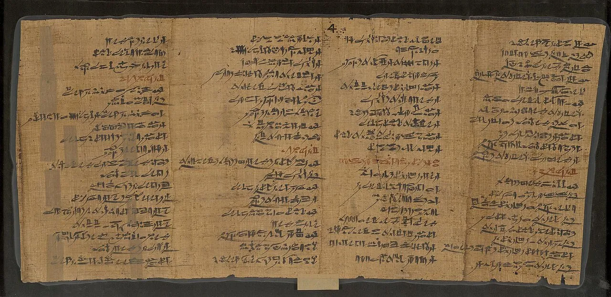

7.6Further archaeological finds
The copper snake. Strong At the copper mines of Timna, in a Midianite tent shrine of the thirteenth or twelfth century BCE, archaeologists found a small copper snake with a gilded head. It sheds light on Bamidbar 21, where Moshe makes a copper snake (nachash nechoshes) in the desert. It also helps explain why Chizkiyahu later had to destroy Moshe’s snake, when the people began burning incense to it (Melachim II 18:4).
The Urim veTumim. Devarim 18 prohibits reading livers, consulting the dead and astrology. Israel retained only one limited, public means of putting a yes-or-no question on behalf of the nation, through the kohen gadol. Cornelis Van Dam compares it with the lot oracles of the Hittites and the two-stone lots of Assyria, and even that device faded once prophecy took its place.
The eglah arufah. Strong Late Bronze treaties between Syrian kings required the town nearest the body of a murdered merchant to pay silver to his king. Devarim 21:1–9 likewise holds the nearest town responsible, but its elders must declare, “Our hands did not shed this blood,” and the land must receive atonement.
By the rivers of Babylon. Strong About two hundred clay tablets from Al-Yahudu, “Judah town,” near Borsippa, have been published by Laurie Pearce and Cornelia Wunsch. They record leases, loans and the Hebrew names of Judean exiles from 572 BCE onward, fifteen years after the First Temple fell. They show the exiles doing what Yirmiyahu told them to do: building houses and planting gardens (Yirmiyahu 29:5).
7.7Chazal on Greece, Rome and Persia
The method did not cease with prophecy, for Chazal answered the narratives and ideas of Greece, Rome and Persia by retelling them.
The architect and the plan. Strong Bereishis Rabbah 1:1 opens with a parable: a king builds a palace from an architect’s plans, and in the same way Hashem looked into the Torah and created the world. Richard Hidary notes that the parable answers Plato’s Timaeus. There a divine craftsman shapes the world by looking at the eternal Forms, Plato’s perfect patterns of all things. In the midrash, the plan Hashem consulted is the Torah.
The first human split in two. Probable Bereishis Rabbah 8:1 and Eruvin 18a teach that the first human was created with two faces and then divided into male and female. In Plato’s Symposium, Aristophanes tells a myth of double humans whom Zeus split in half as a punishment. In the midrash, the division is how the partnership of man and woman begins.
The ring in the fish. Probable In Shabbos 119a, a rich man’s pearl falls into the sea and turns up in a fish purchased by Yosef Mokir Shabbos, who honored Shabbos. Herodotus tells of the tyrant Polycrates, who cast his ring into the sea to avert the envy of the gods and found it in a fish, an omen that his fortune had run out. In the Gemara the fish brings the reward of a mitzvah.
The Seder. Strong The Seder of Mishnah Pesachim 10 adopts the form of the Greek and Roman symposium, with reclining, dipped hors d’oeuvres, fixed cups of wine and questions at the table. The Mishnah turns an aristocratic drinking party into a family night of remembering the Exodus.
The winter festivals of Rome. Strong Avodah Zarah 8a relates that during Adam’s first winter he saw the days shortening and, fearing that the world was reverting to chaos on account of his sin, fasted for eight days. When the days began to lengthen, he understood that “this is the way of the world” and celebrated for eight days, and later nations converted his thanksgiving into the idolatrous festivals of Kalends and Saturnalia. The Gemara thus reclaims the Roman holidays from Saturn and Janus and restores them to Adam.
Two gods in one body. In Sanhedrin 39a, a Persian magus tells Ameimar that the upper half of a person belongs to Hurmiz, the good god, and the lower half to Ahriman, the evil one. Ameimar retorts with a jest about Hurmiz allowing Ahriman’s waste to pass through his territory.
7.8What did not survive, and how this monograph labels it
The surviving tablets represent a small fraction of what was written. By common estimates, about four of every five excavated cuneiform tablets are receipts, ration lists and contracts, and myths survive chiefly where a palace burned hot enough to bake its clay or a school archive escaped plunder. Most of the great mounds of Iraq, Syria and Israel have barely been excavated, and the stories the Canaanites told aloud were seldom written down at all.
The comparisons in this monograph therefore carry labels. Where a tablet survives, the comparison is marked Tablet match. Where the parallel is close and widely accepted, it is marked Strong, and where it is likely but uncertain, Probable. Where a theme ran through the whole region and the Torah opposes it but no single text can be identified, it is marked Suggested, so that the reader can weigh each accordingly.
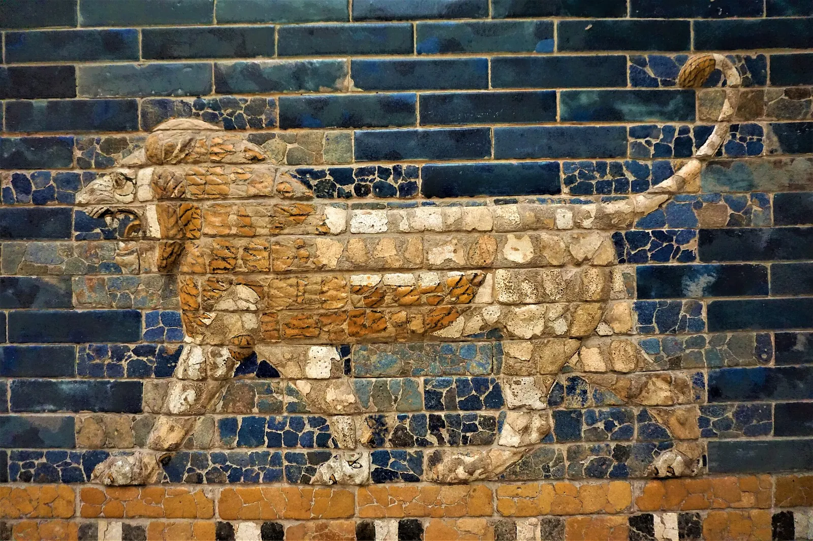
Part VIII
Comparisons that do not hold
Popular comparisons that fail under scrutiny, and the tests on which each one fails.
Lion of Babylon’s Processional Way, Pergamon Museum, Berlin. Photo: Joyofmuseums, CC BY-SA 4.0 · Wikimedia Commons

8.1Overreach in the early comparisons
The comparative study of Tanach and the ancient world acquired a poor reputation in its first century, because its pioneers claimed far more than the tablets warranted.
In December 1872 George Smith of the British Museum read his translation of Tablet XI of Gilgamesh to the Society of Biblical Archaeology in London. A Babylonian flood story complete with an ark and birds caused a sensation, and the search for further parallels soon outran the evidence. Within a few years Smith announced tablets recounting the fall of man and the tower of Bavel, which later Assyriologists showed to concern other matters entirely.
In January 1902 the German Assyriologist Friedrich Delitzsch delivered the first of his Babel und Bibel lectures in Berlin, with Kaiser Wilhelm II in attendance. He asserted that nearly everything central to the Hebrew Bible had been borrowed from Babylon, including monotheism, the creation narrative, Shabbos and the moral law. A school known as Pan-Babylonianism went further, interpreting every figure from Avraham to Shimshon as a disguised Babylonian astral myth. Within two decades, rigorous philologists had dismantled nearly every one of Delitzsch’s principal claims.
In 1962 Samuel Sandmel gave the error an enduring name. In his presidential address to the Society of Biblical Literature, entitled “Parallelomania,” he warned against treating every superficial resemblance between two texts as proof that one borrowed from the other. Neighbors who share a climate and speak related languages will all speak of shepherds, floods, sacrifices and stars. A sound comparison must therefore discharge two obligations with equal rigor, demonstrating the parallels that hold and discarding those that do not.
From Babel und Bibel to careful comparison
A century and a half of scholarship, from claims that the Bible copied Babylon to the tested comparisons used in this monograph. Select a point.
8.2Six comparisons that fail
Popular books and classroom charts continue to repeat comparisons that specialists abandoned long ago, and six of them illustrate the tests a sound comparison must pass.
1. The seven tablets of Enuma Elish and the seven days
Enuma Elish occupies seven tablets, and early scholars matched them to the seven days of Bereishis 1, but the contents of the tablets do not sustain the correspondence. Tablets I through IV narrate the birth of the gods, their conflicts and Marduk’s war with Tiamat; Tablet V establishes the stars and the calendar; Tablet VI creates humanity from the blood of the rebel god Qingu and builds Marduk’s temple; and Tablet VII enumerates Marduk’s fifty names. As Alexander Heidel showed in The Babylonian Genesis (1942), the number of tablets reflects the poem’s length and corresponds to no week of creation.
2. Tehom and Tiamat
Generations of commentators held that tehom, “the deep,” in Bereishis 1:2 was borrowed from Tiamat, the Babylonian sea goddess. David Toshio Tsumura showed that both words come from a common Semitic word for the deep sea. Hebrew tehom cannot come from Akkadian Tiamat, because Hebrew keeps the h sound that Akkadian lost, and it lacks the Akkadian feminine ending -at. The Torah’s choice of an ordinary word for deep water, with no goddess in it, is part of its answer to Babylon, but the word itself is not a loan.
3. Shabbos and shapattu
Delitzsch claimed that Shabbos derived from the Babylonian shapattu, and textbooks still repeat the claim. In Babylonian calendars shapattu was the fifteenth day of the month, the full moon, when priests performed rites to appease the gods. It followed the lunar cycle rather than a seven-day count, and it was never a day of rest for laborers, servants and animals. William Hallo and Nahum Sarna both observed that a fixed seventh day of rest, detached from the moon and extended to every worker, has no known Mesopotamian model.
4. Chava’s rib and the Sumerian “lady of the rib”
In 1945 Samuel Noah Kramer drew attention to the Sumerian myth Enki and Ninhursag, in which Enki suffers a pain in his rib and is healed by a goddess named Nin-ti. Because the Sumerian sign ti means both “rib” and “to make live,” her name means both “lady of the rib” and “lady who makes live,” a pun that exists only in Sumerian. In Hebrew, tzela, “rib,” has nothing in common with chayim or Chavah, and a pun that vanishes outside Sumerian cannot be the source of Bereishis 2.
5. Nuzi “sister” contracts and the Avos
In the 1940s and 1950s, E. A. Speiser and Cyrus Gordon used fifteenth-century tablets from Nuzi in northern Iraq to explain why Avraham called Sarah his sister (Bereishis 12 and 20). They argued that a husband at Nuzi could adopt his wife as a sister to raise her legal standing. In 1975 and 1977, however, Samuel Greengus and Barry Eichler went back through the Nuzi archive. They found that the “sistership” contracts dealt with property, dowries and the guardianship of unmarried women, and that no tablet shows a husband adopting his own wife as a sister.
6. The Mari census and the half-shekel
In 1958 Speiser connected the half-shekel paid at a census (Shemos 30:11–16) with the tebibtum of the Mari letters, which he took to be a purification rite during a military census. Later specialists in the Mari texts, among them Jean-Robert Kupper and Jack Sasson, studied the full records. They found that tebibtum was an administrative review of land, debts and military duties, with no ritual payment to turn away a god’s anger.
Other popular claims fail the same tests. In the 1970s it was announced that tablets from Ebla in Syria named Sedom and Amorah, a claim withdrawn once the signs were collated. Charts that pair each of the ten makkos with a single Egyptian god are largely modern inventions, although Shemos 12:12 does announce a judgment on the gods of Egypt. Gene Tucker showed in 1966 that Avraham’s purchase of Machpelah corresponds as well to first-millennium sale contracts as to Hittite law, and Marjo Korpel and Johannes de Moor’s proposal that an Ugaritic tablet narrates a story of Adam has not gained acceptance. The comparisons in Parts III through VII pass the tests on which these six fail.
Part IX
Questions and answers
Direct answers to the questions traditional readers most often raise, and to the sharpest objections of academic critics.
1. Doesn’t this approach argue with Chazal?
No. Chazal did not treat their aggados as reports of history or science, and they said so. The Gemara records the view that Iyov was a mashal (Bava Basra 15a). It also records Rabbi Yehuda’s statement that the dead whom Yechezkel brought back to life were “in truth, a mashal” (Sanhedrin 92b). Rabbi Ami says that the Torah, the prophets and the Sages all spoke in exaggeration (Chullin 90b). Rebbi admitted that the gentile scholars’ view of the sun was more correct than the view of the Sages of Israel (Pesachim 94b). Rav Sherira Gaon called the midrashic readings of verses “conjecture,” and the Geonim ruled that “we do not rely on aggadah.” The Rambam, his son Rabbeinu Avraham and the Ramban all left room to set aside a literal reading of aggadah, as Part I shows in full.
A countermyth reading of Bereishis 1–11 contradicts no halacha and no principle of faith. Where it sets aside a literal reading of an aggadah about the early chapters, it does what Chazal and the Rishonim allowed. Chazal themselves disagreed about the details of creation. Rav and Shmuel, for example, disagree about how Chava was formed (Eruvin 18a), and neither claimed a tradition from Sinai.
2. If the first listeners knew these myths, why don’t Chazal or the Rishonim ever mention them?
Three reasons account for the silence. The first is that the Torah’s argument prevailed. Once Israel had repudiated Baal and Marduk, no beis medrash had any reason to preserve pagan epics in order to explain a pasuk, and preserving them would have kept idolatry’s narratives alive. Yechezkel Kaufmann observed that by the era of the later prophets Israel no longer contended with the myths at all, only with idols as wood and stone, and by then the background had faded from memory.
The second reason is that the tablets lay buried. Cuneiform writing had died out by about the first century CE. Nineveh fell in 612 BCE, and its royal library remained underground until British excavators reached it around 1850, with George Smith reading the Gilgamesh flood tablet aloud in London in 1872. Ugarit burned around 1185 BCE and was rediscovered in 1928, when a farmer’s plow struck a tomb. Neither the Sages of the Talmud nor the Rishonim of Spain, France or Egypt could have read any of these texts.
The third reason is that Chazal did preserve fragments of the old myths, and they treated them as the Torah had. They told of the Prince of the Sea, named Rahav, whom Hashem slew at creation for refusing to swallow the waters, and of the female Livyasan, slain and preserved for the righteous (Bava Basra 74b). They pictured Pharaoh searching his archive of the gods of every nation without finding Hashem (Shemos Rabbah 5:14). And when the mythological interpretation of the “sons of the gods” resurfaced in Second Temple literature, Rabbi Shimon bar Yochai cursed anyone who rendered the phrase that way (Bereishis Rabbah 26:5). Chazal knew that a mythic world lay behind the text, but they did not possess its documents.
3. If Chazal did not have the tablets, can later readers really know something they did not?
About the ancient world, they can, and Chazal would have expected as much, since knowing more facts about Babylon is not the same as knowing more Torah. Chazal accepted correction on matters of nature from anyone with better evidence, as Rebbi did openly (Pesachim 94b). The Rambam wrote that one should accept the truth from whoever speaks it (introduction to Shemoneh Perakim), and his son wrote that the Sages’ preeminence in Torah does not oblige anyone to defend their statements about medicine and natural science. The tablets are evidence about the world in which the Torah was given, and using them to understand the Torah’s words is what the Rishonim did when they employed the best knowledge of their own day.
4. Isn’t calling Bereishis “myth” the same as calling it false?
No. In this monograph, as in scholarship, a myth is a story about the beginning of things that tells a people what is true about God, the world and themselves. Bereishis 1–11 is a countermyth: it takes the false myths of the ancient world and puts the true message in their place. One God created everything, the sun and the sea are things He made, every human being bears His image, and violence brings judgment. These chapters do not claim to be a geology report. Saying so is no more an attack on the Torah than saying that Yosam’s talking trees are a mashal.
5. Then did Adam, Noach and the Mabul happen?
Traditional readers hold a range of views, and the countermyth reading is compatible with all of them except the claim that the chapters constitute a literal scientific record. Some hold that Adam and Chava were real individuals, perhaps the first human beings endowed with a soul capable of entering a covenant with Hashem. On that view the Mabul preserves the memory of a real regional flood in Mesopotamia, told in the universal idiom ancient writers used for momentous events. Others regard the early chapters as remote memory compressed into stylized genealogies, and still others read them purely as inspired teaching about God, cast as narratives that answer pagan myth. Every one of these positions affirms one God, the dignity of every person and moral judgment, but none can affirm a worldwide flood in 2105 BCE, because the evidence excludes it.
6. Why didn’t the Torah tell the scientific truth?
Because no one could have understood it, and it would not have answered the questions people were asking. An account of nuclear fusion, moving continents and genetics would have meant nothing to farmers and shepherds in the Bronze Age, and it would have stayed baffling through three thousand years of Jewish learning. The Torah, Chazal said, speaks in the language of human beings (Berachos 31b). Nowhere does it act as a science textbook, and it never teaches about germs or the orbits of the planets, even when it discusses disease and the heavens. Its purpose in Bereishis 1–11 is to teach who Hashem is and what human beings are. It did that in a form that people who learned by ear could remember, and that answered the stories they already believed.
7. Doesn’t finding ancient parallels undermine Torah min HaShamayim?
No. If Hashem spoke to a real nation at a real time, His words had to employ the language, legal forms and stories that nation knew. The Rambam made this argument concerning the korbanos: the Torah retained the familiar form of sacrificial worship and directed it to Hashem alone, because people cannot pass from one extreme to its opposite overnight (Moreh Nevuchim III:32). The parallels show how revelation entered history, and they show repeatedly that the Torah transforms what its neighbors believed about God. A book shaped solely by its era would be expected to share its neighbors’ theology, whereas the Torah overturned it.
8. Does any of this change halacha?
No. Halacha rests on the commandments of the Torah, the covenant at Sinai and the interpretive authority of the Sages (Devarim 17:8–11), not on whether the early chapters are a chronicle. Shabbos takes its rhythm from the pattern of Bereishis 1 (Shemos 20:11) and its meaning from the Exodus as well (Devarim 5:15). The seven Noahide laws rest on the image of God (Bereishis 9:6) rather than on the geology of the flood, and the Jewish calendar still counts from creation as Seder Olam fixed it. The Rambam’s historical explanation of the korbanos in the Moreh, moreover, did not soften a single law of sacrifice in his Mishneh Torah.
9. Where does countermyth end and history begin?
At Bereishis 12, along a gradual slope rather than at an abrupt break. The first eleven chapters encompass the entire earth, include a talking serpent and a tree of life, and range across a vast Mesopotamian landscape from Eden to Shinar. At chapter 12 the focus narrows to a single family on the real roads of Canaan, between Shechem, Beis El, Chevron and Be’er Sheva. That family contends with famine, wells, land purchases and local kings, and the lifespans keep declining from Avraham’s 175 to Moshe’s 120. The Exodus and Sinai are presented as public events witnessed by an entire nation (Devarim 4:32–35), and the Torah’s covenant rests on them rather than on the opening chapters. Part V shows that even this history is told in the mythic idiom of its time, as every people narrates the events that define it.
10. If the Torah answers Babylonian myths, doesn’t that prove it was written in the Babylonian exile?
No. Babylonian literature was being copied in Canaan and Egypt in the fourteenth century BCE, Gilgamesh at Megiddo, Atrahasis and a flood narrative at Ugarit, and Adapa at Amarna. The four-part pattern of Bereishis 1–11 was a second-millennium form that Mesopotamian writers had abandoned by the first. Nearly all the myths the Torah answers were composed before 1200 BCE, and several, such as the Emar text that sets the human lifespan at 120 years, come from a world that ended around 1185 BCE. And when Tanach does contend with Babylon in the exile, in Yeshayahu 44–46 and Yirmiyahu 50–51, it names Bel, Nevo and Merodach and mocks their statues, as Bereishis never does. Part IV presents the evidence.
11. What about countermyths that do not fit the traditional dating?
There are a few, and each admits an answer that requires no denial of fact.
Enuma Elish was probably composed around 1100 BCE, later than 1313 BCE, but the comparisons that invoke it rest on older themes. The storm god’s war with the Sea appears in a Mari letter of about 1770 BCE and in the Baal poems of Ugarit. The notion of a god ordering the calendar and the stars is older than any single epic, so Bereishis never depends on Enuma Elish in particular.
The Shabaka Stone was carved around 710 BCE and may preserve a late text. It is cited here only to show that creation by speech was an Egyptian idea, one already present in the Pyramid Texts of the Old Kingdom.
The birth legend of Sargon, in which a baby is placed in a basket sealed with bitumen and set adrift on a river, survives in Assyrian copies of the seventh century BCE and may have been composed in the eighth. The story of an abandoned child who grows up to lead is old and widespread, and the differences are large. Moshe has named parents, and his own mother nurses him. No goddess adopts him, and he never becomes king. Whatever the relation between the stories, it does not date the Torah.
The curses of Devarim 28 resemble those of Esarhaddon’s treaty of 672 BCE. Curse lists closed legal and treaty texts from Hammurabi onward, the formula circulated in more than one form (compare Vayikra 26:19), and the structure of Devarim follows the Late Bronze treaties. Part IV gives the details.
Later names such as “Ur of the Kasdim” and the city of Dan appear to be updates for later readers. The tradition itself allows that Yehoshua wrote the final verses of the Torah (Bava Basra 15a), and Ibn Ezra hints that a few phrases were added from a later vantage point. A name updated for later readers does not change the age of the story. Part IV also answers the questions raised about camels and Philistines in Bereishis.
Persian dualism, which Yeshayahu 45 answers, and the imagery of Daniel 7 appear in books of Nevi’im and Kesuvim. The tradition itself dates those books centuries after the Torah, so a later book answering a later idea fits the traditional dating.
12. Isn’t this just what the academic critics and the Reform movement say?
No. It is close to the opposite. The critics use the ancient parallels to argue that the Torah is a human anthology, stitched together from several sources and written late, mostly in or after the exile. This monograph uses the same parallels to show four things: the Torah is early, its supposed sources are deliberate answers to different myths, its flood story is one story, and its message overturns its neighbors’ beliefs at every point. The only disagreement with a literal reading is about the kind of writing found in Bereishis 1–11. On the date, the unity and the divine origin of the Torah, the countermyth reading stands with the tradition.
13. Doesn’t the Kuzari argument already settle the question?
It settles a different question. Rabbi Yehuda HaLevi argued that an entire nation could not have been persuaded that its grandparents stood at Sinai if they had not. That gives strong reason to believe that the memory of the Exodus and Sinai is very old and was not invented in a single generation. A nation, however, can remember only what it lived through, and the nation was not present at the creation of the world or at the flood. The Kuzari argument therefore supports the tradition of Sinai, and it has nothing to say about the age of the universe.
14. Rav Avigdor Miller was a great tzaddik and teacher. How can his science be called wrong?
Greatness in Torah and avodah does not make a person right about geology, and the tradition says so openly. Rabbeinu Avraham ben HaRambam wrote that the Sages’ greatness in Torah does not oblige anyone to defend their statements about medicine, physics and astronomy. Rebbi preferred the gentile scholars’ view of the sun to that of his own colleagues (Pesachim 94b). Rav Miller’s arguments about rocks and fossils were not Torah. They were the arguments of George McCready Price, a Seventh-day Adventist teacher with no training in geology, and the evidence had refuted them decades earlier. Respect for a teacher does not oblige anyone to repeat his mistakes. Repeating them does real harm: students who are taught that emunah depends on false science may decide, when they learn the truth, that emunah is false too.
15. Does this conflict with the Rambam’s Thirteen Principles?
No. The principles require belief that the Torah is from heaven (the eighth principle) and that it will never be replaced (the ninth). None of the thirteen mentions the age of the universe or requires a literal reading of the creation chapters. The Rambam himself wrote that if the eternity of the world had been proven, he would have explained the creation verses to fit it (Moreh Nevuchim II:25). For him, the age of the world was a question for evidence to decide.
16. If the ancient Israelites believed these stories, how could they hear them as countermyth?
An Israelite leaving Egypt did not sort stories into the modern categories of news and fiction, but he knew the rival versions told across the region. When he heard that the flood came because of chamas, and not because noisy humans kept Enlil awake, he grasped the lesson about God at once. He needed no theory of literature to notice the reversal. A countermyth is also different from an allegory, in which every tree and river stands for an idea. A countermyth keeps a familiar story from the surrounding culture and rewrites what it says about God and humanity.
17. How do peshat, midrash and comparison with ancient texts fit together?
Each addresses a different question. Comparison with ancient texts reconstructs the world in which the Torah was given, so that a modern reader can hear what its words meant to their first audience. Peshat, as the Rashbam, Ibn Ezra and the Ramban practiced it, reads the Hebrew on its own terms within Tanach, and ancient background serves peshat as a lens and a control, never as an authority over the text. Midrash draws out law, ethics and connections across Tanach for Jewish life. Recognizing that Gilgamesh lies behind the Mabul no more erases a lesson of Bereishis Rabbah than the Rashbam’s commentary erases Rashi’s.
18. How can anyone tell a real parallel from a mirage?
Four tests suffice. The first is contact: the ancient text must come from a time and place with which Israel could actually have been in touch. The second is precision: shared words must obey the sound rules of the languages involved, which is why the derivation of tehom from Tiamat and the Sumerian pun on Nin-ti fail. Shared plots must agree in specific sequence and detail, as the flood narratives do. The third is a consistent reversal, for a true countermyth alters its source along a coherent line, replacing rival gods with one God and arbitrary wrath with moral judgment. The fourth is a reliable reading: the translation of the ancient text must command assent among Assyriologists and Egyptologists of every background and cannot rest on a single conjecture about a broken tablet. Part VIII examines six well-known comparisons that fail these tests.
Appendix
The myths Tanach names
A reference list of the ancient myths, gods and mythic themes that Tanach mentions, with dates, and of the wisdom literature it answers.
Much of the countermyth in Bereishis is tacit, since the Torah answers the myths without naming them. Elsewhere in Tanach the mythic world is named outright, as the prophets, Tehillim and Iyov invoke sea monsters, rival gods, demons, the royal dead and the mountain of the gods, usually to show them powerless before Hashem. The tables below assemble those references. The first catalogues figures and themes from the mythology of Israel’s neighbors, and the second sets the wisdom and poetic books beside the ancient literature they answer or whose forms they share.
Appendix A: the ancient myths and gods that Tanach names
Forty figures, places and themes from the myths of Israel’s neighbors that Tanach mentions by name or by a title that identifies them, with their ancient sources and dates and what Tanach does with each. Use the filter to search.
| Name | Where in Tanach | Ancient source and date | What Tanach does with it |
|---|---|---|---|
| Livyasan | Yeshayahu 27:1; Tehillim 74:14; 104:26; Iyov 3:8; 40:25–41:26 | Litan, the seven-headed sea serpent struck by Baal (Ugarit, KTU 1.5 and 1.3; c. 1250 BCE) | Created by Hashem, made to play in the sea, and slated for judgment “on that day.” |
| Tanin, the dragon | Bereishis 1:21; Shemos 7:9–12; Yeshayahu 51:9; Yechezkel 29:3; 32:2; Yirmiyahu 51:34; Tehillim 74:13; Iyov 7:12 | Tunnanu, the dragon muzzled by Anat and Baal (Ugarit, 13th c. BCE) | A sea creature Hashem created and blessed; a name for Pharaoh and for Babylon. |
| Rahav | Yeshayahu 30:7; 51:9; Tehillim 87:4; 89:11; Iyov 9:13; 26:12 | A chaos monster of the sea with “helpers,” like Tiamat and her monsters in Enuma Elish (c. 1100 BCE); the name itself is known only from Tanach and Chazal (Bava Basra 74b) | Crushed by Hashem; a mocking name for Egypt. |
| Sea and River | Tehillim 24:2; 93:3–4; 114:3–5; Chavakuk 3:8; Iyov 7:12; 9:8; 38:8–11 | Prince Sea and Judge River, Baal’s enemy (Ugarit, KTU 1.2); the storm god’s war with Sea (Mari letter, c. 1770 BCE) | Founded upon, given a boundary, made to flee; Chavakuk asks whether Hashem’s anger was really against the rivers. |
| The fleeing serpent | Yeshayahu 27:1; Iyov 26:13 | btn brh, a title of Litan (Ugarit, KTU 1.5) | Pierced by Hashem’s hand. |
| Mot, Death | Yeshayahu 25:8; 28:15; Hoshea 13:14; Chavakuk 2:5; Yirmiyahu 9:20; Shir HaShirim 8:6 | Mot, the god whose mouth reaches from earth to sky and who swallows Baal (Ugarit, KTU 1.4–1.6) | Swallowed by Hashem forever; a “covenant with death” mocked. |
| Reshef | Devarim 32:24; Chavakuk 3:5; Tehillim 76:4; 78:48; Iyov 5:7; Shir HaShirim 8:6 | Plague god of Ugarit and Egypt in the Late Bronze Age; “Reshef of the arrow” in a later Phoenician inscription | An attendant behind Hashem; flames; broken arrows. |
| Dever and Ketev | Devarim 32:24; Hoshea 13:14; Chavakuk 3:5; Tehillim 91:6 | Plague powers named in Ugaritic and older Syrian texts | Powerless against one who trusts in Hashem. |
| Lilis | Yeshayahu 34:14 | Lilitu demons of Mesopotamian incantations; a demon-maiden in the huluppu tree (Old Babylonian) | A creature of the ruins of Edom. |
| Se’irim | Vayikra 17:7; Yeshayahu 13:21; 34:14 | Goat-demons of the wilderness | Offerings to them are forbidden. |
| Azazel | Vayikra 16:8–10 | Hittite rites that drove a plague-carrying animal out of the camp (Ashella and Uhhamuwa rituals, 14th–13th c. BCE) | The goat carries Israel’s sins away; nothing is offered to a demon. |
| Shedim | Devarim 32:17; Tehillim 106:37 | Akkadian shedu, protective spirits | “Not gods.” |
| Rephaim | Yeshayahu 14:9; 26:14, 19; Tehillim 88:11; Iyov 26:5; Mishlei 2:18; 9:18 | Rpum, the deified royal dead honored with feasts at Ugarit (KTU 1.20–1.22, 1.161) | Powerless shades who cannot rise. |
| Nefilim and the heroes of old | Bereishis 6:4; Bamidbar 13:33; Yechezkel 32:27 | Demigod heroes such as Gilgamesh, “two-thirds god” (Old Babylonian and later) | Flesh, limited to 120 years; fallen heroes in Sheol. |
| The sons of the gods and the divine council | Bereishis 6:2; Melachim I 22:19; Iyov 1:6; 2:1; 38:7; Tehillim 29:1; 82; 89:6–8 | The assembly of El and the “sons of El” (Ugarit) | Servants at Hashem’s court, judged for injustice. |
| Heilel ben Shachar | Yeshayahu 14:12–15 | Athtar, who climbed Baal’s throne and could not fill it; Shachar, the god Dawn (Ugarit, KTU 1.6, 1.23) | The fall of the tyrant king of Babylon. |
| The mount of assembly, Tzafon | Yeshayahu 14:13; Tehillim 48:3; 89:13; Iyov 26:7 | Mount Tzafon, seat of Baal’s throne (Ugarit) | Created by Hashem; its title given to Tziyon. |
| The garden of God on the holy mountain | Yechezkel 28:12–16; 31:8–9; Yeshayahu 51:3 | Dilmun, the pure land (Enki and Ninhursag, Old Babylonian) | A cherub cast out for pride; the future comfort of Tziyon. |
| Keruvim | Bereishis 3:24; Shemos 25:18–22; Yechezkel 1, 10; Tehillim 18:11 | Karibu spirits and winged sphinx thrones of Canaan (Megiddo ivories, Late Bronze Age) | Guardians of an empty throne. |
| Behemoth | Iyov 40:15–24 | Possibly the monstrous “calf of El” that Anat boasts of destroying (Ugarit); uncertain | “The first of the works of God.” |
| Orion, the Pleiades, and the constellations | Amos 5:8; Iyov 9:9; 38:31–32 | Babylonian star lore (the MUL.APIN compendium, compiled by c. 1000 BCE from older observations); Orion as a bound giant | Hashem made them and holds their bonds. |
| Sun and moon as powers | Devarim 4:19; 17:3; Melachim II 23:5, 11; Iyov 31:26–27; Tehillim 121:6 | Shamash and Yarikh or Sin, the sun and moon gods | Their worship forbidden; their “bite” powerless. |
| The winged sun | Malachi 3:20 | The winged sun disk of Egypt, Assyria, and Persia | “A sun of righteousness, with healing in its wings.” |
| The Queen of Heaven | Yirmiyahu 7:18; 44:17–25 | Ishtar or Astarte, honored with kamanu cakes | Her cakes condemned. |
| Tammuz | Yechezkel 8:14 | Dumuzi, the shepherd god mourned each summer (Sumerian, third millennium onward) | Weeping for him in the Temple is an abomination. |
| Baal, Asherah, and Ashtoreth | Shoftim 2–6; Melachim I 18; Melachim II 23; and many more | Baal, Athirat, and Athtart (Ugarit) | The rival gods exposed and their shrines destroyed. |
| Baal Zevuv | Melachim II 1 | Baal the Prince, zbl (Ugarit) | “Lord of flies.” |
| Dagon | Shoftim 16:23; Shmuel I 5 | Dagan, god of grain (Ebla, Mari, Ugarit) | His statue falls before the Aron. |
| Kemosh | Bamidbar 21:29; Melachim I 11:7; Melachim II 3; Yirmiyahu 48 | Kemosh, god of Moab (Mesha Stele, c. 840 BCE) | His people go into captivity. |
| Molech | Vayikra 18:21; 20:2–5; Melachim II 23:10 | A god or a type of child offering, debated (Phoenician mlk) | Forbidden absolutely. |
| Bel, Nevo, and Merodach | Yeshayahu 46:1; Yirmiyahu 50:2; 51:44 | Bel-Marduk and Nabu of Babylon (first millennium) | Carried away as cargo; put to shame. |
| The gods of the deportees | Melachim II 17:30–31; 19:37 | Nergal, Nisroch, Adrammelech, Anammelech, Ashima, Nivchaz, Tartak, Succos-Benos | Gods of the peoples Assyria resettled in Shomron. |
| Sakkut and Kiyun | Amos 5:26 | Babylonian star gods, Kayamanu being Saturn | Images carried off into exile. |
| Gad and Meni | Yeshayahu 65:11 | Gods of luck and fate | A table set for Fortune. |
| Teraphim | Bereishis 31:19–35; Shoftim 17–18; Shmuel I 19:13 | Household gods | Stolen, sat on, and used to fool a king’s men. |
| Ov and yidoni | Vayikra 19:31; Devarim 18:11; Shmuel I 28 | The Hittite api and Ugaritic ib, a ritual pit for calling up the dead | Consulting the dead is forbidden. |
| Nechushtan | Bamidbar 21:8–9; Melachim II 18:4 | The copper snake of the Midianite shrine at Timna (13th–12th c. BCE) | Smashed by Chizkiyahu when it was worshiped. |
| The bow in the cloud | Bereishis 9:13; Chavakuk 3:9 | Marduk’s bow set among the stars (Enuma Elish VI) | Hung up as a sign of peace. |
| Wisdom at creation | Mishlei 8:22–31 | Maat, Egyptian goddess of order, present at creation | The first of Hashem’s works, not a goddess. |
| The tree of life | Bereishis 2:9; 3:22–24; Mishlei 3:18; 11:30 | The plant of life (Gilgamesh XI); the bread and water of life (Adapa, 14th c. BCE) | Guarded after the sin; the Torah itself is a tree of life to those who hold it. |
Appendix B · Wisdom and Poetry Beside Their Ancient Counterparts
The poetic and wisdom books of Tanach, the ancient works they answer or share forms with, and the dates of those works.
| Tanach | Ancient counterpart | Date | What changes |
|---|---|---|---|
| Mishlei 22:17–24:22 | Instruction of Amenemope (Egypt) | End of the second millennium BCE | Shared sayings and thirty sections; set under “the fear of Hashem.” |
| Mishlei 8 | Maat (Egypt) | Old Kingdom onward | Wisdom as Hashem’s first creation. |
| Mishlei 30 (numerical sayings) | Ugaritic and Aramaic numerical sayings (Ahiqar, 7th–6th c. BCE) | Second and first millennium | A shared teaching form. |
| Iyov | A Man and His God (Sumerian); Ludlul Bel Nemeqi; the sufferer’s hymn from Ugarit; Babylonian Theodicy | Old Babylonian; late second millennium; Late Bronze; c. 1000 BCE | The sufferer refuses false answers and is answered by Hashem. |
| Koheles 9:7–9 | Siduri’s advice (Old Babylonian Gilgamesh); Egyptian Harper’s Songs | c. 1800 BCE; Middle and New Kingdom | Joy in life, with judgment added. |
| Shir HaShirim | Egyptian love songs (Papyrus Chester Beatty I); Sumerian love songs of Inanna and Dumuzi | c. 1150 BCE; Ur III and Old Babylonian | The sacred marriage of gods becomes the love of Hashem and Israel. |
| Eichah | Lament for Sumer and Ur and other city laments | Old Babylonian | The arbitrary decree replaced by confession. |
| Tehillim 104 | Great Hymn to the Aten (Amarna) | c. 1340 BCE | The sun as a servant that knows its setting. |
| Tehillim 19 | Hymns to Shamash, judge of the world | Second and first millennium | The Torah, not the sun, is the perfect judge. |
| Tehillim 29; 93; 74; 89 | Baal poetry of Ugarit | c. 1250 BCE copies | Storm and sea imagery given to Hashem (Tehillim 29 as an adapted hymn is one scholar’s proposal). |
| Daniel 7 | Ugaritic El and Baal imagery | Late Bronze copies | Sea beasts become empires; the kingdom goes to the holy ones. |
Reference
Case index, objects and sources
Search every comparison in this work, see every object photographed for it at full size, and check the sources.
Index of comparisons
All the cases by region, strength and book of Tanach. Select a bar or use the filters.
Cases by Scholarly Standing (Click to Filter)
Cases by Cultural Sphere (Click to Filter)
The objects in this monograph
Every photograph shows a real object or place. Select one to see it at full size.
 Supernova 1987A, photographed by the Hubble Space Telescope.Enuma Elish, the Babylonian creation epic.The Shabaka Stone.A tablet of the Epic of Atrahasis.The Weld-Blundell Prism (detail).Letter from Biridiya, king of Megiddo, to Pharaoh.The Gezer Calendar.The weighing of the heart, from the Book of the Dead of Ani.Silver amulet from Ketef Hinnom (KH2).Clay model of a sheep’s liver.The Laws of Ur-Nammu.Assyrian archers in the Lachish reliefs.The Cyrus Cylinder.A tablet of the Baal Cycle from Ugarit.The Instruction of Amenemope.The Flood Tablet: Tablet XI of the Epic of Gilgamesh.The Sumerian Flood Story.The Ziggurat of Ur.Model of Etemenanki, the ziggurat of Babylon.The Mesha Stele.The Taylor Prism.Hutton’s Unconformity, Siccar Point, Scotland.Crater Lake, Oregon.The Babylonian Map of the World.Letter from Abdi-Tirshi, king of Hazor, to Pharaoh.The Merneptah Stele (detail).The stele of Hammurabi’s laws.The Tel Dan Stele.A lion from the Processional Way of Babylon.
Supernova 1987A, photographed by the Hubble Space Telescope.Enuma Elish, the Babylonian creation epic.The Shabaka Stone.A tablet of the Epic of Atrahasis.The Weld-Blundell Prism (detail).Letter from Biridiya, king of Megiddo, to Pharaoh.The Gezer Calendar.The weighing of the heart, from the Book of the Dead of Ani.Silver amulet from Ketef Hinnom (KH2).Clay model of a sheep’s liver.The Laws of Ur-Nammu.Assyrian archers in the Lachish reliefs.The Cyrus Cylinder.A tablet of the Baal Cycle from Ugarit.The Instruction of Amenemope.The Flood Tablet: Tablet XI of the Epic of Gilgamesh.The Sumerian Flood Story.The Ziggurat of Ur.Model of Etemenanki, the ziggurat of Babylon.The Mesha Stele.The Taylor Prism.Hutton’s Unconformity, Siccar Point, Scotland.Crater Lake, Oregon.The Babylonian Map of the World.Letter from Abdi-Tirshi, king of Hazor, to Pharaoh.The Merneptah Stele (detail).The stele of Hammurabi’s laws.The Tel Dan Stele.A lion from the Processional Way of Babylon.Sources
Every ancient text discussed above can be checked in the published translations and studies below.
Ancient texts in translation. Andrew George, The Epic of Gilgamesh (Penguin, 1999). W. G. Lambert and A. R. Millard, Atra-hasis: The Babylonian Story of the Flood (Oxford, 1969). W. G. Lambert, Babylonian Creation Myths (Eisenbrauns, 2013). Miriam Lichtheim, Ancient Egyptian Literature, vol. 1 (California, 1973) and vol. 2 (1976). Erik Hornung, Der ägyptische Mythos von der Himmelskuh (1982). Simon Parker, ed., Ugaritic Narrative Poetry (SBL, 1997). Martha Roth, Law Collections from Mesopotamia and Asia Minor (SBL, 1995). Itamar Singer, Hittite Prayers (SBL, 2002). Harry A. Hoffner, Jr., Hittite Myths (SBL, 1998). Thorkild Jacobsen, The Sumerian King List (Chicago, 1939). Electronic Text Corpus of Sumerian Literature (Oxford). Irving Finkel, ed., The Cyrus Cylinder: The King of Persia’s Proclamation from Ancient Babylon (I.B. Tauris, 2013).
On Bereishis 1–11. Umberto Cassuto, A Commentary on the Book of Genesis (Magnes, 1961–1964). Nahum Sarna, Understanding Genesis (Schocken, 1966). Yechezkel Kaufmann, The Religion of Israel (Chicago, 1960). Tikva Frymer-Kensky, “The Atrahasis Epic and Its Significance for Our Understanding of Genesis 1–9,” Biblical Archaeologist 40 (1977). Gordon Wenham, “The Coherence of the Flood Narrative,” Vetus Testamentum 28 (1978). David Tsumura, Creation and Destruction (Eisenbrauns, 2005). John Day, God’s Conflict with the Dragon and the Sea (Cambridge, 1985). Guy Darshan, “The Calendrical Framework of the Priestly Flood Story in Light of a New Akkadian Text from Ugarit (RS 94.2953),” JAOS 136 (2016). E. A. Speiser, Genesis (Anchor Bible, 1964). Elizabeth Wayland Barber and Paul Barber, When They Severed Earth from Sky (Princeton, 2004). Judy Klitsner, Subversive Sequels in the Bible (Maggid, 2011). Richard Elliott Friedman, The Bible with Sources Revealed (HarperOne, 2003). Essays on TheTorah.com by Shawna Dolansky, Benjamin Sommer, Shalom Holtz, Takayoshi Oshima, and John Day.
On the rest of Tanach, Anatolia, Levant, and Persia. Joshua Berman, Created Equal (Oxford, 2008), Inconsistency in the Torah (Oxford, 2017), and Ani Maamin (Maggid, 2020). Kenneth Kitchen, On the Reliability of the Old Testament (Eerdmans, 2003). James Hoffmeier, Israel in Egypt (Oxford, 1997). George Mendenhall, “Covenant Forms in Israelite Tradition,” Biblical Archaeologist 17 (1954). Moshe Weinfeld, Deuteronomy and the Deuteronomic School (Oxford, 1972). Laura Quick, Deuteronomy 28 and the Aramaic Curse Tradition (Oxford, 2018). Moshe Greenberg, “Some Postulates of Biblical Criminal Law” (Magnes, 1960). Jacob Milgrom, Leviticus 1–16 (Anchor Bible, 1991). David P. Wright, The Disposal of Impurity (Scholars Press, 1987). Michael Homan, To Your Tents, O Israel (Brill, 2002). Gabriel Barkay et al., “The Amulets from Ketef Hinnom,” BASOR 334 (2004). Jo Ann Hackett, The Balaam Text from Deir Alla (Scholars Press, 1984). Joseph Naveh, “A Hebrew Letter from the Seventh Century B.C.,” IEJ 10 (1960). Ze’ev Meshel, Kuntillet ‘Ajrud (Israel Exploration Society, 2012). H. L. Ginsberg, “A Phoenician Hymn in the Psalter” (1935). Gene Tucker, “The Legal Background of Genesis 23,” JBL 85 (1966). E. A. Speiser, “Census and Ritual Expiation in Mari and Israel,” BASOR 149 (1958). Isaac Mendelsohn, BASOR 143 (1956). J. J. Finkelstein, JAOS 88 (1968). Nahum Sarna, “Psalm XIX and the Near Eastern Sun-God Literature” (1967). Michael Fishbane, Biblical Interpretation in Ancient Israel (Oxford, 1985). Amar Annus, JSP 19 (2010).
Jewish sources and rabbinic studies. Rambam, Moreh Nevuchim II:25, II:29–30, II:47, III:32, III:46. Ramban on Bereishis 5:4. Bereishis Rabbah 1:1, 8:1, 26:5. Shemos Rabbah 5:14, 5:18, 5:22. Bavli Shabbos 119a, Bava Kamma 83b, Sanhedrin 39a, Avodah Zarah 8a, Kiddushin 22b. Mishnah Avos 5:2, 5:6; Sanhedrin 4:5; Pesachim 10. R. Avraham Yitzchak Kook, Igros HaReiyah I:134. R. Amnon Bazak, To This Very Day (Maggid, 2020). The Koren Tanakh of the Land of Israel (Koren). R. Yisroel Cohen, Nephilim: Giants and Fallen Angels (Mosaica Press). Richard Hidary, Rabbis and Classical Rhetoric (Cambridge, 2017). Baruch Bokser, The Origins of the Seder (California, 1984). R. Mark Glass, “Why We Misread the Opening of Bereishit.”
Sources added in this edition
Torah and science in the Orthodox world. Rav Avigdor Miller, recorded questions and answers transcribed by Toras Avigdor (torasavigdor.org), including “Million-Year-Old Fossils” (1975), “Fossils from the Great Flood” (October 1988), and “How Old Is the World” (Tape E-238, July 2000); Rejoice O Youth (1962). George McCready Price, Illogical Geology: The Weakest Point in the Evolution Theory (1906) and The New Geology (1923). Martin Gardner, Fads and Fallacies in the Name of Science (1952; Dover, 1957), ch. 11. Ronald L. Numbers, The Creationists (expanded ed., Harvard, 2006). John C. Whitcomb and Henry M. Morris, The Genesis Flood (1961). Answers in Genesis, Statement of Faith. Rachel S. A. Pear, “‘And It Was Good’? American Modern Orthodox Engagement with Darwinism from 1925 to the Present” (Ph.D. diss., Bar-Ilan University, 2012). Natan Slifkin, The Challenge of Creation (2006), and the documents collected at zootorah.com. R. Yisrael Lipschitz, Drush Ohr HaChaim, in Tiferes Yisrael on Nezikin, translated by Aryeh Kaplan. Aryeh Kaplan, Immortality, Resurrection, and the Age of the Universe (1993). Philip Henry Gosse, Omphalos (1857).
The science. A. Svensson et al., “A 60,000 Year Greenland Stratigraphic Ice Core Chronology,” Climate of the Past 4 (2008). P. Reimer et al., “The IntCal20 Northern Hemisphere Radiocarbon Age Calibration Curve,” Radiocarbon 62 (2020). C. Bronk Ramsey et al., “A Complete Terrestrial Radiocarbon Record for 11.2 to 52.8 kyr B.P.,” Science 338 (2012).
Myth and memory. Elizabeth Wayland Barber and Paul T. Barber, When They Severed Earth from Sky (Princeton, 2004). Patrick Nunn and Nicholas Reid, “Aboriginal Memories of Inundation of the Australian Coast Dating from More than 7000 Years Ago,” Australian Geographer 47 (2016). Edward A. Pollard, The Lost Cause (1866). Alexander H. Stephens, “Cornerstone Speech” (1861). Abraham Lincoln to Horace Greeley, August 22, 1862. Frederick Douglass, Decoration Day address at Arlington (1878).
Bereishis 1–11 and dating. Kenneth A. Kitchen, On the Reliability of the Old Testament (Eerdmans, 2003). Gary A. Rendsburg, “The Biblical Flood Story in the Light of the Gilgameš Flood Account,” in J. Azize and N. Weeks, eds., Gilgameš and the World of Assyria (Peeters, 2007), 115–127. Gordon J. Wenham, “The Coherence of the Flood Narrative,” Vetus Testamentum 28 (1978): 336–348. Jacob Klein, “The ‘Bane’ of Humanity: A Lifespan of One Hundred Twenty Years,” Acta Sumerologica 12 (1990). Yoram Cohen, Wisdom from the Late Bronze Age (SBL, 2013). Guy Darshan, “The Calendrical Framework of the Priestly Flood Story in Light of a New Akkadian Text from Ugarit (RS 94.2953),” JAOS 136 (2016): 507–514. Jean-Marie Durand, “Le mythologème du combat entre le dieu de l’orage et la mer en Mésopotamie,” MARI 7 (1993): 41–61. Irving Finkel, The Ark Before Noah (2014). Anne D. Kilmer, “The Mesopotamian Concept of Overpopulation and Its Solution as Reflected in the Mythology,” Orientalia 41 (1972). Tikva Frymer-Kensky, “The Atrahasis Epic and Its Significance for Our Understanding of Genesis 1–9,” Biblical Archaeologist 40 (1977). Ronald Hendel, “The Flame of the Whirling Sword,” JBL 104 (1985). William W. Hallo, “Antediluvian Cities,” JCS 23 (1970). E. A. Speiser, “In Search of Nimrod” (1958). Richard Elliott Friedman, Who Wrote the Bible? (1987). Yechezkel Kaufmann, The Religion of Israel, trans. Moshe Greenberg (1960). Avi Hurvitz, A Linguistic Study of the Relationship between the Priestly Source and the Book of Ezekiel (1982). Moshe Weinfeld, Deuteronomy and the Deuteronomic School (1972).
Law. Martha T. Roth, Law Collections from Mesopotamia and Asia Minor (SBL, 1995). Harry A. Hoffner, Jr., The Laws of the Hittites (Brill, 1997). Reuven Yaron, The Laws of Eshnunna (2nd ed., 1988). Joshua Berman, Inconsistency in the Torah (Oxford, 2017) and Created Equal (Oxford, 2008). Moshe Greenberg, “Some Postulates of Biblical Criminal Law” (1960). J. J. Finkelstein, The Ox That Gored (1981). Tikva Frymer-Kensky, “The Strange Case of the Suspected Sotah,” Vetus Testamentum 34 (1984).
Parts IV to VIII. Tova Ganzel, Yehuda Brandes and Chayuta Deutsch, eds., The Believer and the Modern Study of the Bible (Academic Studies Press, 2019; open access through OAPEN), especially Yoshi Fargeon’s annotated anthology of rabbinic sources, “Changes Made in the Torah after Moses’ Days.” Moshe Feinstein, Igros Moshe, Yoreh De’ah III:114–115. Israel Knohl, The Sanctuary of Silence (Fortress, 1995). Cornelis Van Dam, The Urim and Thummim (Eisenbrauns, 1997). Laurie E. Pearce and Cornelia Wunsch, Documents of Judean Exiles and West Semites in Babylonia (CDL, 2014). Lawrence E. Stager, “Jerusalem and the Garden of Eden,” Eretz-Israel 26 (1999). Alexander Heidel, The Babylonian Genesis (Chicago, 1942). Samuel Greengus, “Sisterhood Adoption at Nuzi and the ‘Wife-Sister’ in Genesis,” HUCA 46 (1975). Barry L. Eichler, “Another Look at the Nuzi Sistership Contracts,” in Essays on the Ancient Near East in Memory of J. J. Finkelstein (1977). Samuel Sandmel, “Parallelomania,” JBL 81 (1962). A. Goetze and S. Levy, “Fragment of the Gilgamesh Epic from Megiddo,” ‘Atiqot 2 (1959). Shlomo Izre’el, Adapa and the South Wind (Eisenbrauns, 2001). Wayne Horowitz, Takayoshi Oshima and Seth Sanders, Cuneiform in Canaan (2nd ed., 2018).
Tehillim and the Kesuvim. H. L. Ginsberg on Tehillim 29 (1935). Nahum Sarna, “Psalm XIX and the Near Eastern Sun-God Literature” (1967). Christa Kayatz, Studien zu Proverbien 1–9 (1966). Judy Klitsner, Subversive Sequels in the Bible (2009).
Photo credits
All photographs come from Wikimedia Commons under the licenses shown. Licenses marked CC BY-SA allow reuse with credit and under the same license.
- A section of the GISP2 ice core from Greenland. Public domain · Wikimedia Commons. File: GISP2 1855m ice core layers.png
- Supernova 1987A, photographed by the Hubble Space Telescope. Public domain · Wikimedia Commons. File: Supernova 1987A (opo9017a).jpg
- Enuma Elish, the Babylonian creation epic. Photo: Zunkir, CC BY-SA 4.0 · Wikimedia Commons. File: Enuma Elish K.3473.jpg
- The Shabaka Stone. Photo: Sanjay ach, CC BY-SA 4.0 · Wikimedia Commons. File: Shabaka Stone at the British Museum.jpg
- A tablet of the Epic of Atrahasis. Photo: SpeakingArch, CC BY-SA 4.0 · Wikimedia Commons. File: Babylon Story of the Flood, Tablet containing the Epic of Atrahasis, 1635 BCE, probably from Sipar. Currently at the British Museum.jpg
- The Weld-Blundell Prism (detail). Photo: Gts-tg, CC BY-SA 4.0 · Wikimedia Commons. File: Weld-Blundell Prism, initial paragraph about rule of Alulim in Eridu for 28800 years.jpg
- Letter from Biridiya, king of Megiddo, to Pharaoh. Photo: Osama Shukir Muhammed Amin FRCP(Glasg), CC BY-SA 4.0 · Wikimedia Commons. File: Amarna letters. Letter from Biridiya, King of Megiddo, to the Egyptian Pharaoh Amenhotep III or his son Akhenaten. 14th century BCE. From Tell el-Amarna, Egypt. British Museum.jpg
- The Gezer Calendar. Photo: Osama Shukir Muhammed Amin FRCP(Glasg), CC BY-SA 4.0 · Wikimedia Commons. File: The Gezer Calendar tablet, early iron age, 10th century BCE, Museum of Archaeology, Istanbul, Turkey.jpg
- The weighing of the heart, from the Book of the Dead of Ani. Public domain · Wikimedia Commons. File: BD Weighing of the Heart.jpg
- Silver amulet from Ketef Hinnom (KH2). Public domain · Wikimedia Commons. File: Ketef Hinnom KH2 Scroll (cropped).jpg
- Clay model of a sheep’s liver. Photo: Zunkir, CC BY-SA 4.0 · Wikimedia Commons. File: Inscribed model of a sheep liver - BM.jpg
- The Laws of Ur-Nammu. Photo: Istanbul Archaeology Museums (CC0) · Wikimedia Commons. File: Ur Nammu code Istanbul.jpg
- Assyrian archers in the Lachish reliefs. Photo: Mike Peel, CC BY-SA 4.0 · Wikimedia Commons. File: Lachish Relief, British Museum 14.jpg
- The Cyrus Cylinder. Photo: M-nemat (CC0) · Wikimedia Commons. File: Kyros-Zylinder Cyrus Cylinder British Museum in London Mohammad Nemat Zadeh.jpg
- A tablet of the Baal Cycle from Ugarit. Photo: Rama, CC BY-SA 2.0 fr · Wikimedia Commons. File: Baal epic AO16640 img 0169.jpg
- The Instruction of Amenemope. Public domain · Wikimedia Commons. File: Papyrus with the Instruction of Amenemope.jpg
- The Flood Tablet: Tablet XI of the Epic of Gilgamesh. Photo: Osama Shukir Muhammed Amin FRCP(Glasg), CC BY-SA 4.0 · Wikimedia Commons. File: Tablet XI or the Flood Tablet of the Epic of Gilgamesh, currently housed in the British Museum in London.jpg
- The Sumerian Flood Story. Photo: Onceinawhile, CC BY-SA 4.0 · Wikimedia Commons. File: CBS10673 Sumerian Flood Story Penn Museum.jpg
- The Ziggurat of Ur. Photo: Alli Khalil, CC BY-SA 4.0 · Wikimedia Commons. File: Ziggurat of Ur Site in Nasiriyah 19.jpg
- Model of Etemenanki, the ziggurat of Babylon. Photo: Ywpark2003 Soongsil University, Prof. Yong Woo Park, CC BY-SA 4.0 · Wikimedia Commons. File: Model of the Etemenanki (Ziggurat of Babylon), Pergamon Museum, Berlin (2006).jpg
- The Mesha Stele. Public domain · Wikimedia Commons. File: Mesha stele (Louvre, AO 5066).jpg
- The Taylor Prism. Public domain · Wikimedia Commons. File: Taylor Prism-1.jpg
- Hutton’s Unconformity, Siccar Point, Scotland. Photo: PawełS, CC BY-SA 4.0 · Wikimedia Commons. File: Hutton's unconformity at Siccar Point, Scotland.jpg
- Crater Lake, Oregon. Photo: King of Hearts, CC BY-SA 4.0 · Wikimedia Commons. File: Crater Lake October 2019 005.jpg
- The Babylonian Map of the World. Photo: Osama Shukir Muhammed Amin FRCP(Glasg), CC BY-SA 4.0 · Wikimedia Commons. File: The Babylonian map of the world, from Sippar, Mesopotamia..JPG
- Letter from Abdi-Tirshi, king of Hazor, to Pharaoh. Photo: Osama Shukir Muhammed Amin FRCP(Glasg), CC BY-SA 4.0 · Wikimedia Commons. File: Amarna letter. A letter from Abdi-Tirshi (King of Hazor) to the Egyptian Pharaoh Amenhotep III or his son Akhenaten. 14th century BCE. From Tell el-Amarna, Egypt. The British Museum.jpg
- The Merneptah Stele (detail). Photo: Darer101, CC BY-SA 4.0 · Wikimedia Commons. File: Closeup of the Merenptah Stele, mentioning ysrỉꜣr ("Israel").jpg
- The stele of Hammurabi’s laws. Photo: Rama, CC BY-SA 3.0 fr · Wikimedia Commons. File: Code-de-Hammurabi-1.jpg
- The Tel Dan Stele. Photo: Oren Rozen, CC BY-SA 4.0 · Wikimedia Commons. File: JRSLM 300116 Tel Dan Stele 02.jpg
- A lion from the Processional Way of Babylon. Photo: Joyofmuseums, CC BY-SA 4.0 · Wikimedia Commons. File: Ishtar Gate - Pergamon Museum - Joy of Museums - 2.jpg
.jpg){kind=link}